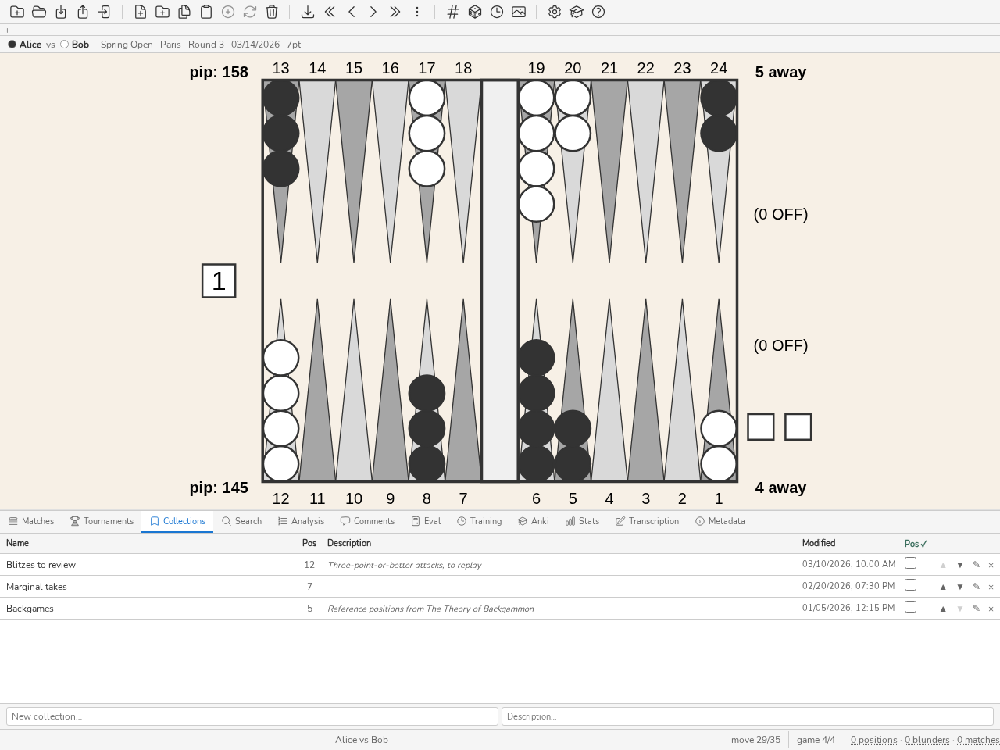
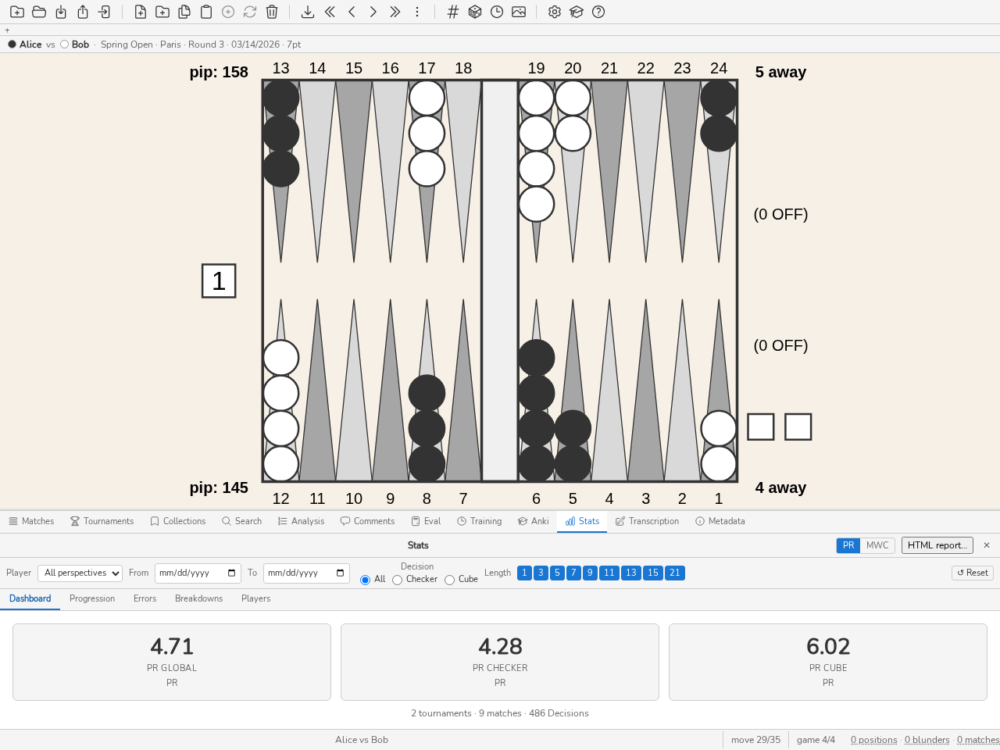

Manuale
Introduzione
blunderDB è un software per creare database di posizioni di backgammon. Il suo punto di forza principale è fornire un luogo unico in cui aggregare le posizioni che un giocatore ha incontrato (online, in torneo) e poterle riesaminare filtrandole secondo vari filtri combinabili arbitrariamente. blunderDB può anche essere usato per creare cataloghi di posizioni di riferimento.
Le posizioni sono memorizzate in un database rappresentato da un file .db. L’applicazione desktop apre questo file direttamente, mai un indirizzo di rete: la modalità server è un’altra modalità dello stesso binario, e si passa dall’una all’altra esportando o migrando il database, non puntando l’applicazione verso un URL.
Interazioni principali
Le principali interazioni possibili con blunderDB sono:
aggiungere una nuova posizione,
modificare una posizione esistente,
copiare l’immagine del board negli appunti (PNG) tramite CTRL-X, oppure con l’analisi completa tramite CTRL-X CTRL-X,
eliminare una posizione esistente,
cercare una o più posizioni,
importare match da diverse fonti (XG, GNUbg, BGBlitz, Jellyfish, HedgeHog), compresi i commenti dai file XG,
navigare tra le mosse di un match importato,
organizzare le posizioni in raccolte,
organizzare i match in tornei.
L’utente può etichettare liberamente le posizioni con tag e annotarle tramite commenti.
Descrizione dell’interfaccia
L’interfaccia di blunderDB è composta, dall’alto verso il basso, da:
[in alto] la barra degli strumenti, che raccoglie tutte le principali operazioni eseguibili sul database,
[al centro] l’area di visualizzazione principale, che permette di visualizzare o modificare posizioni di backgammon,
[in basso] la barra di stato, che presenta diverse informazioni sul database o sulla posizione corrente e integra la riga di comando.
Possono essere visualizzati dei pannelli per:
visualizzare i dati di analisi associati alla posizione corrente provenienti da eXtreme Gammon (XG), GNUbg o BGBlitz,
visualizzare, aggiungere o modificare commenti,
cercare e filtrare posizioni secondo criteri combinabili,
visualizzare e gestire le raccolte di posizioni (pannello raccolte),
visualizzare l’elenco dei match importati e navigare tra le mosse di un match (pannello match),
visualizzare e gestire i tornei (pannello tornei),
visualizzare le statistiche di performance (pannello Stats),
calcolare l’EPC (Effective Pip Count) di una posizione di bearoff (pannello Eval),
allenarsi su esercizi di calcolo (pannello Allenamento),
studiare le posizioni tramite ripetizione dilazionata (pannello Anki),
trascrivere un match a mano (pannello Trascrizione),
visualizzare i metadati del database (pannello Metadati).
L’altezza del pannello si regola trascinandone la maniglia; resta la stessa da una scheda all’altra.
Possono comparire finestre modali per:
visualizzare la guida di blunderDB, il cui campo di ricerca (/ vi porta il cursore) seleziona le occorrenze del testo digitato, senza distinzione di maiuscole né di accenti (INVIO passa alla successiva, MAIUSC-INVIO alla precedente),
visualizzare il catalogo delle visite guidate (vedi Visite guidate e database di esempio),
configurare le impostazioni di esportazione del database,
configurare blunderDB, in particolare la lingua dell’interfaccia (vedi Configurazione).
L’area di visualizzazione principale mette a disposizione dell’utente:
un board per visualizzare o modificare una posizione di backgammon,
il livello e il proprietario del cubo,
il pip count di ciascun giocatore,
il punteggio di ciascun giocatore,
i dadi da giocare. Se sui dadi non è mostrato alcun valore, la posizione dei dadi indica quale giocatore ha il turno e che la posizione è una decisione di cubo. Quando la decisione di cubo è una risposta a un raddoppio (prendi/passa), il cubo proposto è mostrato al centro del board, al valore offerto.
Gli appunti sono il gesto corrente; salvare è l’altro bisogno — l’illustrazione di un articolo, di un messaggio di forum, di una lezione. L”SVG è proposto perché la dama lo è: è la forma che sopravvive a un ingrandimento, quella che si mette in un documento senza sfocarla. Il PNG ne deriva, come la copia negli appunti: un solo rendering, tre destinazioni, quindi nessuna può divergere dalle altre. Questo menu non compare nel pannello Eval né nel pannello Ricerca, dove il tasto destro serve già a posare le pedine dell’altro colore. Vedere Portare una posizione nel pannello Eval per portare una posizione nel pannello Eval.
La barra di stato è strutturata da sinistra a destra con le seguenti informazioni:
la riga di comando, accessibile premendo il tasto SPAZIO,
un messaggio informativo relativo a un’operazione eseguita dall’utente,
l’indice della posizione corrente, seguito dal numero di posizioni nella biblioteca corrente (o le informazioni di mossa/partita durante la navigazione di un incontro),
il contatore della libreria — «412 posizioni · 38 blunder · 5 match» — dove ogni numero apre ciò che conta: le posizioni, la ricerca
E>alla soglia della libreria (avviata subito, come se fosse stata digitata, e registrata nella cronologia delle ricerche), o l’elenco dei match. Quando l’elenco a schermo non è l’intera libreria (ricerca, raccolta, match), la cifra dei blunder si scrive «12 / 340 blunder»: i blunder di quell’elenco, poi quelli della libreria, alla stessa soglia; un elenco di oltre 20 000 posizioni non viene contato e mantiene solo il totale. Una cifra che non si può seguire è una decorazione. La soglia dei blunder è quella della libreria, impostata nella scheda Libreria della configurazione e condivisa con le statistiche: due soglie farebbero dire due cose alla stessa parola. Il contatore promette esattamente ciò che il suo collegamento apre, anche per una posizione giocata in più modi, che vale il suo costo più elevato. In una libreria molto grande (oltre 200 000 righe) il contatore non scorre le tabelle: un numero preceduto da «≈» è una stima (un limite superiore, perché le righe eliminate lasciano dei vuoti). Se le posizioni sono stimate, il numero di blunder, che non ha una stima onesta, appare come «?» — il collegamento avvia la ricerca, che dà il conteggio esatto. I due numeri dei blunder sono link distinti: il primo avvia la sotto-ricercass E>nella lista a schermo, il secondo la ricerca in tutta la biblioteca; quando compare solo il totale, c’è un solo link.
Nota
Nel caso di posizioni derivanti da una ricerca dell’utente, il numero di posizioni indicato nella barra di stato corrisponde al numero di posizioni filtrate.
La scheda Anki porta un contrassegno quando ci sono carte da ripassare, in tutti i mazzi. Quella cifra è la ragione per aprire la scheda; non ha nulla da fare dietro di essa. Zero non mostra nulla: un contrassegno che dice «0» è rumore.
Il comando log apre il registro attività: le ultime duecento righe del file di log, un pulsante per copiarle — quanto serve per allegare un rapporto a una segnalazione — e un altro per aprire la cartella che le contiene. Il registro non è né filtrato né riformattato: un registro che si abbellisce è un registro che non si può più citare.
Il comando grid apre il provino: l’elenco sfogliato — risultati di una ricerca, libreria, collezione — come griglia di mini-tavolieri, disegnati come il tavoliere, in pagine da ventiquattro. Si apre sulla pagina della posizione corrente, la cui miniatura è incorniciata; un clic o INVIO su una miniatura ne apre la posizione sul tavoliere e chiude il provino, e si sfoglia interamente da tastiera (vedi Provino). Non si apre né in modalità modifica né in un match, che si sfoglia per mosse.
Nella cronologia delle ricerche del pannello Ricerca, ogni token di un comando salvato appare come un’etichetta con nome — Senza contatto, Errore di mossa — anziché come token nudo. Il comando esatto resta nel suggerimento, perché è quello che si rilancia; e un token che blunderDB non riconosce appare così com’è, non tradotto al più vicino.
Schede delle viste
Sotto la barra degli strumenti, una barra delle schede consente di lavorare con più viste in parallelo. Ogni vista è uno spazio di lavoro indipendente che conserva il proprio elenco di posizioni, l’indice della posizione corrente, la posizione visualizzata, l’analisi e la mossa selezionata, il pannello attivo, il commento in corso nonché il contesto di navigazione in un match. È così possibile, ad esempio, tenere aperta una ricerca in una vista mentre si scorre un match in un’altra.
Creare una vista: fare clic sul pulsante + della barra delle schede (chiamato + Nuova vista finché c’è una sola vista) o premere CTRL-T. La nuova vista parte come copia della vista corrente.
Chiudere una vista : fare clic sulla croce della scheda o premere CTRL-W. L’ultima vista non può essere chiusa.
Cambiare vista : fare clic su una scheda, premere CTRL-PageUp / CTRL-PageDown (o MAIUSC-J / MAIUSC-K) per passare alla vista precedente / successiva, oppure da CTRL-1 a CTRL-9 per raggiungere direttamente l’n-esima vista.
Rinominare una vista : fare doppio clic sulla scheda, inserire il nuovo nome e confermare con INVIO.
Una vista lasciata nel pannello Eval vi ritorna così come è stata lasciata: con la sua scacchiera di prova e, uscendo dal pannello, con la posizione che stava studiando. Anche l’ultima scacchiera di prova del pannello Eval è propria di ciascuna vista.
Le viste vengono salvate con lo stato di sessione del database e ripristinate alla sua riapertura.
Configurazione
Il pulsante di configurazione (icona a forma di ingranaggio) situato nella barra degli strumenti, a sinistra del pulsante di aiuto, apre la finestra di configurazione di blunderDB. È organizzata in nove schede:
Interfaccia — tema, lingua, scala di visualizzazione, posizione del pannello, passo di PageUp / PageDown (10, 50, 100, 500 o 1 000 posizioni, oppure il 10 % dell’elenco), registri, verifica degli aggiornamenti, il vostro nome e posizioni vicine;
Colori della board — i colori della board;
Libreria — ciò che appartiene al database aperto: le soglie di errore e di blunder, la compattazione e la riparazione, descritte qui sotto;
Corpus — i duplicati all’importazione, gli alias di giocatori ed eventi e la ricerca dei duplicati probabili (vedere l’importazione dei match);
Bearoff — le tabelle di bearoff usate dal pannello Eval;
gammonNet — le impostazioni del valutatore integrato, descritte qui sotto;
Cartella sorvegliata — l’importazione automatica degli incontri che arrivano in una cartella, descritta più sotto;
Assistente e MCP — il server MCP locale e l’assistente interno, descritti più avanti;
Identità dell’emittente — la chiave che firma i tuoi contrassegni di origine, descritta nella sezione Distribuire un database: origine e password.
La scheda Interfaccia comincia con un tema: seguire il sistema, chiaro, scuro, contrasto elevato o stampabile. Il tema regola i colori dell’interfaccia e propone una tavolozza per la dama — un’interfaccia scura attorno a una dama chiara non è un tema scuro, è la metà di uno, poiché la dama occupa gran parte della finestra.
Voi mantenete l’ultima parola, e il meccanismo lo garantisce anziché prometterlo: la scheda Colori continua a regolare la dama direttamente, e un colore scelto dopo il tema è il vostro. All’avvio sono applicati solo i token dell’interfaccia, mai la tavolozza della dama — quella che avete regolato è già caricata, e riscriverla a ogni lancio cancellerebbe il vostro lavoro una sessione alla volta. Vedere ADR-0038.
Seguire il sistema è l’impostazione predefinita: obbedisce alla preferenza chiaro/scuro della scrivania, anche quando cambia a metà sessione. Uno strumento non impone il proprio chiaro o scuro a una scrivania che ha già deciso.
La scheda Interfaccia permette anche di scegliere la lingua fra inglese, francese, tedesco, italiano, spagnolo, finlandese, giapponese, greco e russo. Tutta l’interfaccia (barra degli strumenti, pannelli, messaggi, aiuto) è tradotta nella lingua selezionata. La scelta della lingua è salvata e conservata da una sessione all’altra.
La scheda Libreria riunisce ciò che appartiene al file aperto e non alla macchina. È vuota finché nessun database è aperto, e lo dice.
Porta anzitutto le due soglie che decidono il vocabolario dell’intera applicazione: una decisione è un errore non appena il suo costo raggiunge la soglia di errore, e questo errore è un blunder non appena raggiunge la soglia di blunder. Ogni blunder è un errore, quindi la prima soglia non può superare la seconda, e blunderDB rifiuta la coppia invertita. I valori si inseriscono in equità — «0,080» — l’unità di tutte le tabelle; la riga di comando, invece, parla in millipunti, sicché la soglia 0,080 si scrive E>80 in una ricerca.
Queste soglie seguono il file, non il computer: lo stesso database conta gli stessi blunder ovunque lo si apra, blunderdb info le mostra, e blunderdb edit --error-threshold / --blunder-threshold le imposta. Non viaggiano in un’esportazione: una soglia è un’abitudine di lettura, non un fatto delle posizioni.
Tre preimpostazioni sono proposte con un clic, ciascuna con il nome del programma che ha tracciato quella linea: blunderDB (0,050 / 0,100), XG (0,020 / 0,080) e gnubg (0,040 / 0,080). Per impostazione predefinita, una libreria legge 0,050 e 0,100.
Ciò che cambiano, sullo schermo: il numero di blunder del contatore della barra di stato e la ricerca che il suo collegamento prepara, le colonne «Errori» e «Blunder» delle statistiche e della tabella dei giocatori, i segni delle mosse nella scheda di un match (Pannello Match), e l’elenco delle posizioni che blunderDB propone di rivedere dopo un’importazione.
La stessa scheda offre anche il pulsante Compatta il database, che recupera lo spazio su disco lasciato dalle eliminazioni (match, tornei, purghe): il database non si riduce mai da solo quando si cancellano dati, questa compattazione va chiesta esplicitamente. L’operazione può richiedere tempo su un database grande. La copia compattata viene scritta accanto al file e poi lo sostituisce: occorre, temporaneamente, circa la dimensione del database in spazio libero su disco sul suo volume, e non in memoria. Se un altro programma ha il database aperto (per esempio una seconda istanza in sola lettura), il file non viene sostituito: il database è compattato sul posto, il che richiede circa il doppio della sua dimensione in spazio libero, e un file temporaneo va nella cartella temporanea del sistema, o in quella indicata dalla variabile d’ambiente SQLITE_TMPDIR: con un /tmp piccolo, puntatela al volume del database. blunderDB rifiuta di partire, con un messaggio che dice cosa manca (spazio su disco, o meno di 512 MB di memoria disponibile), anziché rischiare una compattazione interrotta. Prima di avviarla viene chiesta una conferma. Il risultato — lo spazio guadagnato, in megabyte — appare poi nella barra di stato. La stessa operazione è disponibile da riga di comando con blunderdb vacuum (vedere Interfaccia a riga di comando (CLI)).
Dopo una compattazione sul posto, blunderDB verifica che il file si sia davvero ridotto. Su Windows, il sistema rifiuta di accorciare un file che un altro programma tiene aperto in certi modi: la compattazione termina allora con un messaggio che lo dice — chiudete l’altro programma e rilanciatela — invece di annunciare un guadagno che non c’è stato.
Il pulsante Apri la cartella dei registri, nella scheda Interfaccia, apre la cartella che contiene il registro dell’applicazione — utile per allegare dettagli a una segnalazione di problema, in particolare quando blunderDB è stato avviato da un collegamento o da un doppio clic, senza un terminale collegato che mostri qualcosa.
La casella Verifica gli aggiornamenti all’avvio, della stessa scheda, disattivata per impostazione predefinita, interroga una volta a ogni avvio la pagina delle ultime versioni del repository GitHub e mostra nella barra di stato un messaggio se è disponibile una versione più recente — mai una finestra che blocchi l’uso. Questa verifica resta disattivata automaticamente su un’installazione passata da un gestore di pacchetti (Flatpak, Homebrew, un pacchetto di distribuzione…): è quel canale a gestire allora gli aggiornamenti, non blunderDB stesso.
Due impostazioni della scheda Interfaccia governano l’ordinamento delle posizioni vicine (token like, vedere Pannello Ricerca): il numero di vicine restituite e la distanza massima oltre la quale una posizione cessa di esserlo. Questa distanza vale zero per impostazione predefinita, cioè nessun limite: la scala dipende dalla fase della partita, e un valore scelto qui si leggerebbe come una misura. Il token like<12 impone la propria per una ricerca, senza toccare l’impostazione.
La scheda Colori della board permette di personalizzare i colori della board. Ogni elemento dispone di un proprio selettore di colore: lo sfondo, il bordo, le punte chiare e scure, le pedine del giocatore 1 e del giocatore 2, i dadi, i punti dei dadi e il cubo. Il pulsante Reimposta ripristina tutti i colori predefiniti. Come la lingua, i colori scelti vengono mantenuti da una sessione all’altra.
La scheda Bearoff gestisce le tabelle di bearoff del pannello Eval (vedi Pannello Eval). Non sono né incorporate nell’eseguibile né scaricate: blunderDB le calcola sulla macchina che le usa, e il risultato è identico byte per byte a ciò che produce gnubg — l’impronta SHA-256 è verificata prima che una tabella venga accettata.
Le due tabelle ordinarie (TS-06-06 per il verdetto di cubo, OS-06 per l’EPC) sono calcolate al primo avvio, in secondo piano e senza chiedere nulla: circa sei secondi su un core, durante i quali l’applicazione si usa normalmente. Il pannello Eval lo segnala solo se vi si pone una posizione che ha bisogno di una tabella non ancora pronta.
La scheda mostra il dominio attivo e la sua origine, lo stato della tabella a un lato che legge l’EPC, la cartella dove tutto questo vive, e l’elenco delle tabelle presenti con la loro dimensione e il loro verdetto. Ogni riga si elimina singolarmente, dopo conferma.
Verificata o non verificata. Una tabella verificata ha esattamente i byte che gnubg produce per il suo dominio: la sua impronta SHA-256 figura in blunderDB ed è stata ritrovata. Le impronte registrate per le tabelle a un lato (da OS-06 a OS-10) sono quelle prodotte dallo strumento makebearoff di GNUbg 1.08. Una tabella non verificata è ben formata ma il suo dominio non ha impronta registrata — non le si rimprovera nulla, semplicemente nessuno l’ha confrontata con il riferimento. Una tabella corrotta si contraddice da sé e non viene mai letta; viene ricalcolata.
Calcolare una tabella più ampia. Il dominio si sceglie in un elenco di due famiglie, con il numero di core da dedicarvi (per impostazione predefinita tutti tranne uno, perché la macchina resti utilizzabile):
cubo esatto (due lati), da TS-06-06 a TS-06-15: amplia il dominio in cui la probabilità di vittoria e il verdetto del cubo sono letti anziché stimati;
EPC fuori dalla casa (un lato), da OS-06 a OS-10: amplia la distanza a cui una pedina può trovarsi senza che il blocco EPC taccia. Questo passaggio legge solo posizioni più piccole di quella che calcola, quindi è sequenziale per costruzione e il numero di core non gli serve — il selettore lo dice ingrigendosi.
Prima di lanciare qualsiasi cosa, la scheda dichiara tre cifre per il dominio scelto: la dimensione su disco, la memoria necessaria durante il calcolo e il tempo che dovrebbe volerci su questa macchina. Quest’ultimo comincia come stima e diventa una misura: ogni calcolo abbastanza ampio rileva la propria velocità e la conserva. Un dominio che la memoria disponibile non permette è proposto in grigio, con la ragione — « servirebbero 24 GB, ne restano 12 » è una risposta, una riga assente non lo sarebbe.
Come ordine di grandezza, su una macchina a sedici thread: TS-06-09 pesa 191 MB e richiede una decina di secondi, TS-06-11 pesa 1,2 GB e qualche minuto, TS-06-13 supera ciò che la maggior parte delle macchine può tenere in memoria. Dal lato a un lato, su un core: OS-07 pesa 4,9 MB e richiede 17 s, OS-08 15 MB e 1 min 20, OS-10 117 MB e mezz’ora.
Pausa e ripresa. Durante il calcolo, l’avanzamento mostra il tempo rimanente misurato e due pulsanti distinti: Pausa e Annulla. La pausa scrive lo stato del calcolo accanto alla tabella; rilanciarlo riprende da dove si era fermato invece di ricominciare. Annullare non conserva nulla. Chiudere la finestra di configurazione non interrompe niente — il calcolo prosegue in secondo piano.
Un calcolo messo in pausa si ritrova all’avvio successivo, nominato e quantificato («TS-06-09 interrotta al 43 %»), con Riprendi ed Elimina. Nulla riparte da solo: è l’utente ad aver chiesto l’arresto.
La scheda permette infine di puntare a un file .bd a due lati esterno, per esempio una base prodotta da gnubg stesso: vince la tabella dal dominio più ampio.
La scheda Libreria porta infine Riparare le analisi: le colonne di analisi che la ricerca e le statistiche interrogano sono una proiezione delle analisi memorizzate, le quali restano intatte. Un difetto di proiezione si ripara quindi senza reimportare nulla. È esplicito e mai automatico — riscrivere le colonne di analisi di qualcuno per il solo motivo che apre il proprio database non è una cosa che uno strumento debba fare alle sue spalle. Lo stesso blunderdb repair è disponibile nella riga di comando.
La scheda gammonNet regola il valutatore integrato (vedere ADR-0011). Vi si regolano due profondità di ricerca, denominate e conservate separatamente — abbassare l’una non modifica mai l’altra:
Profondità di visualizzazione — il comfort interattivo durante la modifica del tavoliere; mai scritta nel database.
Profondità di analisi — ciò che il lotto di analisi dopo l’importazione scrive nell’Analisi di una posizione.
Entrambe valgono per impostazione predefinita 2-ply, la configurazione canonica. La scheda propone anche la potatura (predefinita k=12) e il numero di mosse candidate mostrate (predefinito 10), oltre a una casella analizza automaticamente dopo l’importazione che, una volta attivata, verifica dopo ogni importazione se restano posizioni senza alcuna analisi (né gammonNet, né XG, né GNUbg, né BGBlitz — la regola è « una valutazione colma soltanto una lacuna », mai una sostituzione) e, se è il caso, avvia in background un’analisi gammonNet alla profondità di analisi configurata. Un pulsante Analizza ora riavvia manualmente lo stesso recupero, utile per una libreria creata prima dell’esistenza di questa funzione.
gammonNet valuta un’accettazione o un rifiuto sulla decisione di chi raddoppia, prima del raddoppio. Un verdetto gammonNet scritto su una tale risposta da una versione precedente di blunderDB giudicava il ri-raddoppio del ricevente: viene eliminato all’apertura della libreria, o all’importazione di una base che lo contiene. L’accettazione o il rifiuto torna a essere una posizione senza analisi, esclusa dalle statistiche finché Analizza ora (o l’analisi automatica dopo l’importazione) non la rivaluta.
Un secondo pulsante, Rianalizza le posizioni obsolete, copre il caso opposto: una posizione già analizzata da gammonNet, ma la cui analisi memorizzata è stata scritta con una versione del motore più vecchia di quella attualmente in esecuzione, o a una profondità diversa dalla profondità di analisi configurata sopra, viene lì segnalata come obsoleta e rivalutata. Una posizione che porta anche un’analisi XG, GNUbg o BGBlitz non viene mai toccata da questo pulsante, qualunque sia il suo contenuto gammonNet — la protezione di ADR-0013 resta incondizionata. Il numero mostrato accanto a ciascun pulsante (posizioni senza analisi, posizioni obsolete) è puramente informativo; il lotto ricalcola il proprio elenco all’avvio.
Entrambi i lotti sono limitati, visibili e annullabili, mai un demone silenzioso: il loro avanzamento (posizioni analizzate / totale) e un pulsante di annullamento compaiono nella barra di stato per tutta la loro durata, e scompaiono una volta terminati a favore di un messaggio che riassume il risultato — quante posizioni sono state analizzate, quante sono state rifiutate (una posizione che gammonNet rifiuta di valutare, come un punteggio di partita fuori dalla portata della sua tabella, il che non è mai un guasto) e quante sono fallite (ritentate, invariate, alla prossima esecuzione). Chiudere l’applicazione durante l’uno o l’altro non perde nulla: ogni posizione analizzata viene scritta man mano, e la prossima esecuzione riprende esattamente da dove l’analisi si era fermata, senza alcun registro da tenere.
La stessa scheda contiene l”impostazione dei rollout avviati dal pannello Analisi (vedi Rollout), conservata da una sessione all’altra: Veloce (216 partite, troncate a 7 semimosse), Standard (1296 partite, troncate a 11 semimosse) o Libera, dove tutti i parametri sono modificabili — troncamento, partite minime e massime (multipli di 36), limite di JSD, profondità (ply), numero di candidate, seme e numero di processi.
Tabella di equity del match della base. In fondo alla scheda, l’elenco Tabella di equity del match (MET) della base sceglie la tabella con cui gammonNet valuta i punteggi di match: Kazaross-XG2, integrata e predefinita, oppure una tabella importata da un file .xml di GNUbg con il pulsante Importa una MET .xml…. La scelta appartiene alla base, non all’applicazione: aprire un’altra base significa ritrovare la sua tabella. Sono lette solo le tabelle esplicite (non le tabelle parametriche zadeh o mec); oltre la lunghezza di una tabella importata, subentra la tabella integrata. Una tabella si identifica dai suoi valori, non dal suo nome: importare il Kazaross-XG2.xml di GNUbg non aggiunge nulla, è la tabella integrata. Ogni analisi calcolata da gammonNet registra la tabella con cui è stata calcolata; le analisi importate (XG, GNUbg, BGBlitz) sono considerate calcolate con Kazaross-XG2. Un’analisi a un punteggio di match calcolata con una tabella diversa da quella corrente è contrassegnata come MET diversa nel pannello di analisi ed esclusa dalle statistiche (medie degli errori, PR, classifiche, testa a testa); un’analisi in money game non lo è mai. Cambiare tabella non riscrive nessuna analisi: cambia solo ciò che i confronti considerano.
La valutazione in diretta del pannello e la matrice del cubo sono valorizzate con la tabella del database, come le analisi che registra. Una tabella viaggia con le analisi che la citano: l’esportazione di un database la porta con sé, e l’importazione di un database la aggiunge al database che la riceve, senza duplicati (una tabella già presente è riconosciuta dai suoi valori) e senza renderla corrente. Un’analisi gammonNet sostituita da quella di un altro motore (XG, GNUbg) torna a essere considerata calcolata con Kazaross-XG2.
Un incontro importato senza analisi ottiene così un PR. È il caso di un incontro giocato online, o di un file Jellyfish .mat, che nessuno ha fatto passare da XG: blunderDB ne conosceva le posizioni e le mosse giocate, ma nessuna analisi diceva quanto valessero. Una volta passato il lotto, la mossa effettivamente giocata è confrontata con la classifica di gammonNet e lo scarto alimenta il PR, il tasso di errore, le peggiori decisioni e tutti gli altri indicatori, esattamente come per un incontro analizzato da XG. Il confronto non inventa nulla: la mossa giocata proviene dalla tabella delle mosse dell’incontro, scritta all’importazione, che il file portasse un’analisi o no.
Un database analizzato con una versione precedente a questa non ha bisogno di essere rivalutato: blunderdb repair ricalcola le colonne a partire dalle analisi e dalle mosse già in archivio e restituisce il loro PR a quegli incontri (vedere repair).
Una riserva onesta: una posizione è identificata dalla sua struttura, quindi una posizione incontrata due volte — giocata bene una volta, male l’altra — porta un solo scarto, quello della sua prima occorrenza registrata. Non è proprio di questo calcolo: una biblioteca XG ha esattamente la stessa forma.
Cartella sorvegliata
La scheda Cartella sorvegliata chiede a blunderDB di guardare una cartella mentre gira e di importare ogni file di incontro che vi compare. Giocare una sessione in eXtreme Gammon, tornare a blunderDB, e trovare gli incontri già lì.
Nulla è indovinato. Finché nessuna cartella è indicata non c’è sorveglianza: blunderDB non si mette a leggere una directory perché ha supposto dove vivono i vostri incontri. Il pulsante Proporre guarda i posti abituali su questa macchina e ne propone uno solo se esiste davvero; altrimenti lo dice, e indicare la cartella spetta a voi.
Tre punti meritano di essere noti prima di attivare la casella:
Sono importati solo i file che compaiono. Ciò che la cartella contiene già quando la sorveglianza parte è registrato come noto e lasciato in pace: puntare una sorveglianza su quattro anni di incontri non deve importarli tutti. Per importare ciò che c’è, usate l’importazione di cartella, che esiste per questo — e le due si compongono benissimo, prima l’importazione, poi la sorveglianza.
Un file è importato solo quando la sua dimensione si è stabilizzata. Un incontro che un altro programma sta scrivendo cresce da un’occhiata all’altra; importarlo scritto a metà darebbe un errore di analisi su cui nessuno può agire. blunderDB attende quindi di vedere due volte lo stesso file immutato.
L’importazione è silenziosa. Stavate studiando una posizione quando sono arrivate le vostre partite: togliervi lo schermo sarebbe il momento peggiore. La modalità, la ricerca attiva, la scheda e la posizione visualizzata non si spostano; l’elenco delle posizioni non viene ricaricato e mostra le nuove partite al prossimo ricaricamento. L’importazione avviene senza finestra, e la barra di stato mostra un banner con il conteggio delle partite importate, ignorate (duplicati) e fallite, con un pulsante che apre il rapporto completo se lo desiderate. Tutto il resto è identico a un’importazione manuale: gli stessi duplicati rilevati, lo stesso lotto di importazione, la stessa analisi automatica se è attivata.
L’intervallo predefinito è di dieci secondi; il minimo è due. La cartella non è percorsa ricorsivamente: una cartella sorvegliata è il posto dove uno strumento deposita i suoi incontri, non un albero da esplorare. Una condivisione di rete smontata non ferma la sorveglianza e non fa nemmeno passare il suo contenuto per nuovo al ritorno.
La stessa sorveglianza esiste da riga di comando, con blunderdb import --type batch --dir <cartella> --watch (vedere Interfaccia a riga di comando (CLI)): è la forma che un server, un’attività pianificata o uno script possono usare.
Assistente e MCP
La scheda Assistente e MCP regola due cose, entrambe disattivate per impostazione predefinita.
Il server MCP locale offre gli strumenti di blunderDB (ricerca, lettura di una posizione e della sua analisi, statistiche di un giocatore, quiz…) a un assistente che parla il Model Context Protocol, come Claude Desktop o Claude Code, finché la finestra è aperta. Ascolta solo su questa macchina, all’indirizzo http://127.0.0.1:<porta>/mcp (porta 8765 per impostazione predefinita), e rifiuta una richiesta proveniente da una pagina web. Aggiunge due strumenti di visualizzazione: aprire una vista su una ricerca e mostrare una posizione. Gli strumenti si limitano a leggere, salvo se Consenti la scrittura è spuntata: possono allora salvare una posizione, commentarla, creare e riempire una collezione, valutare una carta Anki e registrare un rollout accanto all’analisi di una posizione; nulla cancella. Senza una finestra aperta, blunderdb mcp serve gli stessi strumenti (vedi Interfaccia a riga di comando (CLI)).
L”assistente interno è un client di questi stessi strumenti. Nessun modello è incorporato: si rivolge a un fornitore compatibile con OpenAI — Ollama su questa macchina per impostazione predefinita, oppure Groq, OpenRouter, Gemini, Anthropic o un altro indirizzo. È remoto ogni indirizzo esterno a questa macchina, qualunque sia il fornitore scelto: le vostre frasi e i risultati degli strumenti la lasciano allora, la scheda lo dice e attende il vostro consenso per quell’indirizzo preciso; un altro indirizzo lo richiede di nuovo. La chiave API va nel portachiavi del sistema, mai nel database né nel file delle impostazioni. Il modello proposto per impostazione predefinita per Ollama, qwen2.5:7b, è un punto di partenza, non una raccomandazione: nessuna raccomandazione di modelli viene fatta senza un punteggio del banco di misura fornito con il codice sorgente.
Una volta attivato, l’assistente è una sotto-scheda Assistente del pannello Ricerca. Una frase — «i miei errori di oltre 50 millipunti nella corsa» — apre una nuova vista col suo nome, vi avvia la ricerca e vi passa; i suoi token restano nella cronologia delle ricerche. Ciò che gli strumenti restituiscono proviene dal database; ciò che il modello scrive è contrassegnato come Testo libero del modello. L’assistente propone una modifica solo se la casella Lasciare che l’assistente proponga modifiche (ciascuna confermata) è spuntata — un’impostazione distinta dalla scrittura del server MCP locale — e ogni modifica che prepara viene mostrata ed eseguita solo dopo Conferma.
La finestra di configurazione raggruppa anche alcune impostazioni di visualizzazione dell’interfaccia. Un cursore di scala dell’interfaccia consente di ingrandire o ridurre l’insieme degli elementi, il che è utile sugli schermi ad alta densità o per migliorare la leggibilità. Un menu posizione dei pannelli determina la collocazione dei pannelli (ricerca, match, analisi) rispetto al tavoliere: in basso, di lato o automatica (il lato viene allora scelto sugli schermi larghi per sfruttare meglio lo spazio disponibile). Come le altre impostazioni, queste scelte vengono conservate da una sessione all’altra.
Visite guidate e database di esempio
Per facilitare i primi passi, blunderDB propone delle visite guidate dell’interfaccia. Il catalogo delle visite si apre dalla barra degli strumenti o con il comando tutorial (alias tour). Sono disponibili sette visite: una visita generale dell’interfaccia e visite dedicate alla ricerca di posizioni, alla revisione dei match, alla revisione dei tornei, al pannello Eval, al ripasso Anki e alle statistiche. Ogni visita evidenzia gli elementi interessati dell’interfaccia, passo dopo passo, apre strada facendo il pannello di cui parla, e può essere rigiocata in qualsiasi momento. Al primo avvio, la visita generale viene proposta automaticamente.
Il comando demo carica un database di esempio che permette di scoprire le funzionalità dello strumento senza importare le proprie partite: tre partite (due delle quali raggruppate in un torneo) analizzate da eXtreme Gammon, BGBlitz e gammonNet, tre raccolte tematiche, commenti con etichette (#blunder, #cube) e un mazzo Anki con il suo registro dei ripassi. Giocatori, torneo e luogo sono fittizi. Le visite guidate si basano su questo database quando nessun database è aperto.
Modifica delle posizioni
La pressione del tasto TAB apre il pannello di ricerca e permette di modificare una posizione sul board per aggiungerla al database o per definire una struttura di posizione da cercare. La distribuzione delle pedine, il cubo, il punteggio e il turno possono essere modificati con il mouse (vedi Modificare una posizione).
Suggerimento
Fare riferimento a Scorciatoie da tastiera per le scorciatoie disponibili.
La riga di comando
La riga di comando, integrata nella barra di stato, permette di eseguire tutte le funzionalità di blunderDB disponibili nell’interfaccia grafica: operazioni generali sul database, navigazione delle posizioni, visualizzazione dell’analisi e/o dei commenti, ricerca di posizioni secondo filtri… Dopo aver preso confidenza con l’interfaccia, si raccomanda di utilizzare progressivamente la riga di comando, che consente un uso potente e fluido di blunderDB, in particolare per le funzionalità di ricerca delle posizioni.
Per aprire la riga di comando, premere il tasto SPAZIO. Per inviare una richiesta e chiudere la riga di comando, premere il tasto INVIO.
blunderDB esegue le richieste inviate dall’utente a condizione che siano valide e modifica immediatamente lo stato del database se necessario. Non sono richieste azioni di salvataggio esplicite da parte dell’utente.
Suggerimento
Fare riferimento a elenco dei comandi per l’elenco dei comandi disponibili nella riga di comando.
La tavolozza dei comandi
La tavolozza dei comandi (CTRL-MAIUSC-P) ritrova con un nome approssimativo ciò che non si sa più dove cercare: un comando della riga di comando, una scheda, un filtro della libreria o un match. Le lettere digitate devono comparire nell’ordine, non necessariamente attaccate, senza badare a maiuscole e accenti: «mtrcb» trova la matrice del cubo, «lyon» i match di un torneo di Lione.
Le frecce scelgono, INVIO esegue, ESC chiude. Un comando si esegue come se fosse stato digitato; s e ss aprono la riga di comando per scriverci i filtri; un filtro si esegue come con un doppio clic nella libreria; un match si apre come con un doppio clic nel pannello Match.
Quando una Direzione è aperta, la tavolozza vi aggiunge il torneo: giocatori, tavoli, match in corso e prove (vedi la ricerca rapida).
Pannello Analisi
Il pannello Analisi (CTRL-L) visualizza i dati di analisi della posizione corrente importati da eXtreme Gammon (XG), GNUbg, BGBlitz o gammonNet. Mostra le migliori alternative (mosse di pedine o decisioni di cubo) con i relativi valori di equity e gli errori corrispondenti. Il tasto d alterna tra l’analisi delle mosse di pedine e l’analisi del cubo. Durante la navigazione in un match, la mossa effettivamente giocata viene evidenziata nell’elenco delle alternative. Premere CTRL-L o eseguire il comando list per mostrare o nascondere il pannello.
Una posizione senza analisi lo indica, con un pulsante Valuta che la apre nel pannello Eval.
Il pulsante Sfida della barra degli strumenti, posto dopo quello del pipcount (tasto m), serve a pronunciarsi prima di vedere l’analisi scorrendo le posizioni: risultati di una ricerca, revisione di un match, ripasso dei propri errori. Attivo, copre con una zona grigia tutta l’analisi del pannello, pedine e cubo; un clic sulla zona la rivela. Torna a ogni cambio di posizione. La sfida è una maschera di visualizzazione: rivelare non registra nulla nel database. L’impostazione resta fino alla chiusura di blunderDB, come quella del pipcount. Nella revisione di un match, la sfida nasconde anche i segni, le perdite e la difficoltà dell’elenco delle mosse; quelli della mossa mostrata si rivelano con la sua analisi.
Sotto le tabelle, una frase dice a volte quanto è costata la decisione giocata e perché: «Perdi 120 mp: la mossa giocata lascia tre pedine scoperte dove 13/7 8/7 ne lascia solo una.» Viene da sei regole misurabili — l’esposizione, un punto di casa fatto o mancato, le probabilità di gammon abbandonate, una sicurezza che costa più di quanto renda, e i due sensi di un errore di cubo (raddoppiare troppo tardi o troppo presto, prendere troppo largo o passare troppo stretto).
La regola che conta è quella del silenzio: la frase compare solo se una regola si applica con sicurezza, e su un errore oltre la soglia da cui i motori concordano che lo sia. Il resto del tempo non c’è frase — né cornice vuota, né «non lo sappiamo». Una spiegazione sbagliata costa più di nessuna spiegazione: insegna qualcosa di inesatto.
La stessa frase accompagna l’errore dove lo avete appena commesso: sul retro di una carta Anki, sotto l’analisi rivelata, e nel verdetto del quiz dell’esercizio Decisione, sotto il costo in mp. Valgono le stesse regole di silenzio: una mossa giusta, o un errore che nessuna regola spiega, non aggiunge nulla.
Quando una posizione è stata giudicata da più motori, una fascia in testa al pannello li mette fianco a fianco: una riga per motore, con la sua profondità e la sua risposta — il verdetto del cubo, o la sua propria mossa migliore. Dice anzitutto se concordano, ed è il disaccordo a giustificarla: «XG dice raddoppio, presa; gammonNet dice niente raddoppio» si legge a colpo d’occhio, là dove bisognava confrontare due tabelle in diagonale.
La mossa migliore di un motore è la migliore di quel motore: l’elenco delle mosse candidate è ordinato per equità, con tutti i motori mescolati, quindi il suo primo elemento non è la mossa migliore di nessuno in particolare.
La fascia appare solo se ci sono davvero più motori, ed esiste unicamente in questo pannello: il pannello Eval presenta una decisione, quella del motore integrato (ADR-0017), e un confronto non vi avrebbe posto.
Le mosse sono scritte come si leggono sul tavoliere, qui come nel pannello Eval: la pedina meno avanzata si muove per prima, e una pedina che concatena più dadi si scrive una sola volta — un 64 giocato con la stessa pedina si legge 24/14, e 24/14* se colpisce all’arrivo. Il dettaglio della concatenazione ricompare solo quando dice qualcosa in più: un colpo lungo il percorso conserva il suo punto di passaggio, 24/18* 18/14, senza il quale il colpo sul 18 sparirebbe dalla notazione.
L’equità di un’analisi importata segue la stessa regola del pannello Eval: la colonna indica il proprio referenziale, «Equity (money)» o «Equity (match)» a seconda del punteggio della posizione analizzata, mai un semplice «Equity» muto sulla scala. Le regole Jacoby e Beaver attive su una posizione money game vengono mostrate anch’esse, in badge sotto la tabella di decisione del cubo.
Rollout
Il pannello Analisi sa rollare una posizione: giocare centinaia di partite a partire da ogni mossa scelta, o da ogni azione del cubo, per distinguere due scelte che la valutazione diretta separa a malapena. Nella tabella delle mosse candidate, Ctrl+clic aggiunge o toglie una mossa dalla selezione e Maiusc+clic la estende fino alla mossa cliccata; il clic semplice seleziona una sola mossa, come d’abitudine. Un clic destro sulla selezione — o su un’altra mossa, che diventa la selezione — apre un menu la cui voce Rollout (Standard) avvia subito il rollout delle mosse selezionate con l’impostazione scelta. Su una decisione di cubo, il clic destro rolla l’intera decisione. Il tasto Maiusc+R del pannello fa lo stesso (senza selezione, rolla le migliori candidate della posizione), come il comando rollout (alias ro). Durante il rollout, una barra sottile sotto la tabella segue le partite giocate; Annulla, la voce Annulla il rollout del menu, Esc o ancora Maiusc+R lo fermano senza scrivere nulla. L’impostazione — Veloce, Standard o Libera — si sceglie nella scheda gammonNet della configurazione (vedi configurazione).
Lo stesso menu propone Copia la posizione e l’analisi, l’immagine che copia CTRL-X CTRL-X: la tavola e l’inizio dell’elenco delle mosse, oppure l’intera analisi del cubo. Non appena una mossa è selezionata, si aggiunge una seconda voce, Copia la posizione e le mosse selezionate: l’immagine conserva solo quelle mosse, nell’ordine della classifica, ciascuna preceduta dal suo rango fra tutti i candidati e con il suo scarto dalla migliore mossa della posizione, non dalla migliore della selezione. Su una decisione di cubo compare solo la prima. Le celle delle tabelle di analisi non si selezionano come testo: i clic di selezione non vi lasciano evidenziazioni.
Il risultato è memorizzato accanto all’analisi, mai al suo posto: un’analisi importata non viene modificata. Ogni mossa rollata porta il suo risultato nella propria riga della tabella, in una colonna Rollout che compare solo quando la posizione ha un rollout: l’equità e la semiampiezza del suo intervallo di confidenza al 95 %, sulla scala della colonna dell’equità. Passare il cursore sulla cella dà il dettaglio: la deviazione standard, la JSD (la distanza dalla mossa migliore in deviazioni standard della differenza: dal limite in poi, la mossa è decisa e non viene più giocata), il numero di partite e la Configurazione — il motore e la firma completa dei parametri: due rollout con la stessa firma sono gli stessi numeri. Il rollout si ferma non appena le mosse sono distinte. Il rollout di una decisione di cubo, che non ha una riga di mossa, viene mostrato come tabella sotto la decisione. Un rollout gioca il cubo nelle sue partite: la classifica è affidabile, l’equità assoluta un po” meno, come ricorda il blocco. Non gioca il beaver: la sua riga raddoppio, presa è quella di una semplice presa, anche su una posizione money con la regola Beaver, dove l’analisi diretta conta il beaver. Una posizione che non è nel database si può rollare, ma non viene memorizzata.
Il comando ro search rolla, una dopo l’altra, le posizioni della lista mostrata — risultati di ricerca, partita o collezione — che non portano ancora questo rollout; una conferma indica il totale prima di iniziare. Ogni posizione viene scritta appena finita: annullare conserva quanto è fatto, e rilanciare riprende da dove ci si era fermati. L’avanzamento sopravvive alla chiusura del pannello.
Un database aperto in sola lettura, perché un’altra istanza di blunderDB lo detiene, rifiuta subito un rollout che verrebbe memorizzato: un messaggio lo dice prima che sia giocata la prima partita.
Pannello Commenti
Il pannello Commenti (CTRL-P) mostra, aggiunge e modifica i commenti associati alla posizione corrente. Una posizione può averne diversi, scritti da persone diverse: sono tutti mostrati in un thread, dal più recente al più vecchio, ciascuno con il nome del suo autore, e i vostri vengono per primi. I commenti importati dai file XG sono associati automaticamente alle posizioni corrispondenti. Premere CTRL-P o eseguire il comando comment per mostrare o nascondere il pannello.
Il nome che firma i vostri commenti si imposta nelle preferenze, scheda Interfaccia, campo Il vostro nome; se è vuoto, i vostri commenti non sono firmati. I commenti di un’importazione XG sono firmati XG, quelli di un file di partita con il nome del suo trascrittore. Riscrivere un commento lo firma con il vostro nome. La ricerca au"Alice" trattiene le posizioni che Alice ha commentato; fuori dall’interfaccia, blunderdb comment add --author scrive un commento firmato e blunderdb comment list li rilegge (vedere Interfaccia a riga di comando (CLI)).
Ogni commento proveniente da un file porta un”etichetta di provenienza (XG, GNU BG, BGF, oppure importato quando la provenienza non è mai stata registrata). I commenti che hai scritto non ne portano: è il caso normale, e segnalarlo a ogni riga sarebbe rumore. Modificare un commento importato te lo attribuisce: dopo la modifica, la frase è la tua.
Questa distinzione si vede altrove: cancellare una partita non distrugge più una posizione su cui tu avevi scritto. Una nota ripresa dal file di origine, invece, sparisce con la partita che l’ha portata.
Il cestino
Eliminare una posizione, una collezione, un commento, una carta Anki o un match passa da un cestino: l’eliminazione avviene davvero, ma una copia di ciò che sparisce è conservata trenta giorni. Il comando trash apre la finestra che li elenca, ciascuno con Ripristina ed Elimina, e un pulsante Svuota il cestino.
Una posizione ripristinata torna con la sua analisi e i suoi commenti — restituirla nuda sarebbe un ripristino solo di nome —, il suo segno «studiata» e le risposte di allenamento date su di essa. Riprende il suo vecchio numero; se nel frattempo la stessa posizione è stata salvata, si tiene quella, perché una posizione esiste una sola volta: riceve il segno, le risposte e i commenti che le mancano, e tiene la sua analisi se ne ha una. Se il suo numero è preso da un’altra, ne riceve uno nuovo. Una collezione torna con la sua lista; le posizioni che conteneva non erano mai state eliminate — una collezione è una vista su di esse.
Un match eliminato porta con sé le sue partite, le sue mosse, le loro analisi e le posizioni che nient’altro trattiene, con le note del file di origine: il cestino conserva tutto questo. Ripristinato, torna con il suo numero e la sua data di importazione originali, con le sue partite, le sue mosse e le sue statistiche, e il registro della sua importazione lo nomina di nuovo; le posizioni che l’eliminazione aveva rimosso tornano come una posizione ripristinata, quelle rimaste nella libreria restano come sono diventate. Riprende il suo posto nel torneo; se il torneo è stato eliminato, torna fuori torneo. Riprende il suo posto nella Direzione se esiste ancora, oppone gli stessi giocatori ed è libero; altrimenti resta al direttore e il match torna senza. In questi casi, la barra di stato lo segnala. Il ripristino è rifiutato, e la voce resta nel cestino, se un altro match occupa il suo numero, o se nel frattempo è stato importato un match con la stessa impronta di file; un match senza impronta, inserito o giocato in blunderDB, non viene confrontato così.
Ciò che ha più di trenta giorni viene eliminato dal comando vacuum, mai dall’apertura di una base: non fare vacuum è tenere tutto.
Nota
Il cestino non viaggia: un’esportazione non lo porta con sé.
Pannello Ricerca
Il pannello Ricerca (CTRL-F o TAB) permette di filtrare le posizioni secondo criteri liberamente combinabili: struttura delle pedine, tipo di decisione di cubo, magnitudo dell’errore, date, tag, ecc. Il tasto TAB apre contemporaneamente il pannello di ricerca e l’editor di posizione, consentendo di definire una struttura di pedine da cercare direttamente sul board.

Il pannello Ricerca: filtri numerici, struttura di pedine sul tabellone, schede Almeno / Tranne.
I filtri si impostano nella sottoscheda Criteri. Quando una ricerca non trova nulla, il pannello lo indica («Nessuna posizione corrisponde») con un pulsante Cancella i filtri, senza limitarsi alla barra di stato.
Per cercare tra le posizioni visualizzate, usare il comando ss seguito da filtri (es.: ss nc, ss E>40). ss cerca nell’elenco sullo schermo: i risultati della ricerca precedente, la collezione aperta o le posizioni del match in revisione, sia che il comando venga digitato direttamente sia dal pannello di ricerca (TAB). La casella Cerca nei risultati attuali del pannello segue la stessa regola; la casella Apri in una nuova scheda mostra i risultati in una nuova vista (vedi Schede delle viste) anziché nella vista corrente. In una collezione e in un match, s è rifiutato: cercherebbe in tutta la libreria e sostituirebbe l’elenco visualizzato.
Dai risultati di una ricerca ss avviata da una collezione o da un match si esce con Esc, con una sola pressione non appena né un campo né il pannello che ha il focus ha qualcosa da chiudere (una mossa selezionata nell’analisi, per esempio): blunderDB torna alla collezione intera, o al match sulla mossa studiata, e alla posizione lasciata. Questo ritorno segue solo ss: s, avviato dal pannello di ricerca aperto su una collezione o un match, cerca in tutta la libreria, e Esc non riporta più all’elenco lasciato.
Una ricerca su un database grande viene mostrata prima di essere contata: la prima pagina di risultati compare subito, e la barra di stato indica « Ricerca… » con il tempo trascorso finché il totale non è noto; questo sostituisce allora la lunghezza provvisoria dell’elenco. Una sola ricerca alla volta è in corso: avviarne un’altra abbandona la precedente. Esc interrompe la ricerca in corso e ferma la sua scansione del database; se la prima pagina era già visualizzata, resta da sola, e la barra di stato lo dice.
Il pannello offre un controllo esplicito del tipo di decisione ricercato: Indifferente (nessun filtro), Pedine (decisioni di mossa) o Cubo (decisioni di cubo). Quando è selezionato Cubo, un secondo elenco precisa il sotto-tipo: Tutti, Raddoppio / No raddoppio (il giocatore di turno deve decidere se raddoppiare) o Accetta / Passa (risposta a un raddoppio avversario). Il controllo è sincronizzato con il board: modificare i dadi o il cubo sul board aggiorna il tipo di decisione, e viceversa. In modalità Accetta / Passa, il cubo è mostrato al centro del board al valore offerto; tale valore resta modificabile.
La fase di gioco — apertura, mediogioco, corsa, uscita delle pedine — è un’etichetta che blunderDB calcola dalla sola tavola. Non è mai modificabile ed è cercabile tramite il token ph: della riga di comando (ph:race, ripetibile: ph:race ph:bearoff). Tre delle sue quattro frontiere sono quelle che GNU Backgammon usa per indirizzare le sue reti; la quarta, dove finisce l’apertura, è una convenzione di blunderDB: una posizione è ancora in apertura finché nessuno dei due campi ha mosso più di quattro pedine dai propri punti di partenza, nessuna è uscita e nessuna è sulla barra.
Nota
L’etichetta viene ricalcolata dal comando blunderdb repair. Su una base aperta per la prima volta con questa versione, il calcolo avviene una volta, all’apertura. Una base le cui fasi non sono mai state calcolate non restituisce nulla per ph: — nulla, piuttosto che una risposta sbagliata.
Il token like ordina invece di restringere: la sua presenza dispone il risultato per distanza crescente da una posizione bersaglio — like quella corrente, like42 quella di indice 42 — e gli altri token restringono l’insieme così ordinato, tanto che s like42 E>80 si legge «le vicine della 42 dove ho sbagliato». La distanza è una distanza di trasporto in pip di pedina, la quantità di movimento di pedine che separa due posizioni, vista dal giocatore di turno.
Una vicina è lo stesso problema, non lo stesso disegno: l’ordinamento si prende dentro la classe del bersaglio — stesso tipo di decisione, stesso regime (soldi o incontro) per una decisione di cubo, e un incontro diverso dal suo, perché le posizioni che la circondano nella sua stessa partita sono le sue strutture più vicine senza esserne mai le vicine. Dadi, punteggio e cubo restano fuori classe; i token ordinari li filtrano quando lo si vuole. like42* allarga la classe a tutti i tipi di decisione e a entrambi i regimi, mai all’incontro del bersaglio; like<12 scarta ciò che dista più di dodici pip di pedina. Un ordinamento che non trova nulla rende una lista vuota e lo dice, invece di dieci posizioni senza rapporto.
In modo modifica, s like prende per bersaglio la dama disegnata: si disegna all’incirca la posizione di cui ci si ricorda, si lancia, e la biblioteca risponde — là dove la ricerca per struttura esige il disegno esatto. La dama è allora letta come una posizione e non come un motivo: un punto lasciato vuoto conta come pedine fuori, il che è esatto per una posizione reale e falsa il calcolo per un disegno lasciato a metà.
Ogni vicina porta la sua distanza sotto le tabelle di analisi, insieme alla posizione di cui è vicina. È questo che permette di giudicare se si guarda una vicina o una coincidenza, ed è la ragion d’essere del limite. L’ordinamento si lancia anche senza passare dalla riga di comando: CTRL-MAIUSC-L, oppure la voce Posizioni vicine del menu contestuale della dama.
Il token n conta gli incontri: n>3 mantiene le posizioni incontrate almeno tre volte nella base, tutte le partite e tutti i giocatori insieme. È una domanda diversa da «cosa ho sbagliato» — una posizione incontrata venti volte e ben giocata diciannove resta quella da sapere a memoria. Si contano decisioni, non partite: la stessa posizione due volte in una partita vale per due, perché erano due decisioni. Combinato con un filtro giocatore, conta solo le occorrenze di quel giocatore: n>3 pl!"Alice" mantiene le posizioni che Alice ha dovuto giocare almeno tre volte, e pl"Alice" quelle delle partite che ha disputato; op"Bob" limita allo stesso modo il conteggio alle partite contro Bob.
Il piano di gioco è una seconda etichetta derivata, accanto alla fase, e risponde alla domanda che un pacchetto di filtri salvati non sa porre: «mostrami i miei errori in holding game». Token gt:, ripetibile (gt:holding gt:mutualholding), dal punto di vista del giocatore di turno — il piano in cui la decisione veniva presa.
I dieci piani riconosciuti, nell’ordine in cui le regole li esauriscono, dal più specifico al più generale:
race— le pedine più arretrate dei due schieramenti si sono incrociate: nessun contatto è più possibile. Frontiera di GNU Backgammon.bearin— il giocatore di turno rientra le pedine mentre l’avversario tiene ancora un’ancora nella sua casa.crunch— il giocatore di turno ha al più sei pedine fuori dai suoi punti 1 e 2. Regola di GNU Backgammon, soglia del suo autore.backgame— due o più ancore nella casa avversaria.acepoint— una sola ancora, sul punto uno avversario, con almeno venti pip di ritardo.blitz— tre o più punti di casa fatti, e l’avversario alla barra o con una pedina scoperta da colpire in quella casa.primevprime— entrambi tengono un blocco di almeno quattro punti, e ciascuno ha una pedina intrappolata dietro quello dell’altro.mutualholding— entrambi tengono un’ancora alta.holding— il giocatore di turno tiene un’ancora alta, l’avversario no.contact— contatto, e nessuno dei piani sopra. L’apertura finisce qui.
Tre di queste regole sono quelle di GNU Backgammon e sono documentate; le altre sono convenzioni di blunderDB. La letteratura del backgammon descrive i piani di gioco senza quantificarne le frontiere, e nessuna misura di accordo tra classificatori è pubblicata per questo problema. Le soglie non documentate — tre punti di casa per un blitz, quattro punti per un blocco, venti pip di ritardo per un ace-point game — sono quindi enunciate qui invece di restare nascoste nel codice, e sono versionate: cambiarle ed eseguire blunderdb repair rietichetta l’intera base.
Nota
Una sola etichetta è conservata per posizione, quella del giocatore di turno. Un’etichetta derivata non è mai modificabile, mai esportata come verità, e una base i cui piani non sono mai stati calcolati non restituisce nulla per gt: — come per ph:.
Il filtro Contrassegnata conserva le posizioni che avete contrassegnato nel software di origine della partita. Solo eXtreme Gammon produce questa informazione, registrata mossa per mossa nel file .xg; blunderDB la legge all’importazione e la conserva. Una decisione di cubo contrassegnata dà due posizioni contrassegnate, il raddoppio e l’accetta/passa, poiché blunderDB divide in due ciò che il file di origine registra come una sola decisione.
Nota
La marcatura non è retroattiva: le partite già presenti nel database non contengono questa informazione, poiché esiste solo nei file di origine. È sufficiente reimportare il file .xg interessato — l’importazione rileva il duplicato e non aggiunge altro che i contrassegni, senza toccare i commenti né le analisi esistenti. Il contrassegno non può essere né posto né rimosso da blunderDB: per un elenco di lavoro temporaneo, utilizzate piuttosto una collezione.
Il filtro Commento interroga i commenti associati alle posizioni secondo tre modalità esclusive. contiene il testo cerca una o più parole nel testo dei commenti (campo di immissione, parole separate da ;, almeno una deve corrispondere); ha un commento conserva ogni posizione che porti un commento, qualunque sia il suo contenuto; senza commento conserva al contrario le posizioni non annotate — utile, combinato con un filtro di errore o di data, per stilare l’elenco di ciò che resta da commentare.
Nota
I commenti importati da un file di partita (XG, GNUbg) contano come commenti. Per tenere solo i tuoi, aggiungi il token co:user sulla riga di comando (co:xg, co:gnubg, co:bgf e co:unknown designano le altre provenienze). Del resto, i commenti associati a una partita o a un torneo non sono interessati: annotano la partita o il torneo, non le sue posizioni.
Il filtro Match & Tornei si basa su un selettore comune (finestra modale) anziché sull’inserimento di identificativi numerici: due elenchi con caselle di spunta, uno per i match e uno per i tornei, ciascuno filtrabile per testo (giocatore, data, evento per i match; nome, data, luogo per i tornei), con pulsanti Tutti / Nessuno che agiscono solo sul sottoinsieme attualmente filtrato. Selezionare un torneo seleziona automaticamente (e disabilita, mostrandoli in grigio) i match che ne fanno parte nell’elenco dei match, rendendo visibile il fatto che un torneo equivale all’insieme dei suoi match.
La banda del pannello di ricerca reca un selettore Criteri (i filtri) | Cronologia | Salvati — con un quarto segmento, Assistente, quando l’assistente interno è attivato — e, su Criteri, il pulsante Cerca alla sua estremità destra. La scheda Cronologia elenca le ricerche passate con la loro data e il loro comando: un clic seleziona una ricerca e mostra la posizione associata sul tavoliere, un doppio clic la riesegue. Ogni voce può essere salvata nella libreria dei filtri (icona segnalibro, dando un nome al filtro) o eliminata. La scheda Salvati contiene la libreria dei filtri: fare doppio clic su un filtro salvato per rilanciare la ricerca corrispondente (vedi Appendice: Utilizzo avanzato dei filtri). Il comando history (alias hi) apre il pannello di ricerca.
La stella di un filtro della libreria lo fissa. I filtri fissati compaiono come etichette in cima al pannello, qualunque scheda sia aperta, numerati nell’ordine della libreria: un clic su un’etichetta lancia il filtro, e ALT-1 … ALT-9 lanciano il filtro fissato di quel rango da qualsiasi schermata in modalità NORMAL o EDIT, senza aprire il pannello. Il filtro pone allora la stessa domanda del doppio clic, struttura delle pedine compresa. La fissazione appartiene al database: segue il filtro rinominato, scompare con il filtro eliminato e non viaggia con l’esportazione della libreria.
Una ricerca rilanciata conserva la sua classifica: s like42 classifica rispetto alla posizione 42, e s like rispetto alla tavola salvata con la ricerca — quella che si stava consultando o disegnando. Una voce che non ha conservato la tavola non viene rilanciata contro quella sullo schermo, e la barra di stato lo segnala.
Suggerimento
Fare riferimento a elenco dei comandi per l’elenco dei filtri disponibili.
Pannello Raccolte


Il pannello Collezioni: nome, numero di posizioni, descrizione, ultima modifica.
Nei pannelli Collezioni, Tornei, Anki e Trascrizione, il pulsante + dell’intestazione, seguito dal nome di ciò che crea (+ Nuova collezione, + Nuovo torneo, + Nuovo mazzo, + Nuova trascrizione), è l’unico gesto di creazione: apre il campo di inserimento, che Esc o Annulla chiude nei pannelli Collezioni e Tornei. Nell’elenco dei match, l’icona ⌨ apre la trascrizione del match e l’icona ✎ ne corregge i metadati.
Il pannello Collezioni (CTRL-B) consente di gestire collezioni di posizioni. Le collezioni possono essere create, rinominate ed eliminate. Vi si possono aggiungere o togliere posizioni (tasto Canc, viene chiesta conferma). Fare doppio clic su una collezione per scorrerne le posizioni con i tasti SINISTRA e DESTRA. Il comando ss cerca tra le posizioni della collezione aperta; Esc riporta poi alla collezione (vedere Pannello Ricerca). L’ordine delle collezioni e delle posizioni all’interno di una collezione può essere modificato per trascinamento. Premere CTRL-B o eseguire il comando collection per mostrare o nascondere il pannello.
Nell’intestazione di una collezione aperta, il numero di posizioni è un link che le rimette nello scorrimento, dalla prima; la casella in questa collezione aggiunge o toglie la posizione mostrata. Un elenco vuoto propone + Nuova collezione.
La Pila è la raccolta del gesto «rivedere più tardi»: un doppio clic fuori dalla scacchiera, il tasto b o il pulsante segnalibro della barra degli strumenti mette la posizione mostrata sulla Pila, e lo stesso gesto la toglie. Un segnalibro all’angolo della scacchiera indica che la posizione vi si trova, senza altro messaggio. Il gesto vale ovunque sia mostrata una posizione: revisione, ricerca, modifica, Eval, Trascrizione, quiz, Duello. L’azzeramento della scacchiera passa per il menu del clic destro (vedi menu della scacchiera). La Pila è una raccolta ordinaria — rinominata, riordinata, esportata, svuotata come le altre; è creata al primo uso e ricreata se è stata eliminata. Una posizione che non è ancora nella libreria (una bozza della scacchiera di ricerca o di valutazione) vi è scritta all’istante, come una posizione portata da sola, poi messa sulla Pila. La riga di comando fa lo stesso gesto con collection pile.
Una raccolta può essere viva: il suo contenuto non è più una lista fatta a mano ma il risultato di una ricerca, rivalutato ogni volta che la si apre. Il pulsante ◇ in testa alla raccolta la rende viva con l’ultima ricerca lanciata; ◈ segnala che lo è già, e lo stesso pulsante le restituisce la lista. Nulla viene distrutto: le posizioni che conteneva sono ancora lì quando si torna indietro.
Il pulsante ❄, visibile su una raccolta viva, la congela: le posizioni che la ricerca seleziona in quel momento diventano il contenuto di una raccolta ordinaria, nell’ordine della ricerca, e la query viene cancellata. Le posizioni che conteneva prima di essere viva vengono sostituite.
Una raccolta viva la cui interrogazione porta un token che questa versione non conosce più rifiuta di aprirsi e lo dice, invece di restituire l’intera base. È l’unico guasto che un filtro salvato non deve avere: allargarsi in silenzio.
Un mazzo di ripetizione dilazionata basato su una raccolta viva riesegue la sua interrogazione a ogni apertura di sessione: le posizioni che la ricerca seleziona dall’ultima volta vi entrano, e le carte già presenti conservano la loro pianificazione. Una valutazione è limitata da un tetto di 5.000 posizioni; quando l’interrogazione ne seleziona di più, solo le prime, nell’ordine della ricerca, alimentano il mazzo, e la barra di stato lo segnala insieme al numero reale di posizioni selezionate.
Il pulsante Proponi… dell’intestazione apre le posizioni di riferimento: una breve lista di posizioni da studiare, scelta tra i tuoi errori in modo che ciascuna ne riassuma molti. Studiare i dieci errori peggiori dà spesso dieci varianti di uno stesso problema, o posizioni singolari che non insegnano nulla sulle altre; una posizione di riferimento sta al centro di più dei tuoi errori, di struttura simile, e la sua lezione serve a tutti.
Gli errori sono quelli del piano di studio: quantificati in MWC e ordinati per famiglia (piano di gioco, natura, tema). Due errori di una famiglia sono vicini se distano al massimo 12 passi di pedina nella distanza
like; un errore di cubo ha come vicini solo quelli dello stesso punteggio.Ogni posizione vale l”MWC recuperabile (perdita meno difficoltà) delle sue vicine e di se stessa: ciò che la sua lezione renderebbe se servisse a tutte. Una lezione risicata (la seconda scelta costa meno di mezzo errore) o un verdetto instabile (un’altra profondità o un rollout dice altro) conta per metà; un rollout che conferma viene segnalato. La cifra all’inizio di ogni riga è l’MWC coperto; la ragione dà la cifra conteggiata quando la lezione conta per metà.
La lista è varia: una posizione scelta copre le sue vicine, che non rendono più nulla alle successive, e nessuna posizione proposta è un quasi-duplicato di un’altra. Una posizione già trattata — commentata, in una collezione, una carta Anki o contrassegnata come «studiata» — non viene mai proposta, e le sue vicine sono considerate coperte.
L”ambito è l’intero database, la partita in corso, un torneo o il filtro del pannello Statistiche; il giocatore è quello di questo filtro. La dimensione è di 10, 20 o 50 posizioni. Ogni riga indica la sua famiglia, il suo punteggio se si tratta del cubo, l’MWC che copre e la sua ragione: quanti errori e partite riassume, la dimensione della sua famiglia tra le tue decisioni, il suo recuperabile proprio, il distacco dalla seconda scelta. Un clic su una riga apre la posizione; le caselle spuntate diventano con un clic una collezione, un mazzo Anki o un quiz. Da riga di comando: blunderdb collection suggest (vedi collection — Gestire le collezioni).
Lezioni
Una lezione è una sequenza di passi che un coach scrive una sola volta per un allievo e gli consegna in un file di database (vedi il comando lesson export in Interfaccia a riga di comando (CLI)). Ogni passo ha un titolo, un testo e può mostrare una collezione, una posizione, entrambe o nessuna. Il comando le elenca le lezioni del database nella barra di stato; le 2 apre la lezione 2; le edit apre l’editor delle lezioni.
Compare allora una barra di lettura sopra la scacchiera: nome della lezione, numero del passo, titolo, poi il testo. Precedente e Successivo cambiano passo; il passo porta sulla scacchiera la collezione o la posizione che mostra, che si scorre poi con i gesti consueti. Chiudi esce dalla lezione. Un passo la cui collezione o posizione è stata eliminata conserva il suo testo.
La casella Passo fatto della barra segna il passo corrente come fatto; un secondo clic toglie il segno, e la barra conta i passi fatti. È l’unico gesto che scrive qualcosa: leggere una lezione, cambiare passo o aprirla non registra nulla, né il passo raggiunto né l’apertura. Il segno viene scritto nel database aperto, quello dell’allievo, e nessuna esportazione lo porta con sé. Importare un file che contiene una lezione la crea; una lezione con lo stesso nome già presente non viene toccata.
L’editor delle lezioni si apre con le edit (le edit 2 sulla lezione 2) o con il pulsante Modifica della barra di lettura. A sinistra, l’elenco delle lezioni e un campo per crearne una; a destra, il nome e la descrizione della lezione scelta, poi i suoi passi. Ogni passo ha un titolo, un testo, una collezione scelta dall’elenco e una posizione: Posizione corrente vi allega la posizione mostrata sulla scacchiera, Stacca la posizione la toglie. Salva il passo scrive le sue modifiche; le frecce lo spostano di un posto; Aggiungi un passo ne aggiunge uno in fondo. Leggi chiude l’editor e apre la lezione al suo primo passo; Elimina cancella la lezione e i suoi passi, senza toccare le collezioni né le posizioni che mostravano. Le lezioni si creano e si modificano anche da riga di comando o tramite l’API (Le lezioni).
Un backup — l’esportazione dell’intera libreria dalla finestra di esportazione o dalla riga di comando — include tutte le lezioni. Nella finestra di esportazione, la casella Includi le lezioni le sceglie una per una: ogni lezione spuntata parte con le collezioni e le posizioni che i suoi passi mostrano, e il file può portare un contrassegno di origine o essere protetto da password (.dbx) come ogni esportazione. Senza questa casella, un’esportazione parziale (una selezione di posizioni, collezioni o partite) non include le lezioni.
Importazione: cosa viene scritto, cosa non lo è mai
Importare un match, una posizione o un altro database aggiunge ciò che manca; non sostituisce ciò che è già presente.
Una posizione non è mai duplicata. È la sua identità — pedine, cubo, dadi, punteggio — a riconoscerla, mai il file da cui proviene: la stessa posizione incontrata in due match resta un’unica riga.
Un’analisi per motore. eXtreme Gammon, GNUbg, BGBlitz e il valutatore integrato convivono sulla stessa posizione, e il pannello Analisi indica l’origine di ciascuna. Importarne una non cancella l’altra.
Un’analisi importata non viene mai ricalcolata. blunderDB la conserva così com’è, con la sua etichetta di livello (« 3-ply », « XG Roller++ », « Book »), le sue equità, i suoi errori, le sue probabilità e la fortuna del lancio. La regola è « una valutazione colma soltanto una lacuna »: l’analisi automatica dopo l’importazione visita solo le posizioni senza alcuna analisi, e Rianalizza le posizioni obsolete lascia intatta ogni posizione che porta un’analisi importata (vedere Configurazione).
Reimportare un match già presente porta solo ciò che è più profondo. Il match è riconosciuto dal suo gioco (giocatori, lunghezza, dadi, mosse, cubo), non dalla sua analisi: nessun match, partita o mossa viene riscritto. Le marcature poste nel software d’origine vengono aggiunte, e un’analisi più profonda di quella salvata la sostituisce, posizione per posizione — una versione Roller++ dello stesso match sostituisce la versione 3-ply, qualunque sia l’ordine d’importazione; a profondità uguale o minore, l’analisi salvata resta. Reimportare lo stesso file quindi non riscrive nulla. Il rapporto d’importazione distingue i duplicati che non portavano nulla da quelli che hanno approfondito delle analisi. Da riga di comando,
--skip-duplicatessalta un duplicato senza riprenderne altro che le marcature. Un match troncato e poi completato (più partite) non è lo stesso match: viene importato come un secondo match.Un’analisi illeggibile non impedisce l’importazione del match. Una decisione la cui analisi contiene un valore che non è un numero finito (NaN o infinito, presenti in alcuni file XG) viene importata senza quell’analisi; il resto del match entra normalmente, e il resoconto dell’importazione conta le decisioni interessate.
Un match già presente con altri nomi viene segnalato, mai unito. Le due impronte del match includono i nomi dei giocatori: «Martin A.» e «Alice Martin» fanno due match. L’importazione confronta anche i dadi (lunghezza, punteggio iniziale, dadi di ogni partita) e segnala, sotto la riga del file e nel rapporto, il match già presente nel database con altri nomi di cui ha i dadi.
blunderdb repair --duplicateselenca queste coppie in un database esistente, insieme ai match troncati e alla loro versione più lunga.Un nome noto con un’altra grafia viene registrato con il suo nome canonico. Un alias dice che «Martin A.» è un’altra grafia di «Alice Martin» (o che un nome di evento è un’altra grafia di un altro). All’importazione, i nomi dei giocatori e dell’evento vengono sostituiti dal loro nome canonico, e il match viene collocato nel torneo dell’evento canonico. Le impronte del match conservano i nomi del file: un file importato prima che il suo alias esistesse si riconosce quindi sempre. Un match i cui dadi sono quelli di un match presente nel database, e i cui nomi differiscono solo per alias noti, non è un secondo match: le sue analisi arricchiscono quello archiviato.
Gli alias si gestiscono nella scheda Corpus delle impostazioni: scegliere Giocatori o Eventi, inserire l’alias e il nome canonico, oppure togliere un alias dall’elenco. Proponi elenca i nomi che differiscono solo per maiuscole, accenti, punteggiatura o ordine delle parole; non viene applicato nulla senza un clic su Applica. La stessa scheda contiene la casella Ignora i duplicati all’importazione (l’equivalente di --skip-duplicates, per la sessione) e la ricerca dei duplicati probabili di un database esistente, quella di blunderdb repair --duplicates: ogni coppia è data dai suoi numeri di match, nulla viene unito. Sotto una coppia con gli stessi dadi, Crea questi alias registra con un clic gli alias di giocatore che farebbero nominare ai due match gli stessi giocatori, la grafia del match più recente diventando l’alias: una sola proposta quando un nome è comune a entrambi, altrimenti due — posto per posto, poi incrociata — tra cui si sceglie quella che dice chi è chi. Da riga di comando: blunderdb players alias e blunderdb events alias.
Una cartella si importa in parallelo. I file vengono letti su più core contemporaneamente e scritti a gruppi, sempre nell’ordine della cartella: i numeri dei match non dipendono dalla macchina. Un file identico, byte per byte, a un file già letto della stessa cartella non viene riletto: conta come duplicato. Annullare ferma l’importazione al gruppo in corso; ciò che era già scritto resta.
L’avanzamento si legge in posizioni al secondo. La finestra di importazione mostra la percentuale letta, la velocità, il tempo rimanente stimato e i conteggi in corso (importati, duplicati, in errore). Riduci la sposta nella barra di stato, da cui un’etichetta la riapre: l’importazione continua mentre lavori, e la finestra torna da sola con il rapporto alla fine. I primi cento errori sono elencati; i successivi sono contati, e il registro dell’applicazione li nomina tutti. Dalla riga di comando,
blunderdb import --type batchmostra lo stesso avanzamento sullo standard error, e--format jsonlo restituisce nell’oggetto finale (progress).Ogni file di un’importazione viene registrato, e un’importazione interrotta può essere ripresa. Per ogni file, il registro del lotto conserva il percorso, la dimensione, la data di modifica, l’impronta SHA-256 e il risultato: partita nuova (con il suo numero), duplicato (con la partita che lo copre), partita arricchita o errore (con il messaggio). Un’importazione annullata o interrotta si continua senza ripetere ciò che è già deciso: un file con lo stesso percorso, la stessa dimensione e la stessa data viene saltato senza essere letto; un file con lo stesso contenuto viene letto ma non analizzato; un file in errore viene riprovato. Nell’applicazione, la finestra di fine importazione elenca il registro (un file per riga, con il suo risultato e il messaggio di un errore; un file riprovato mostra il suo ultimo esito), e una riga che ha prodotto una partita la apre. Un’importazione annullata lascia la finestra aperta con il pulsante Riprendi. Da riga di comando,
blunderdb import --type batch --dir <cartella> --resume <lotto>riprende il lotto il cui numero è stato mostrato all’avvio dell’importazione, e--format jsonrestituisce il registro nell’oggetto finale (journal). Il server accettaresumenella richiesta diimports.batche restituisce il registro tramiteimports.files. Il registro è un dato dell’importazione: aprire o leggere un database non vi scrive nulla.Un’importazione interrotta dall’arresto dell’applicazione si riprende dalla finestra. Il comando
:resumeelenca le importazioni che nulla ha terminato; si sceglie quella da continuare, poi si indicano di nuovo la cartella o i file, come--dirda riga di comando. Il registro del lotto decide che cosa non viene riletto.Una cartella grande si importa in modalità massiva. A partire da 200 file, blunderDB scrive con una cache più grande e meno checkpoint. Se il database non contiene ancora alcuna posizione, va oltre: gli indici di ricerca vengono ricostruiti solo alla fine e le scritture non sono più sincronizzate sul disco. Un’interruzione di corrente durante un’importazione del genere può allora danneggiare il database: bisogna ricrearlo e rilanciare l’importazione. Un arresto brusco del programma, invece, lascia solo indici mancanti, che l’apertura successiva ricostruisce (il registro lo segnala).
Ciò che blunderDB non scrive mai: una fortuna ricalcolata — è letta dal file sorgente o resta sconosciuta — e un rollout che non ha lanciato lui stesso: i dati di rollout di un file
.xgnon vengono aperti. Sono memorizzati solo i rollout che blunderDB produce (Rollout), accanto all’analisi.
Pannello Match
Il pannello Match (CTRL-Tab) elenca i match importati. Fare doppio clic su un match (o premere INVIO) per navigare tra le sue mosse. Il comando m riprende la navigazione nell’ultimo match visitato.
Il campo filtro, in alto nel pannello (/ per andarci, Esc per cancellarlo), mantiene solo le partite in cui un giocatore, l’evento, il luogo, il torneo o la data contiene il testo digitato. Il filtro e l’ordinamento delle colonne sono eseguiti dal database: l’elenco si carica a pagine durante lo scorrimento e il contatore «n / N partite» indica la parte caricata. Correggere un giocatore, una data o un torneo nell’elenco aggiorna solo la riga modificata.
Quando l’elenco è vuoto, il pannello propone Importa… (Ctrl+I); senza un database aperto propone invece Apri un database…, insieme a Torna alla schermata iniziale. Quando è il filtro di testo ad aver svuotato l’elenco, propone Cancella il filtro. I pannelli Stats, Collezioni e Anki vuoti offrono gli stessi pulsanti.
L’utente può:
scorrere le mosse di un match usando i tasti SINISTRA e DESTRA,
passare da una partita all’altra con i tasti PageUp e PageDown,
visualizzare l’analisi delle mosse (pedine e cubo) premendo CTRL-L,
alternare tra l’analisi delle mosse di pedine e quella del cubo con il tasto d,
vedere la mossa effettivamente giocata evidenziata nell’analisi,
cercare tra le posizioni del match con il comando
ss(es.:ss E>80); Esc riporta poi alla mossa studiata (vedere Pannello Ricerca).
L’ultima posizione visitata in ciascun match viene memorizzata e ripristinata automaticamente. Premere CTRL-Tab o eseguire il comando match per mostrare o nascondere il pannello.
Il pulsante ⊕ di una riga arricchisce quell’incontro da un file. Dietro non c’è nulla di nuovo: reimportare lo stesso incontro in un altro formato lo arricchisce già sul posto — l’impronta canonica riconosce che si tratta dello stesso incontro, e le analisi e i commenti del secondo file completano il primo. Ciò che il pulsante apporta è che lo si trova: nessuno indovina che un’importazione è anche un arricchimento. Il resoconto che segue dice quale dei due è avvenuto — «arricchiti: 1» invece di «importati: 1».
Ogni match può essere esportato come trascrizione Jellyfish .mat tramite il pulsante ⬇ dell’elenco dei match o la voce Esporta .mat del menu ⋯ della scheda del match.
Un clic su un match apre la sua scheda. Una riga di intestazione dà i giocatori, il punteggio finale (il vincitore in grassetto, il suo nome al passaggio del puntatore), la lunghezza, la cadenza se c’è e la data; il torneo, il turno e il luogo compaiono al passaggio del puntatore. A destra, l’icona 🎞 di un match che ha un video, il pulsante Rivedi e il menu ⋯, che contiene Esporta .mat, Modifica la trascrizione ed Elimina il match. Segue la sintesi del bilancio del match, poi una barra di tab: Trascrizione, che elenca le mosse partita per partita (un clic su una mossa vi porta la revisione), Grafici, Da rivedere, Dettagli, Info e Statistiche. Il tab scelto occupa tutta l’altezza rimanente del pannello e scorre da solo, mentre l’intestazione e la sintesi restano al loro posto; quando un tab ha il focus, le frecce sinistra e destra passano al precedente o al successivo. Il tab lasciato aperto resta aperto al match successivo. Un tab senza contenuto non compare: un match senza analisi non ha né Da rivedere né Dettagli, un match senza perdita né durata nota non ha Grafici.

La scheda di un match: l’intestazione, la sintesi del bilancio per giocatore, poi il tab Grafici, con una decisione sotto il puntatore.
Ogni mossa della trascrizione porta la sua gravità: ? per un errore, ?? per un blunder, un filetto colorato al margine della riga, e il costo della mossa in equity al passaggio del puntatore sul segno. Le soglie sono quelle del database (Configurazione), le stesse con cui contano le statistiche. La mossa è giudicata così come è stata giocata: una stessa posizione giocata due volte nel match riceve due giudizi. Una mossa che l’analisi non valuta non porta alcun segno.
L’intestazione di ogni partita conta i suoi segni, che sia espansa o no: si vede senza aprirla in quale partita si trovano i blunder. Un clic su un conteggio carica quelle posizioni nel pannello di analisi.
Quando la partita è analizzata, la trascrizione aggiunge la colonna MWC, le probabilità di vincere la partita che la decisione è costata, in percentuale: 0 per una decisione senza perdita, un trattino per una decisione che l’analisi non valuta o il cui punteggio non ha valore nella tabella di equità della partita (gioco a money, decisione fuori dalle statistiche). Un clic sull’intestazione MWC ordina le mosse di ogni gioco dalla perdita più pesante alla più leggera, poi il contrario, poi ripristina l’ordine della partita; le decisioni non valutate passano per ultime, e questo ordinamento sostituisce quello per durata. Il tab Grafici mostra due grafici a tutta larghezza sull’asse delle decisioni di quello delle durate: una barra per decisione, poi la perdita cumulata di ciascun giocatore, che si ferma al suo totale (tratto pieno per il primo giocatore, tratteggiato per il secondo). Ogni grafico ha il suo titolo, la sua legenda, la sua scala a sinistra e, sotto l’asse, il numero di ciascuna partita (P1, P2…), con una linea tratteggiata che segna il passaggio da una partita alla successiva. Una decisione non valutata porta un piccolo segno alla base della barra, senza altezza. Passare sopra una decisione, o scorrerle con le frecce (i tasti Inizio e Fine portano alle estremità), la segna su tutti i grafici e sulla sua riga della trascrizione, e un suggerimento mostra il gioco, la mossa, il giocatore e la perdita; il suggerimento si colloca dal lato in cui sta per intero nella cornice del grafico, anche in un pannello stretto. Un clic, o Invio, porta lì la revisione. Lo stesso vale per il grafico delle durate. Fuori dall’interfaccia, match --format json aggiunge decision_losses (una voce per mossa, con mwc_loss pari a null per una mossa non valutata), --format text una riga « MWC loss » per mossa valutata e --format summary il totale per giocatore.
Difficoltà ed errori evitabili. Una perdita dice quanto è costata una mossa, non se era difficile trovare quella giusta. La colonna Diff., accanto a MWC, dà la difficoltà della decisione: la perdita di probabilità di vincere la partita che un giocatore di riferimento subirebbe in media nella stessa posizione. Questo giocatore di riferimento non gioca alla perfezione: sceglie ogni opzione con una probabilità tanto più bassa quanto più costa, π(i) proporzionale a exp(−Δᵢ/τ), dove Δᵢ è il costo dell’opzione i rispetto alla migliore, in equity normalizzata. La difficoltà vale d = Σ π(i)·Δᵢ, convertita in MWC al punteggio e al cubo della decisione come la perdita: è espressa nella stessa unità, una percentuale di probabilità di vincere la partita. Le opzioni sono i candidati dell’analisi per una mossa di pedine; non raddoppio e raddoppio (contro la migliore risposta) per chi ha il cubo; accetto e passo per chi riceve il raddoppio. La temperatura τ vale 0,025: la decisione a due opzioni più difficile è quella con uno scarto di circa 0,032, e una posizione con cinque candidati distanziati di 0,01 dà l’errore medio di un giocatore di circa PR 6; è un a priori di giocatore forte, fissato prima di esaminare qualsiasi risultato.
Come leggerla: una decisione ovvia, o forzata, ha una difficoltà vicina a 0 senza che alcuna soglia la distingua; una decisione serrata, in cui più opzioni stanno a pochi millesimi, ne ha una grande. Una perdita molto superiore alla difficoltà è un errore che la posizione non giustificava; una perdita vicina alla difficoltà, un errore che farebbe anche un buon giocatore. Una decisione è un errore evitabile, contrassegnato da un ! accanto alla sua perdita e da un punto sopra la sua barra, quando la sua perdita raggiunge la soglia di errore della base e la sua difficoltà non ne supera un decimo: su una decisione a due opzioni, il giocatore di riferimento non la commetterebbe una volta su dieci. Nel grafico per decisione, la difficoltà è un tratto orizzontale su ogni barra: una barra che sale molto sopra il suo tratto segnala un errore evitabile.
La tabella del tab Dettagli dà, per ogni giocatore, la sua perdita di MWC totale (quella dell’elenco delle partite), il numero di decisioni valutate e, sulle decisioni che hanno una perdita e una difficoltà: la difficoltà totale, l”eccesso Σ(perdita − difficoltà), in MWC, ciò che il giocatore ha perso oltre il giocatore di riferimento (negativo quando ha fatto meglio), il rapporto perdita totale / difficoltà totale (1: gioca come il giocatore di riferimento; 2: perde il doppio) e il numero di errori evitabili. Il rapporto non è dato quando la difficoltà totale è sotto lo 0,5 %: su una partita troppo facile misurerebbe solo rumore, l’eccesso resta.
Perché guardarla: il PR e la perdita MWC mescolano due cose, la qualità del gioco e la difficoltà delle posizioni incontrate. Un avversario che crea posizioni complesse fa salire l’errore dell’altro; una partita di corsa pura lo fa scendere. La difficoltà corregge entrambi gli effetti: l’eccesso e il rapporto confrontano il giocatore con ciò che ci si poteva aspettare nelle sue posizioni. Per lo studio, ordina gli errori: gli errori evitabili sono disattenzioni o una regola saputa male, da rivedere per primi e spesso facili da correggere; le perdite su decisioni difficili sono lavoro di fondo (rollout, principi, posizioni di riferimento) e pesano meno nel giudizio su una partita.
Incertezza e limiti: la difficoltà dipende da un modello di giocatore e da τ, fissati una volta; cambiare l’uno cambia tutte le cifre. Conosce solo i candidati che l’analisi ha conservato (pochi in XG, secondo i filtri in GNU Backgammon): le opzioni assenti non pesano nulla e la difficoltà è allora un minorante. Eredita l’errore dell’analisi stessa, soprattutto a bassa profondità. Su una sola partita, l’eccesso e il rapporto poggiano su poche decisioni e variano molto da una partita all’altra: indicano una tendenza, non una classifica. La difficoltà è calcolata solo per le decisioni la cui perdita è valutata; altrove vale un trattino. Fuori dall’interfaccia, match --format json riporta difficulty e avoidable su ogni voce di decision_losses e il riepilogo per giocatore sotto difficulty_summary; --format text aggiunge le righe «Difficulty» e «Avoidable error», --format summary la difficoltà, l’eccesso, il rapporto e il numero di errori evitabili.
Bilancio del match. Il bilancio risponde, per ogni giocatore, alle tre domande che ci si pone dopo un match: che cosa rivedo, ho perso per i dadi o per il gioco, e i miei errori vengono dalla fretta o da una lacuna? Le soglie sono state fissate prima di esaminare qualsiasi risultato.
In testa alla scheda, sopra i tab, una sintesi affianca i giocatori (uno sotto l’altro quando il pannello è stretto): il nome, con il tratto che lo designa sul grafico cumulato, il PR, la perdita di MWC del match e, per un match terminato, il verdetto della fortuna in chiaro («vinto con il gioco», «perso per i dadi»…) seguito dal solo risultato corretto. Il passaggio sul PR ne mostra l’intervallo; quello sul verdetto, le componenti del risultato corretto. Il resto si divide tra due tab: Dettagli dà gli intervalli, la perdita riportata a 7 punti e la fortuna; Da rivedere, le decisioni da rivedere e la ripartizione degli errori tra affrettati e ponderati:
PR e perdita di MWC riportata a 7 pt, con il loro intervallo al 95 %, calcolato ricampionando le partite del match. La perdita riportata a 7 punti è la perdita del match messa sulla scala di un match a 7 punti (L₇, vedere Metriche e strumenti di studio): serve a confrontare match di lunghezze diverse, mentre la sintesi mostra solo la perdita del match stesso. Servono tre partite; un match più corto mostra un trattino. Un intervallo ampio indica che un match non basta per giudicare un livello: confrontatelo con gli altri vostri match invece di concludere da un solo valore.
Risultato corretto per la fortuna, per un match concluso. Il risultato è l’esito (100 % vinto, 0 % perso) meno le probabilità iniziali (50 % sullo 0-0); la fortuna netta somma la fortuna dei vostri tiri meno quella dei tiri avversari, ogni tiro convertito in MWC al punteggio e al cubo della sua posizione, come una perdita. Il risultato corretto è il risultato meno la fortuna netta. Se è positivo in un match perso, hanno deciso i dadi; negativo, il gioco. Lo scarto degli errori (perdita dell’avversario meno la vostra) è ciò che il risultato corretto stima: le due cifre coincidono quando la fortuna è completa. La copertura è indicata quando alcuni tiri non hanno una fortuna misurata (un file senza fortuna, un tiro non analizzato); senza alcun tiro misurato, o per una partita a denaro, la riga non compare.
Tre decisioni da rivedere: tra i vostri errori (soglia della base), quelli con la parte evitabile della perdita, perdita − difficoltà, più grande — cioè la perdita moltiplicata per il suo carattere evitabile. Un errore che avrebbe commesso anche il giocatore di riferimento non vale una sessione: si rivede prima ciò che era alla portata. Un clic sulla decisione la mostra, come una riga dell’estratto.
Errori affrettati e ponderati, quando il match ha conservato la durata delle decisioni: un errore giocato più in fretta della mediana delle vostre decisioni dello stesso tipo (pedine o cubo) in questo match è affrettato, gli altri ponderati. La mediana è la vostra, in questo match: non dipende dal ritmo, e senza legame tra velocità ed errore gli errori si dividerebbero metà e metà. Una maggioranza affrettata richiede disciplina (rallentare su queste posizioni); una maggioranza ponderata, conoscenza (studiare la famiglia di posizioni).
Il tab Dettagli termina con la tabella delle perdite e della difficoltà descritta sopra. match --format summary stampa lo stesso bilancio, e il server lo serve tramite /v1/stats.matchReview.
Quando la partita ha conservato la durata delle sue decisioni (una partita giocata contro un bot), la trascrizione aggiunge tre colonne allineate sulle cifre: Cubo (la decisione di cubo, presa prima del lancio o sulla riga del cubo stessa), Gioco (la mossa di pedine) e Orologio, il tempo che il giocatore di turno ha consumato dall’inizio della partita, questa mossa compresa, qualunque sia l’ordinamento. Sotto una cadenza, la colonna diventa Orologio residuo e dà il tempo che resta sull’orologio del giocatore dopo la mossa, calcolato come lo conta l’arbitro del Duello (ritardo per turno, riserva azzerata al superamento). Le informazioni della partita e la sua intestazione ricordano la cadenza (preimpostazione, ritardo, comportamento al superamento) e la banca del tempo di ciascun giocatore, riportata al punteggio iniziale quando la riserva è contata per punto rimanente. Un clic sull’intestazione Gioco ordina le mosse di ogni gioco dalla più lunga alla più breve, poi dalla più breve alla più lunga, poi ripristina l’ordine della partita; una casella senza durata (nessuna decisione di cubo in quel turno, o mossa giocata dal solo Arbitro) porta un trattino, e quelle mosse vanno per ultime. L’Orologio parte da zero dalla prima mossa. Il tab Grafici inizia con un riepilogo che dà per ogni giocatore il totale, la media per mossa di pedine e per decisione di cubo e, se la partita ha una cadenza, un segno per il giocatore la cui riserva si è esaurita per prima (il Duello registra solo quello); un grafico colloca la durata di ogni decisione nel corso della partita. In revisione, la durata della decisione giocata si legge discretamente sotto l’analisi. La ricerca la filtra con tm>30 (in secondi), che si combina con E>x: s tm>30 E>80 trattiene le mosse a lungo meditate e comunque sbagliate, essendo durata ed errore quelli della stessa mossa giocata. Il tab Statistiche, sotto gli errori ricorrenti, incrocia tempo ed errore: per ogni giocatore e ogni fascia di durata nota (meno di 5 s, da 5 a 15 s, da 15 a 30 s, più di 30 s), il numero di decisioni, l’errore medio e la quota di blunder. Una decisione il cui errore non è registrato è contata senza entrare nella media.
Un match giocato qui, nato da un Duello, porta la sua origine nel tab Info della sua scheda, sotto il titolo Provenienza, su una riga, anche se non ha alcuna mossa: «Giocato qui», poi, se del caso, «Perso per tempo» con il giocatore la cui riserva si è esaurita sotto una cadenza che fa perdere il match, o «Interrotto prima della fine» per un Match che un Duello interrotto ha lasciato incompiuto, la cadenza, il giocatore la cui riserva si è esaurita per prima e il livello del Bot con la versione di gammonNet di cui ha giocato la politica. Un clic apre la partenza (la posizione iniziale o lo XGID scelto), il seme dei dadi rivelato e il suo SHA-256, da confrontare con l’impronta pubblicata alla creazione del Duello: se coincidono, il seme permette di ricalcolare ogni lancio senza fidarsi di blunderDB. Un match che non è stato giocato qui non ha origine, e il suo tab Info non ha questo titolo.
Il tab Info della scheda del match riprende l’intestazione del match. Vi aggiunge ciò che il file di origine dice dei giocatori e della sessione, quando lo dice — un file eXtreme Gammon lo dice sempre: il punteggio Elo di ciascun giocatore con la sua esperienza tra parentesi, il trascrittore, le regole Jacoby e Beaver di una partita libera e il programma che ha scritto il file. Queste informazioni vengono esportate con il match. Reimportare un file già presente le dà al match che non le aveva, senza sostituire nulla di ciò che già porta. Anche il comando match della riga di comando le mostra. I commenti di intestazione e di chiusura del match di un file eXtreme Gammon diventano il commento del match, firmato con il nome del suo trascrittore, o XG se il file non ne indica uno; l’orologio e la tabella di equity non vengono importati. La scheda mostra questo autore accanto al commento, e l’esportazione lo copia con esso; modificare il commento lo firma con Il tuo nome (impostazioni).
Un match trascritto da un video porta la sua sorgente: un URL http(s) (YouTube, per esempio) o il percorso di un file. La riga Video della sezione Info la modifica: digitare un URL o un percorso e premere INVIO, File… per scegliere un video, Scollega per togliere la sorgente. Un match che ne ha una mostra l’icona 🎞 nell’intestazione della sua scheda, e ogni decisione che porta un segno del video mostra la stessa icona nella sua riga della trascrizione. Cliccare l’icona, o premere v quando la decisione è quella in revisione, porta il video un secondo prima del lancio dei dadi: per un file il video si apre accanto alla scacchiera, o sopra la scheda se è stato rimesso nel pannello, e [ e ] ne regolano la velocità; per una sorgente YouTube il browser apre il link con il marcatore temporale. Un file mancante si ricollega dal riquadro, e un formato che il webview non riproduce vi è segnalato con i pacchetti da installare (vedere Download e installazione). Un match senza sorgente non cambia.
Il pulsante Unisci giocatori della barra degli strumenti del pannello apre una finestra che elenca tutti i nomi dei giocatori del database con il loro numero di match: selezionare le varianti di ortografia di uno stesso giocatore, scegliere il nome canonico da conservare, quindi unire. La finestra resta aperta per concatenare altre unioni; Chiudi (o Esc) la chiude. L’unione crea un alias per variante: i match conservano i nomi dei loro file, ma le statistiche, la tabella Giocatori e la ricerca pl"…" leggono tutte le varianti come un solo giocatore, e le importazioni successive registrano il nome canonico. Rimuovere l’alias nella scheda Corpus delle impostazioni annulla l’unione.
Quando un match è aperto, una barra delle informazioni compare sopra il tavoliere: ricorda i giocatori presenti (giocatore 1 contro giocatore 2) nonché il contesto del match (evento, luogo, turno, data e lunghezza del match, quando queste informazioni sono disponibili). Questa barra viene mostrata anche al di fuori della modalità match: quando una posizione studiata (proveniente da una ricerca, da una collezione o da un accesso diretto) proviene da uno o più match, ne indica la provenienza — il primo match interessato e, se del caso, un badge « +N » che elenca gli altri al passaggio del mouse. Una posizione importata da sola, che nessun match referenzia, non mostra nulla.
Le schede Ricerca e Eval sostituiscono la scacchiera con una scacchiera di lavoro: un banner nella parte alta della scacchiera lo segnala («Scacchiera di ricerca», «Scacchiera di valutazione») e la barra informativa viene nascosta finché descriverebbe una posizione che non è sullo schermo. Il ritorno all’analisi ripristina la posizione studiata.
All’apertura di un database contenente match, il pannello Match viene mostrato subito e la revisione inizia direttamente sulla prima posizione, così da cominciare immediatamente la navigazione.
Nota
Un database può essere aperto in scrittura da una sola finestra alla volta. Se si apre un database già aperto in un’altra finestra di blunderDB, esso si apre in sola lettura : la navigazione, la ricerca e l’analisi restano possibili, ma qualsiasi modifica è disattivata e la barra del titolo mostra « [sola lettura] ».
Suggerimento
Fare riferimento a Scorciatoie da tastiera per le scorciatoie disponibili.
Pannello Trascrizione
Il pannello Trascrizione (CTRL-MAIUSC-T, comando transcribe o tr) serve a digitare un match che si ha sotto gli occhi — un foglio di match, una registrazione video — per farne un match della libreria. Ciò che si digita è una bozza: vive nella base, si chiude e si riapre, e non entra né nelle statistiche né nelle ricerche finché non è stata salvata come match.
Il pannello si apre sulla lista delle bozze del database: ultima modifica, giocatori, lunghezza, numero di azioni e la partita già prodotta (# seguito dal suo identificativo) oppure la dicitura «nessuna partita». Un clic apre una bozza, e il pulsante Bozze della barra vi riporta. Il pulsante Nuova trascrizione apre il modulo di creazione.
La lista si percorre anche da tastiera: GIÙ e SU (o j e k) spostano l’evidenziazione, INVIO apre la bozza evidenziata, n apre il modulo. La prima bozza è evidenziata all’apertura ed è quella modificata più di recente: riprendere il lavoro di ieri costa dunque due tasti, CTRL-MAIUSC-T e poi INVIO.
Il modulo chiede una cosa sola: la lunghezza del match. Il valore 0 indica una partita a soldi e fa comparire le caselle Jacoby e Beaver. Il campo si apre sulla lunghezza dell’ultima bozza modificata, oppure su 7 quando la base non ne contiene alcuna. I nomi dei giocatori non vengono chiesti: la bozza designa i lati come Giocatore 1 e Giocatore 2, e l’elenco mostra «Senza nome».
Tutto ciò che si deduce da quanto è stato digitato — la lunghezza della partita (o «Denaro»), il punteggio, la dicitura Crawford quando la partita in corso lo è, il numero della partita, lo stato del cubo — il suo valore, al centro o a nome di chi lo possiede — e il campo di turno — compare nella barra della partita, sopra la tavola: è lì che lo sguardo si trova già quando ci si chiede chi sia di turno. L’azione attesa, invece, è scritta per esteso nella barra di stato: «dadi di Kévin», «risposta di Alice al raddoppio».
La barra della bozza, in testa al pannello, si legge in tre gruppi. A sinistra, Bozze riporta all’elenco. Al centro, ciò che serve durante l’inserimento: il verso della scacchiera, le due frecce di annullamento, Video e Metadati. A destra, i gesti che fanno uscire la bozza da se stessa e il menu ⋯. In un pannello stretto, l’inserimento passa su una seconda riga.
Il giocatore 1 resta in basso sul tavoliere, chiunque sia di turno. Un match che si trascrive è una partita che si svolge: il turno cambia a ogni mezza mossa, e seguirlo capovolgerebbe il tavoliere da un turno all’altro — le pedine appena guardate passerebbero in alto e l’occhio rifarebbe il percorso a ogni lancio. Il turno si legge dai dadi, che cambiano lato. Il pulsante ⇅ della barra capovolge il tavoliere e mostra il giocatore 2 in basso; non modifica la bozza, e alla chiusura la visualizzazione torna al verso giusto. Da non confondere con il pulsante Inverti i giocatori del riquadro Metadati, che scambia i due giocatori nel documento stesso.
Il pulsante Metadati della barra apre l’intestazione della bozza, in qualsiasi momento: i nomi dei due giocatori — completati automaticamente dai giocatori della base —, l’evento, il luogo, il turno, la data (quella odierna per impostazione predefinita), il trascrittore (l’utente della base per impostazione predefinita) e il torneo a cui il match sarà collegato al momento del salvataggio. Nessun campo è obbligatorio: una bozza senza nomi si salva e si esporta lo stesso, con intestazioni vuote. Il pulsante Invertire i giocatori scambia i due nomi, assegna tutte le azioni al campo opposto e gira la damiera: è lo stesso match, letto dall’altro lato.
Quando è aperto, il modulo prende il posto dell’inserimento: i dadi, la tavolozza e i candidati sono nascosti, la trascrizione resta visibile e il video resta al suo posto. Lo stesso pulsante, o Esc, riporta l’inserimento.
La lunghezza del match si cambia in questo stesso pannello, in qualsiasi momento: il punteggio, la partita Crawford e il riferimento — le partite a soldi quando la lunghezza vale 0, e compaiono allora le caselle Jacoby e Beaver — sono ricalcolati da un capo all’altro della bozza, e le azioni registrate dopo la vittoria sono segnalate «oltre la fine» senza che nessuna venga eliminata. La lunghezza fa parte dell’identità di una posizione: dopo un salvataggio, cambiarla e salvare di nuovo scrive posizioni nuove, da analizzare, e le vecchie spariscono non appena più nulla le trattiene.
Sotto la barra, la bozza occupa tre regioni: la tavolozza dei bersagli del mouse, le mosse candidate e la trascrizione. Si dispongono secondo la larghezza del pannello. In un pannello largo — il dock in basso — le tre stanno una accanto all’altra, con la tavolozza a sinistra. In un pannello medio, le candidate occupano la parte alta e la trascrizione viene accanto al triangolo dei lanci, nello spazio che questo lascia alla sua destra. In un pannello stretto le tre si susseguono: candidate, tavolozza, trascrizione — lì il triangolo e la trascrizione non stanno affiancati senza amputare alla trascrizione la seconda colonna, e basta allargare il dock di qualche decina di pixel per riunirli. In ogni caso la regola è la stessa: nulla si interpone fra le due caselle del lancio e la prima riga delle candidate, e almeno cinque candidate si leggono senza far scorrere alcunché.
La tavolozza mostra i due dadi man mano che vengono inseriti; un clic su di essi li cancella, come BACKSPACE. Una partita comincia con la sua prima mossa, giocata dal vincitore del tiro d’apertura: i suoi due dadi si digitano come quel tiro, il dado del giocatore 1 e poi quello del giocatore 2, e il più alto dà la mossa al suo campo, che gioca entrambi i dadi. La mossa si sceglie poi tra i candidati, come ogni altra. Le parità, ritirate al tavolo, non si trascrivono; una prima mossa digitata come doppio è registrata così com’è e segnata «dadi incoerenti», poiché nessun tiro d’apertura è un doppio, e un raddoppio del cubo prima della prima mossa è segnato «azione di cubo impossibile». Un’azione di cubo registrata dopo la fine di una partita porta lo stesso segno: resta nella partita terminata, non ne apre una nuova e si elimina a mano.
Non appena cade il secondo dado, tutte le mosse legali del lancio vengono elencate, classificate dal motore incorporato, la prima preselezionata e le sue frecce poste sulla tavola. La lista dà la mossa, la sua equità e il suo scarto dalla migliore: trascrivere significa riconoscere la mossa che si è vista giocare, non giudicarla — per questo c’è il pannello Valutazione. Questa classifica è una valutazione: viene mostrata, non viene mai scritta nel database. Quando il motore non è disponibile, le mosse sono elencate senza classifica e la lista lo dice in testa.
La rotellina seleziona la candidata successiva o precedente, sia sopra la lista sia sopra la tavola: lo sguardo resta sulla tavola e le frecce scorrono, il che riconosce una mossa più in fretta della lettura della sua notazione. Un clic su una riga la seleziona, un doppio clic la convalida.
Il triangolo dei ventuno tiri sta sotto le due caselle del tiro, accanto alla tastiera e non al suo posto: due cifre restano due volte più rapide di un clic, e il triangolo è lì per chi trascrive con la mano sul mouse. Una casella per tiro, mai due: 3-1 e 1-3 sono lo stesso tiro.
Ogni mossa giocata sul tavoliere inizia con il tiro, digitato da tastiera o cliccato sul triangolo: senza dadi inseriti, il tavoliere non gioca nulla. Con i due dadi inseriti, il tavoliere è vincolato alle mosse legali di quel tiro — a fine documento come su un’azione riletta, il cui cursore ha caricato i dadi. Un clic su una pedina la gioca con il dado di sinistra, o con il successivo quando il primo non può; un trascinamento la posiziona sulla sua destinazione. I dadi giocati diventano grigi, un clic sui dadi non giocati li scambia, e Backspace — o il clic destro sul tavoliere, che riprende l’intera mossa — annulla la mossa. Ogni passo giocato mantiene nell’elenco solo i candidati che lo contengono, con il primo preselezionato: è il gesto della mossa lontana, dove scendere al dodicesimo candidato costa tredici tasti.
La mossa completata viene registrata solo da una convalida: un clic sui dadi resi grigi, INVIO, o il tiro successivo — una cifra o una casella del triangolo —, che la registra prima con i dadi così come sono stati digitati. Su un’azione riletta, la sostituisce.
Una mossa illegale si trascrive così come è stata giocata, senza pulsante né cambio di modalità. Un trascinamento che nessuna mossa legale offre posiziona la pedina dove viene rilasciata — anche da un punto da cui non parte alcuna mossa legale, purché contenga una pedina del lato al tratto. La mossa esce allora dalle regole: il seguito si gioca liberamente, a clic come a trascinamento, l’elenco dei candidati lascia il posto a una riga che lo ricorda, e la convalida scrive i dadi inseriti, i passi e il tavoliere ottenuto. Backspace annulla l’ultimo passo; annullare l’unico passo fuori dalle regole restituisce l’elenco.
La mossa si digita anche da tastiera, nella trascrizione. Un doppio clic sulla cella di una mossa — o di una danza, di una mossa non registrata — la trasforma in un campo, precompilato con la sua notazione. Lì si digita solo la mossa, 13/7 8/7*, bar/22 o 6/off: i dadi sono quelli della cella. INVIO la registra al posto della mossa scritta, ESC richiude la cella senza scrivere nulla, e un testo che non indica alcuna mossa lascia il campo aperto. La cella tratteggiata dell’inserimento in corso si apre allo stesso modo, non appena i suoi due dadi sono inseriti.
Una mossa immessa con il trascinamento libero o con la notazione che risulti legale resta una mossa ordinaria — il confronto si fa sulla tavola ottenuta, mai sulla provenienza del gesto; altrimenti viene marcata «mossa illegale» nella trascrizione, e l’esportazione .mat avverte prima di scrivere il file, senza mai rifiutare.
Sulla riga dei dadi, la fila Raddoppiare, Accettare, Passare, Abbandonare porta al mouse i quattro gesti del cubo: sono, insieme ai due dadi, le cinque risposte possibili a una sola domanda — che cosa ha fatto il campo di turno? Dice a chi tocca: il campo di turno annuncia — raddoppiare, abbandonare — oppure il campo avverso risponde — accettare, passare; mai tutti e quattro insieme, e un pulsante il cui gesto non risponderebbe a nulla resta spento. La tastiera, invece, non rifiuta mai nulla: un pulsante spento è un bersaglio che non si offre, non un gesto vietato. «Abbandonare» non registra ancora nulla: la fila diventa i tre livelli — semplice, gammon, backgammon — e «Annulla», che raddoppia il tasto ESC. Il cubo disegnato sulla tavola è il secondo bersaglio di questi gesti: un clic su di esso propone un raddoppio. Davanti a un’offerta non risponde — accettare e passare sono due risposte simmetriche e vivono insieme nella fila, un clic ciascuna.
La barra di stato dice in una parola che cosa la bozza attende: la danza registrata d’ufficio, la prima mossa di una partita, la risposta attesa a un raddoppio, il livello atteso dopo un abbandono, la correzione sul posto, la mossa «da rivedere» il cui lancio è cambiato. Vi risponde anche ai gesti che non hanno nulla da fare — «niente da annullare», «nessuna azione sotto il cursore» — per un secondo e mezzo. L’incoerenza che un’azione ha lasciato dietro di sé è invece segnalata in testa alla trascrizione, là dove si trova la cella difettosa.
Una partita finisce con un passo, con un abbandono o con l’uscita della quindicesima pedina (semplice, gammon o backgammon, moltiplicato per il valore del cubo). Il punteggio, la partita Crawford e la fine dell’incontro compaiono allora nella barra della partita, e si attende la prima mossa della partita successiva.
Il punteggio di una partita è quello che danno le partite precedenti, salvo se al tavolo ne è stato dichiarato un altro. Un doppio clic sul punteggio nell’intestazione di una partita, nella trascrizione, lo trasforma in un campo precompilato: vi si digita il punteggio al quale la partita è stata giocata — 3-2, 3–2 o 3 2 —, INVIO lo registra, ESC richiude il campo senza scrivere nulla, e un campo svuotato poi confermato torna al punteggio derivato. La partita è giocata a quel punteggio: la partita Crawford, la fine dell’incontro e le partite seguenti ne discendono, e sia l’incontro salvato sia il file .mat lo riportano. Un punteggio diverso da quello derivato è segnalato, il suggerimento indica quello derivato, e la prima azione della partita porta l’incoerenza «punteggio dichiarato incoerente». Nel gioco a soldi non c’è punteggio da dichiarare.
La trascrizione occupa la metà destra del pannello: una colonna per giocatore, una riga per turno, l’azione di cubo e la fine della partita nella colonna di chi agisce. La cella del cursore è incorniciata; spostare il cursore riporta la tavola alla posizione dell’azione mirata e mostra le sue candidate, con la mossa registrata selezionata. Un’incoerenza (mossa illegale, doppio turno, azione di cubo impossibile, azione oltre la fine dell’incontro, dadi incoerenti, mossa non registrata, punteggio dichiarato incoerente) decora la sua cella e viene nominata in un suggerimento. La mossa non registrata è il caso di un file .mat riletto: gnubg vi scrive ??? quando non ha conservato la mossa giocata, il lancio è noto e la mossa no, e mettere il cursore su quella cella propone le mosse di quel lancio per completarla. Un doppio turno lascia una cella vuota, incorniciata da un tratteggio, nella colonna del campo a cui manca il turno: il cursore vi si ferma, un clic ve lo porta, ed è lì che si digita il turno mancante — una decisione eliminata, per esempio. Le partite si ripiegano; quella del cursore è aperta.
Ciò che si sta digitando è disegnato nella trascrizione, tratteggiato, nel punto esatto in cui sarà scritto: i dadi man mano che cadono, la notazione della mossa appena è selezionata, e nella colonna del campo a cui l’azione appartiene. Una correzione copre la cella che sostituisce, un inserimento apre una cella tra le sue due vicine, una digitazione nuova compare in fondo alla partita in corso. Nulla è scritto nella bozza prima della convalida; ciò che si legge e ciò che il documento dirà non divergono mai.
Correggere è digitare sulla cella in cui ci si trova. Con il cursore su un’azione, una cifra ne ricomincia il lancio sul posto, e anche le quattro azioni di cubo valgono come correzioni: su un rifiuto, t — o il pulsante Accetta — scrive un’accettazione al posto del rifiuto, senza doverlo cancellare e poi inserire. La partita riprende allora il suo corso: si apre una cella subito dopo l’accettazione, dalla parte di chi ha raddoppiato, e il seguito della partita vi si digita come al solito, inserito davanti alla prima mossa della partita successiva, finché la partita non termina. Quella prima mossa conserva, annunciandolo, il punteggio con cui iniziava la sua partita: se la fine della partita ripresa ne dà un altro, la differenza viene segnalata. Gli stessi tasti riempiono la cella che un inserimento ha appena aperto: i e poi d inserisce un raddoppio davanti all’azione mirata.
Tornare sull”ultima azione significa tornare là dove si scrive la trascrizione. Una cifra digitata su di essa ne corregge ancora il lancio, ma una volta ridigitato quel lancio, la cifra successiva la convalida e apre la decisione seguente; INVIO la convalida allo stesso modo. Le decisioni successive si aggiungono allora in coda, come la prima volta.
Digitare un altro tiro sulla prima mossa di una partita decide di nuovo chi inizia: il dado del giocatore 1 si digita per primo, quello del giocatore 2 dopo, e vince il più alto — dado grande prima, la mossa va al giocatore 1, in basso sul tavoliere; dado piccolo prima, al giocatore 2, in alto. Il primo candidato del nuovo tiro è preselezionato e la mossa è da rivedere. Ridigitare lo stesso tiro, in un ordine o nell’altro, non cambia nulla. Per dare la prima mossa all’altro giocatore senza cambiare tiro si usa s: l’ordine dei dadi segue la parte, e una prima mossa giocata dalla parte che quell’ordine non designa è segnalata «dadi incoerenti». Il resto della partita mantiene le sue parti.
Un inserimento in mezzo al documento continua a inserire: la convalida apre una cella vuota di seguito, e l’azione successiva si inserisce a sua volta invece di sovrascrivere quella dopo. È questo che permette di recuperare tutta la fine di una partita — un rifiuto che avrebbe dovuto essere un’accettazione — senza perdere ciò che è già stato digitato della partita seguente. La fine della partita, o lo spostamento del cursore, mette fine all’inserimento: il cursore si posa allora sulla prima mossa della partita successiva.
Canc (o x) toglie la decisione in corso di modifica e arretra sulla precedente, pronta per essere corretta: su una cella scritta, l’azione scompare; su un inserimento aperto o un lancio digitato in fondo al documento, è l’immissione a essere abbandonata. Premendo Canc più volte si risale così la trascrizione cancellando. Le azioni successive mantengono il loro campo, e il doppio turno lasciato da un’eliminazione è segnalato senza che il cursore vi sia riportato.
Un clic destro su una cella apre le correzioni di quell’azione — inserire prima, inserire dopo, eliminare, cambiare campo — e vi porta il cursore per strada; sono gli stessi gesti dei tasti i, a, x e s, e il menu del browser viene soppresso soltanto lì. Altrove non hanno pulsanti: un pulsante che agisse sull”«azione sotto il cursore» mirerebbe a una cella che si può non vedere, mentre il clic destro nomina la propria.
La barra della bozza porta le sue due sole uscite, all’estremità destra, dopo il menu «⋯». «Termina» (CTRL-INVIO) scrive la partita nella biblioteca e libera la bozza; l’analisi delle sole posizioni nuove parte subito, con il suo avanzamento e la sua annullabilità nella barra di stato. «Abbandona» elimina la bozza senza partita; la conferma viene chiesta solo per una bozza mai terminata, poiché porta via tutto ciò che vi è scritto. Accanto, la barra dice che cosa farà Termina — una nuova partita, o la sostituzione della partita #n. Non dice nulla della salvaguardia della bozza stessa: viene scritta nella base dopo ogni azione, e tornare all’elenco la lascia da riprendere più tardi.
Il menu ⋯ della barra contiene «.mat text», che apre il file Jellyfish così come verrebbe scritto, in una finestra abbastanza larga perché le sue colonne restino allineate, con un pulsante per copiarlo, ed «Esporta .mat», che scrive quello stesso file su disco. Le due frecce ↶ e ↷ annullano e ripristinano, come CTRL-Z e CTRL-MAIUSC-Z.
Se l’analisi di un match trascritto è stata interrotta — l’applicazione chiusa durante il lotto —, la barra di stato lo segnala alla successiva apertura della base e propone di terminarla. Di questa interruzione non viene conservato nulla: la proposta ritorna finché restano posizioni da analizzare, e il lotto riavviato riguarda solo questo match, mai l’intera biblioteca.
Una bozza che porta incoerenze viene comunque terminata, dopo un avviso: nulla viene rifiutato. Una mossa illegale viene esportata così come è stata giocata, con l’avviso che gnubg e XG la segnaleranno («Invalid move») e divergeranno in seguito.
Per correggere un match della libreria, il pulsante ⌨ dell’elenco dei match o «Modifica la trascrizione» della sua scheda apre una bozza a partire da quel match — o riapre quella già aperta su di esso: una sola bozza per match. Terminare questa bozza sostituisce il match con lo stesso identificatore; le posizioni delle azioni invariate conservano i loro commenti, le loro analisi e le loro carte. Un match importato (XG, GnuBG, BGF) porta analisi e commenti che un .mat non porta: prima di aprire, una finestra di dialogo dice fino a quanti, e che terminare la bozza può farli perdere.
Un match si trascrive anche da un video. Il pulsante Video della barra della bozza apre un menu: File locale… per scegliere un video sul disco, Link YouTube… per incollare un indirizzo nel campo che si apre nel menu e, separato, Rimuovi il video per rimuovere la sorgente. Il menu porta solo la sorgente: la modalità cinema e la posizione del video si regolano con i pulsanti della barra sopra il video, visibile finché un video è caricato. ECHAP o un clic altrove chiude il menu e restituisce l’inserimento al pannello. Finché nessuna sorgente è allegata, il pannello resta come descritto sopra: né riquadro, né tasto in più. Una volta allegata la sorgente, il pulsante porta il suo nome breve — il nome del file, o «YouTube» — e il video viene mostrato accanto alla scacchiera. Un file introvabile si ricolloca dal video con Scegli il file…. Su un video YouTube già allegato, Link YouTube… si apre sul suo indirizzo, selezionato: un incolla lo sostituisce. Una bozza riaperta ritrova il suo video in pausa dove lo si era lasciato su questa postazione, in mancanza alcuni secondi prima del suo ultimo marcatore; il cursore resta alla fine della trascrizione, pronto per l’inserimento, e segue la riproduzione solo quando questa entra in un’altra azione.
Il video accanto alla scacchiera. Finché un video è aperto, l’area della scacchiera si divide: il video a sinistra, la scacchiera a destra, separati da una barra verticale che si trascina per ingrandire l’uno o l’altra; la larghezza resta la stessa da una sessione all’altra. Il video mantiene le sue proporzioni e occupa al meglio lo spazio che gli viene dato. Il pulsante posto nella barra sopra di esso lo rimette nel pannello, sopra la trascrizione, e lo riporta accanto alla scacchiera; anche questa scelta è ricordata. Nel pannello, l’altezza del video si regola trascinando la barra sottostante, senza mai spingere l’inserimento fuori vista. Passare da un posto all’altro non riavvia un file: la riproduzione continua nello stesso istante; un video YouTube riprende dall’istante in cui era, in pausa. Cliccare nel video, sui suoi controlli o sulla barra di separazione lascia la tastiera al pannello: i tasti di inserimento, i tasti del video e CTRL-SINISTRA / CTRL-DESTRA, che ruotano la scacchiera, mantengono il loro effetto.
Il lato del video. Il video parte a sinistra della scacchiera; può passare a destra. Il pulsante ⇄, accanto a quello che lo rimette nel pannello, cambia lato con un clic. Si può anche afferrare la piccola maniglia in alto sul video e trascinarla: le due metà della zona si illuminano e rilasciare su una delle due vi colloca il video. ESC, o rilasciare fuori dalla zona, annulla. La scacchiera, invece, non si sposta: trascinare su di essa sposta le pedine. Il lato è ricordato da una sessione all’altra e la larghezza resta quella del video, da qualunque lato si trovi. La maniglia e il pulsante lasciano la tastiera al pannello.
La modalità cinema. Per seguire il match in grande, F11 o il pulsante della barra sopra il video, a sinistra di quello che lo riporta nel pannello, mettono la finestra a schermo intero e danno tutto lo spazio al video. Un piccolo tavoliere fluttua sopra, nell’angolo in basso a destra: mostra la posizione della trascrizione, i dadi inseriti, la mossa in corso sul tavoliere e le frecce del candidato selezionato, la cui notazione appare nella sua intestazione. Si sposta trascinandolo; un pulsante della sua intestazione gli dà tre dimensioni, un altro lo riduce a una linguetta che lo riapre. Posizione e dimensione vengono ricordate; ridotto, si riapre alla prossima entrata nella modalità cinema. La tastiera resta quella del pannello: i dadi, i candidati, la convalida, il cursore e i tasti del video (SPAZIO, [, ], …) mantengono il loro effetto, e né il tavoliere né i pulsanti prendono il focus. F11, ESC o il pulsante in alto a destra escono dalla modalità cinema e riportano la finestra allo stato precedente: nella modalità cinema, ESC serve a uscire, e BACKSPACE cancella i dadi inseriti. Rimuovere il video, lasciare la bozza o cambiare scheda la terminano anch’essi. Il lettore non ha uno schermo intero proprio, YouTube compreso: solo la modalità cinema cambia lo schermo. La modalità esiste solo nella Trascrizione, con un video allegato.
Con un video, ogni mossa nuova porta dei marcatori: l’istante del lancio, fissato dal primo tasto dei dadi, e l’istante della mossa, fissato dalla convalida, entrambi letti dal video nel momento del gesto. Una correzione sul posto non tocca i marcatori. Solo una convalida esplicita fissa l’istante della mossa: INVIO, il doppio clic su un candidato o la mossa completata sulla scacchiera. La cifra del lancio successivo, o un gesto di cubo, convalida anch’essa la mossa, ma non fissa alcun istante: la mossa resta senza istante di mossa anziché riceverne uno falso, e la barra di stato lo ricorda. Una mossa completata sulla scacchiera senza dadi digitati prima non ha istante del lancio. Per marcare l’orario della decisione sulle pedine, si convalida quindi con INVIO nel momento in cui la mossa è finita nell’immagine. v fissa a posteriori l’istante corrente come istante della mossa del cursore, MAIUSC-V come istante del lancio. SPAZIO avvia o mette in pausa il video; MAIUSC-SINISTRA e MAIUSC-DESTRA lo spostano di 5 secondi, CTRL-MAIUSC-SINISTRA e CTRL-MAIUSC-DESTRA di un secondo. [ rallenta la riproduzione e ] l’accelera, a passi di 0,25 tra 0,25× e 4×; un video YouTube offre solo le velocità del suo lettore, fino a 2×. La velocità viene mostrata nell’angolo del video quando non è 1×, e una nuova sorgente riparte a 1×.
Un video girato di traverso si raddrizza con il pulsante ⟳ della barra video o con o: un quarto di giro a ogni pressione, da 0° a 270°. L’immagine resta intera, nel video di un file come nel riquadro YouTube. L’angolo è ricordato per la bozza, solo su questo computer; non viene scritto nel database.
Dai marcatori si deducono le durate delle decisioni: la decisione sulle pedine va dal lancio alla fine della mossa, la decisione sul videau dall’azione precedente al lancio, un raddoppio o una risposta dall’azione precedente alla propria. Una cella che porta un marcatore lo segnala con un punto discreto; il suo suggerimento indica il lancio, la mossa e la durata (“lancio 12:34, mossa 12:51, 17 s”), e il pannello di analisi mostra la durata dell’azione del cursore come per un match giocato in Duello. Un marcatore anteriore a quello che lo precede è segnalato come “marcatore a ritroso”, come ogni incoerenza, e lascia sconosciute le durate che ne dipendono. Posizionare il cursore su una cella (clic sulla mossa o sulla sua durata, h, l) porta il video un secondo prima del lancio di quell’azione, o prima della sua mossa se il lancio non ha istante; un lettore in pausa resta in pausa.
Non appena la bozza ha un video o un riferimento temporale, la trascrizione acquista una colonna tempo a destra di ciascun giocatore: la durata della decisione, in secondi (in minuti e secondi oltre il minuto), seguita, dopo un punto mediano, dalla decisione di cubo che precede il tiro. Una mossa senza istante d’azione non resta vuota: la sua durata si stima dal tiro al primo istante della mossa successiva (il suo tiro, o un gesto di cubo), e si mostra come una durata misurata; il suo suggerimento la dice stimata. È un maggiorante, che comprende la raccolta e il lancio dei dadi. Nessuna decisione di cubo si stima: senza l’istante d’azione della mossa precedente, la sua durata resta sconosciuta, e la barra di stato propone allora v su quella mossa per misurarla. Durante la riproduzione, il cursore segue il video nella parte già marcata: ogni azione copre il video dal suo tiro, o in mancanza dall’azione precedente, fino all’inizio della successiva, e il cursore si posa sull’azione in cui entra la riproduzione; oltre l’ultimo riferimento, torna una volta alla fine della trascrizione. Non si muove né durante un inserimento né quando il video è in pausa, e questo spostamento non entra nella cronologia di annullamento. Posato a mano, il cursore resta sull’azione scelta finché la riproduzione non ne è uscita: si fa clic su una mossa senza istante d’azione, si avvia il video, si preme v alla fine della mossa, ed è quella mossa a ricevere l’istante.
L’applicazione non decodifica il video da sola: i formati letti sono quelli della webview. Un formato che questa non legge viene segnalato nel riquadro, con il suo contenitore e, su Linux, i plugin GStreamer da installare: gstreamer1.0-plugins-good e gstreamer1.0-libav su Debian e Ubuntu, gstreamer1-plugins-good e gstreamer1-plugin-libav su Fedora, gst-plugins-good e gst-libav su Arch (vedere Download e installazione).
Suggerimento
Fare riferimento a Scorciatoie da tastiera per le scorciatoie disponibili.
Pannello Tornei

Il pannello Tornei: un torneo per riga, numero di partite, PR del giocatore di riferimento.
Il pannello Tornei (CTRL-Y) permette di raggruppare i match in tornei per un monitoraggio organizzato e un’analisi statistica per evento. I tornei possono essere creati, rinominati ed eliminati; i match possono essere assegnati ad essi. Le statistiche del pannello Stats possono essere filtrate per torneo. Premere CTRL-Y per mostrare o nascondere il pannello.
Nuovo torneo apre il campo di creazione, che prende il focus; ESC o Annulla lo richiude. Il campo filtro, nella fascia d’intestazione, restringe l’elenco mentre si digita: ogni parola digitata deve comparire nel nome, nel luogo o nella data, il contatore indica «mostrati / totale» e ESC svuota il campo. Un clic evidenzia una riga, un doppio clic o INVIO apre il torneo. La sua intestazione riporta la data, il luogo e il numero di match, che un clic trasforma nell’elenco delle posizioni del torneo; a destra, le note, Dirigi e Bilancio. Sotto, i suoi match, uno per riga, che ▲ e ▼ riordinano, che ⇄ scambia di giocatori e che × toglie dal torneo. Un clic su un match mostra sotto la tabella la sua scheda, la stessa del pannello Match (schede Trascrizione, Grafici, Da rivedere, Dettagli, Info, Statistiche); un secondo clic o ESC la chiude, un doppio clic o INVIO apre il match sulla scacchiera. Il campo Aggiungi un match… vi colloca un match del database, e ← riporta all’elenco dei tornei.
I tornei si riempiono da soli all’importazione. I file XG, GnuBG e BGF nominano il loro evento; quando un match nuovo viene importato, blunderDB lo classifica nel torneo con quel nome e lo crea se non esiste ancora. La data e il luogo del torneo restano vuoti: è qui che si compilano. Un match già presente nel database non viene mai riclassificato: reimportarne il file non disfa la sistemazione fatta a mano.
Le colonne PR e MWC di ogni torneo mostrano il PR e la perdita di MWC del giocatore di riferimento — vale a dire il giocatore presente nel maggior numero di match del torneo (in caso di parità, quello che ha preso più decisioni). Il PR non mescola quindi il vostro gioco con quello dei vostri avversari: per i vostri tornei, riflette la vostra prestazione da sola. Il nome del giocatore di riferimento compare in un suggerimento al passaggio sul valore.
Bilancio del torneo. Il pulsante Bilancio, nell’intestazione di un torneo aperto, risponde alla domanda che ci si pone tornando da una competizione: ho giocato al mio livello e, se no, dove ha ceduto? Per impostazione predefinita il giocatore è il più presente nei match del torneo; il menu Giocatore ne sceglie un altro. Le soglie sono state fissate prima di esaminare qualsiasi risultato.
Il livello abituale è questo giocatore nei suoi match a punti dei 365 giorni precedenti il torneo (la sua data o, in mancanza, quella del primo match), esclusi quelli del torneo. Conta solo il prima: è il livello che si aveva arrivando. Servono almeno 5 match; altrimenti è dichiarato sconosciuto.
PR e perdita MWC (eq. 7 pt) del torneo rispetto al livello abituale, ciascuno con il proprio intervallo al 95 % sui match. Il verdetto — peggio, meglio, nella norma — riguarda lo scarto e il suo intervallo; è emesso solo con un intervallo e almeno 20 decisioni per parte, altrimenti si legge insufficiente. Un torneo di tre match dice raramente «peggio»: le cifre restano visibili, il verdetto attende la prova.
Per turno: ogni match nell’ordine del torneo, con l’avversario, il suo PR (intervallo sulle partite) e la sua perdita eq. 7 pt, rispetto al PR abituale.
Per posizione della decisione nel match, a fasce di 30 decisioni: se la fine dei match lunghi costa più del solito, è la stanchezza da lavorare (pause, ritmo), non una famiglia di posizioni.
Per punteggio: DMP, partita Crawford, post-Crawford e altri punteggi, rispetto agli stessi punteggi del livello abituale — i punti in cui un errore decide il match.
Per ritmo: decisioni rapide o ponderate, da una parte e dall’altra della mediana dei tuoi tempi per questo tipo di decisione nel match. È così che si legge l’orologio: la riserva di tempo non è registrata mossa per mossa.
Famiglie di errori del torneo: al massimo tre famiglie del piano di studio (vedi Piano di studio) limitato agli errori del torneo, con le stesse regole (5 errori quantificati, limite inferiore positivo); le altre sono contate «da confermare». Sono le sessioni da prevedere per prime.
stats tournament stampa lo stesso bilancio, e il server lo serve tramite /v1/stats.tournamentReview.
Dirigere un torneo
blunderDB sa dirigere un torneo, non soltanto archiviarlo. La direzione è retta dal motore Nicomaque, di Nicolas Harmand: è lui che tiene il formato, gli abbinamenti, i tabelloni e la classifica; blunderDB gli dà la sua interfaccia e conserva i suoi match. Il pulsante ⓘ dell’intestazione della Direzione ricorda questo credito e porta al repository e alla documentazione del motore.
Un torneo diretto si sceglie nel pannello Pannello Tornei (CTRL-Y, comando direct): aprire un torneo, poi Dirigi. Un torneo già diretto mostra il suo stato accanto al nome e il pulsante diventa Apri la direzione. Finché una direzione è aperta, l’area principale mostra il torneo al posto del tavoliere — è l’unica eccezione di blunderDB a questa regola; passare a qualsiasi altra scheda riporta il tavoliere. Esci dalla direzione, nell’intestazione della vista, o Chiudi la direzione, nel pannello, la chiudono.
Una direzione ha tre stati: in preparazione finché nessun match è stato lanciato, in corso poi, terminato una volta chiuso il torneo e congelata la classifica. Riaprire un torneo chiuso è possibile, e richiede una conferma: la classifica finale cessa di essere definitiva.
Tutto ciò che viene deciso è scritto in un registro, e nient’altro lo è. La classifica, i tabelloni, le proposte e gli avvisi sono riprodotti da questo registro a ogni apertura: un’interruzione di corrente non costa nulla, e una correzione non cancella mai ciò che è accaduto — si aggiunge.
La pagina Direzione
È qui che il direttore passa la maggior parte del tempo. Dall’alto in basso: gli avvisi del motore, che restano visibili e non bloccano mai nulla; la griglia dei tavoli, la cui intestazione porta il pulsante Stampa il foglio degli abbinamenti; l”ultima decisione; la coda delle proposte; e i giocatori liberi. La griglia precede la coda: una coda lunga non la spinge mai fuori dallo schermo. Con la tastiera, la prima sosta di TAB nella pagina è «Vai alla coda», che porta il fuoco sulla coda senza attraversare la griglia; la coda ricorda sotto il titolo le sue scorciatoie (J e K, INVIO, SINISTRA e DESTRA).
La vista occupa tutta la larghezza dell’area principale, e ogni scheda scorre per conto suo: uscire da una scheda e tornarci, o passare da una prova all’altra, ripristina la posizione in cui era stata lasciata. I pulsanti e i campi sono alti almeno 44 pixel, per essere colpiti senza precisione al banco; il numero di colonne della griglia segue la larghezza dell’area, non quella della finestra. Nelle Impostazioni, ogni sezione si ripiega sul proprio titolo, e il pulsante Apri nel browser delle Impostazioni e il pulsante Pagina murale dell’intestazione aprono la pagina murale con un clic non appena è scelta una cartella di uscita; la barra di stato indica il percorso del file scritto. Iscrizione, ritardatario, fase successiva, sorteggio, lancio di un match e chiusura vi lasciano anche un riscontro («Sophie Martin iscritta — 16 iscritti»).
Una Direzione si apre sui suoi Giocatori finché il torneo non è avviato, poi sulla scheda Direzione, e sulla scheda in cui era stata lasciata quando la si riapre. Dopo un ricaricamento o un riavvio dell’applicazione, l’ultima Direzione aperta si riapre da sola, sulla stessa scheda. Un secondo clic su Dirigi o su Apri la direzione mentre la vista si carica viene ignorato.
Un turno proposto si annuncia prima di avviarlo: Prossimo turno…, accanto a Stampa il foglio, chiede la data e l’ora da stampare («lunedì 21/09, ore 20») e stampa il foglio degli abbinamenti della coda, contrassegnato come «annunciato». Nulla viene avviato né scritto nel registro: il turno si avvia il giorno stabilito, alla sua ora. Un abbinamento in attesa di un tavolo libero porta un trattino al posto del numero di tavolo.
In cima alla vista del torneo, la barra dell’orologio sta in una riga: l’ora, il tempo trascorso dal primo match avviato, i match giocati e in corso, il ritmo osservato in minuti per punto rispetto a quello previsto, i match lenti, la prossima pausa e la fine stimata. La fine stimata è la previsione del motore: rigioca il registro, termina il torneo quindici volte al ritmo previsto, e la barra ne dà la mediana, spostata dopo le pause dichiarate. Una notte non dichiarata come pausa conta quindi come gioco. Un orario che non è di oggi porta il suo giorno.
Dal secondo giorno, il tempo trascorso lascia il posto al giorno di gioco (il giorno del primo match avviato è il giorno 1) e al tempo di gioco: il tempo durante il quale almeno un match era in corso, senza le notti né gli intervalli in cui nessun tavolo giocava. Un torneo chiuso non ha più la barra dell’orologio.
Una proposta si conferma con un clic su Lancia. Lancia tutto conferma in due clic le proposte che hanno un tavolo, dopo averne mostrato l’elenco; Conferma è in testa a quell’elenco. Gli abbinamenti senza tavolo restano in coda, segnati «nessun tavolo libero»: in modalità a turni, un turno resta aperto finché tutti i suoi giocatori non vi sono impegnati. Anche un ripescaggio tra pari merito attende la scelta del direttore, e con esso il passaggio di fase. «Ignora per ora» non scrive nulla: il motore è deterministico, e la proposta torna identica alla chiamata successiva. Abbina a mano resta sempre disponibile — il motore propone, il direttore decide.
Un match abbinato a mano senza numero di tavolo prende il primo tavolo libero; un tavolo dove è in corso una partita viene rifiutato. Se tutti i tavoli sono occupati, viene avviato comunque e la sua casella compare in fondo alla griglia, «senza tavolo», finché non lo si sposta su un tavolo.
Una proposta può portare un’osservazione del motore: nessun tavolo libero, o una fine partita prevista durante una pausa. Resta lanciabile in entrambi i casi. Quando una fase funziona a micro-turni, la coda mostra il tempo che manca al lotto successivo; alla scadenza le proposte compaiono da sole, e nulla si lancia da solo.
La scheda del risultato
Un clic su un tavolo occupato apre la scheda della partita. Mostra due grandi bersagli: i nomi dei due giocatori. Cliccare quello che ha vinto registra il risultato — due clic in tutto, tavolo compreso. Il vincitore è l’unica cosa richiesta; il punteggio è libero, l’uno, entrambi o nessuno. Da tastiera, SINISTRA o DESTRA sceglie il vincitore e INVIO lo registra. La scheda si chiude solo quando il risultato è scritto: un errore la lascia aperta, con il suo messaggio.
Il pulsante ⋯ della scheda apre ciò che serve di rado: il forfait — ogni pulsante nomina l’assente e chi vince —, una nota libera («caduto per tempo», «abbandonato per motivo di…»), lo spostamento della partita su un altro tavolo e il suo annullamento. Il forfait e l’annullamento si confermano; il forfait con un pulsante Dichiara forfait, che propone anche di ritirare il perdente nella stessa scheda. Spostata su un tavolo occupato, la partita scambia il suo tavolo con quella che lo occupa: due partite non condividono mai un tavolo, e lo stesso gesto le rimette a posto. Se un vecchio registro ne ha lasciate due su un tavolo, la griglia mostra le due caselle, segnalate, finché non se ne sposta una.
Un errore di digitazione visto subito si riprende in due clic sotto la griglia: Correggi l’ultima decisione, poi il vincitore giusto (CTRL-Z apre la stessa ripresa). Una correzione più vecchia si fa dalla cronologia.
Schermo intero
Il tasto F11 della pagina Direzione, o il pulsante in basso a destra, la mette a schermo intero: la barra degli strumenti, le schede, la scacchiera, il pannello e la barra di stato scompaiono e l’intera finestra passa alla direzione. La modalità attraversa le schede della direzione (Direzione, Giocatori, Cronologia, …). Un menu o una scheda aperti si chiudono prima con ESC; un secondo ESC, o F11, esce dallo schermo intero e riporta la finestra allo stato precedente. Anche lasciare la pagina, cambiando scheda dell’applicazione o chiudendo la direzione, vi pone fine.
La ricerca rapida
Il tasto / della pagina Direzione apre la tavolozza sul solo torneo: giocatori, tavoli, match in corso e prove dell’evento aperto, o della prova da sola quando non è in nessun evento. Si digita un nome, un club o un numero di tavolo («4» o «t4»); i giocatori a un tavolo vengono prima dei giocatori liberi. INVIO porta all’oggetto: un giocatore in un match, un match o un tavolo occupato aprono la scheda del tavolo, un tavolo libero riceve il focus nella griglia, un giocatore libero compare nella scheda Giocatori filtrato sul suo nome, una prova diventa la scheda corrente. Un risultato di un’altra prova dell’evento cambia prima prova. ESC chiude senza aprire nulla, e in un campo di testo il tasto resta una barra. CTRL-MAIUSC-P apre la tavolozza completa, che contiene anche il torneo.
I giocatori
La scheda Giocatori iscrive, corregge e ritira. Il campo d’iscrizione mantiene il focus e si svuota dopo ogni nome: venti giocatori si iscrivono con la sola tastiera. Il completamento automatico propone i giocatori della base; sceglierne uno fissa l’ortografia esatta che portano le sue partite e precompila il suo punteggio con il PR.
La rubrica raccoglie gli iscritti di tutti i tornei diretti della base, senza duplicati per nome, con il club e il punteggio della loro ultima iscrizione. Non è mai memorizzata: eliminare una direzione ne toglie gli iscritti. Riprendere gli iscritti di un torneo precedente è un clic, quanti che siano; la rubrica si copia in CSV o si salva in un file (Salva…), e si rilegge incollata.
Un torneo di doppio iscrive coppie: la casella Coppia aggiunge nome, club e valutazione del compagno. La coppia gioca con il nome «A / B», che portano anche le sue partite; la sua valutazione è la media delle due, e un valore inserito in Valutazione della coppia la sostituisce. L’annuario conserva le due persone, mai la coppia.
Prima di Iscrivi, l’anteprima di un CSV incollato elenca le righe illeggibili — senza nome, senza separatore quando le altre righe ne hanno uno, un punteggio che non è un numero — e i doppioni, all’interno dell’incollato o con un giocatore già iscritto. Un doppione non viene iscritto, a meno di spuntarne la casella.
Il campo filtro dell’elenco conserva il suo testo quando si cambia prova: finché è attivo, accanto compare un’etichetta filtro: … e la sua croce la cancella.
Un ritardatario arrivato dopo il sorteggio prende un bye libero se il tabellone ne offre uno, e l’interfaccia scrive accanto al campo dove entrerà prima di convalidare. Senza posto libero, viene iscritto lo stesso e la vista dice in quale fase entrerà. Nessun sorteggio già fatto viene rifatto.
Un ritiro avviene ora oppure dopo la partita in corso, a seconda che il giocatore vada via subito o finisca quello che sta giocando; si conferma con un pulsante Ritira, non rosso perché nulla viene eliminato.
Un giocatore che salta un turno non ha bisogno di essere ritirato: Segna assente, sulla sua riga, apre un piccolo modulo sotto il suo nome — fino a un’ora (precompilata con l’ora successiva), oppure, quando la fase in corso è uno svizzero a turni, fino al turno con il suo numero. Il motore smette allora semplicemente di abbinarlo, ma il suo rango, le sue vite e il suo posto nel tabellone restano quelli che si è guadagnato — l’assenza non è un forfait. Rientra, sulla sua riga, toglie l’assenza con un clic, prima o dopo la scadenza dichiarata.
Correggere la scheda di un giocatore ritirato — nome, circolo, punteggio — lo lascia ritirato. Il suo ritorno è un gesto a parte: Reiscrivi, sulla sua riga. Torna a essere abbinato, con i risultati e le vite che aveva quando si è ritirato; i match persi a tavolino al ritiro restano persi.
Un qualificato di girone che si ritira prima del sorteggio della fase successiva lascia un posto libero. La coda propone allora un ripescaggio: il successivo del suo girone, né qualificato né ritirato, con il maggior numero di vittorie di girone, prende il suo posto. Tra pari merito, la coda propone ciascuno di essi e il direttore sceglie; «Fase successiva» senza ripescaggio lascia il posto in esenzione. Una volta sorteggiato il tabellone, il ritirato perde il suo match per forfait.
Tabelloni, posti, classifica, cronologia
La scheda Tabelloni disegna i tabelloni con le loro linee di collegamento, dal primo turno alla finale, la consolazione accanto al tabellone principale e, per uno svizzero, la tabella delle vite. Un girone si legge come tabella incrociata dei risultati. Un tabellone non ancora sorteggiato mostra il suo scheletro in grigio. Una partita già giocata porta il suo risultato; una partita segnalata dal motore è contrassegnata sul posto. Un punto accanto al nome della scheda indica che un tabellone è in corso.
Cliccare un posto (o premere Invio su un posto focalizzato) apre su di esso la stessa scheda della griglia dei tavoli: il vincitore di una partita in corso si inserisce con due clic, e una partita terminata si corregge cliccando il nome del vero vincitore.
La scheda Match (intitolata «Posti») collega il torneo alla libreria. Ogni match del torneo è un posto, che si riempie in due modi: trascrivere il match subito (Pannello Trascrizione), oppure agganciarvi un match già importato. Nulla viene agganciato per deduzione: una coincidenza di nomi è un suggerimento da accettare, un abbinamento parziale non è nemmeno suggerito, e se il file di un match agganciato contraddice il risultato registrato, lo scarto è mostrato senza essere risolto — durante un torneo, la parola del direttore fa fede.
La scheda Classifica mostra la classifica corrente, sezione per sezione, con il bilancio di ciascuno (vittorie–sconfitte) e i premi quando è impostato un montepremi. Due pari merito condividono il posto e il premio. Un giocatore ritirato conserva il posto che il suo percorso gli vale, segnato «ritirato» con il suo bilancio o il punto del tabellone in cui si è fermato. Chiudi il torneo congela la classifica finale. La classifica si copia in CSV, nella lingua dell’interfaccia, con la sezione e l’ultima fase in cui ciascuno è entrato, o si salva in un file: Salva… apre la finestra di dialogo del sistema su un nome proposto, il torneo seguito dalla parola «classifica» e dalla data odierna, e il file contiene esattamente il CSV copiato. Da riga di comando, blunderdb tournament standings scrive lo stesso CSV. Il nome di un giocatore è un link: apre la Cronologia filtrata su di lui, dove ciascuno dei suoi risultati si corregge.
Chiudere senza match in corso è un clic; quando tutto è giocato, la coda propone anche Chiudi il torneo, che si lancia come un’altra proposta. Con match in corso, la Classifica dice quanti sono e attende un secondo clic sul posto: chiudere congela la classifica senza di loro, e il loro risultato non si inserisce più. Riapri si conferma allo stesso modo; la classifica finale smette allora di essere definitiva, e la riapertura resta nel registro.
La scheda Cronologia è il registro in chiaro: una riga per decisione, in ordine, filtrabile per giocatore o per partita. È ciò che un direttore rilegge dopo una contestazione, ed è lì che una decisione più vecchia si corregge o si annota. Una riga di risultato nomina i due giocatori: il vincitore e il suo avversario.
Correggi, sulla riga di un risultato, apre sotto di essa la stessa ripresa dell’ultima decisione: si clicca il vincitore giusto, con il punteggio se serve. Il risultato originale resta al suo posto nel registro, la correzione vi si aggiunge, e la classifica ne tiene conto subito.
Le impostazioni
La scheda Impostazioni si apre su formati con nome: sei tornei di club pronti all’uso, il primo dei quali è consigliato. Sceglierne uno basta per iniziare; i campi restano modificabili in seguito.
Si impostano qui: le fasi (Aggiungi una fase la aggiunge dopo le altre; una fase già aperta non si toglie) e la lunghezza dei loro match, quella della finale, le lunghezze turno per turno di un tabellone («15, 13, 11» si legge dall’ultimo turno all’indietro), la lunghezza finale (match più lunghi a partire da un numero di giocatori ancora in gara), i micro-turni (abbinare a lotti ogni N minuti), il numero di tavoli, il ritmo previsto in minuti per punto (8 per impostazione predefinita; la barra dell’orologio e la fine stimata ne partono), le pause della giornata, il montepremi (quota d’iscrizione, trattenuta del club, tabella per sezione) e la cartella di visualizzazione.
Un tabellone ha tre caselle: Consolazione (i suoi sconfitti giocano un secondo tabellone, una sezione a parte in classifica), Riconciliazione (il vincitore della consolazione affronta quello del tabellone principale; la casella compare solo con la consolazione) e Ricarica (in doppia eliminazione, il vincitore del tabellone principale deve essere battuto due volte; la casella compare solo con la riconciliazione). Una consolazione ha una classifica propria solo con una scala di premi: finché quella della sezione Consolazione è vuota, le Impostazioni lo ricordano. Una fase a Gironi si imposta con la dimensione dei gironi (4 per impostazione predefinita) e il numero di qualificati per girone (2 per impostazione predefinita).
La soglia di una fase svizzera è la somma delle vite rimaste a partire dalla quale si passa al tabellone. Se la somma delle vite iniziali (giocatori × vite) è già inferiore o uguale alla soglia, la fase svizzera verrebbe saltata: le Impostazioni lo segnalano prima del primo avvio.
Le impostazioni restano accessibili durante il torneo: abbassare la soglia alle 22 per finire prima, aggiungere una consolazione il sabato sera, finché il tabellone non è sorteggiato. Ciò che è allora bloccato appare in grigio con il suo motivo: il formato di una fase aperta, il numero di vite che ha distribuito e, dal sorteggio di una fase, la dimensione dei suoi gironi e il numero di qualificati. Salvare durante il torneo mostra prima l’elenco di ciò che cambierà e chiede conferma. Ciò che il motore rifiuta vi figura con il suo motivo, e allora nulla viene salvato: è il caso della consolazione, della riconciliazione o della ricarica di un tabellone già sorteggiato.
Un tavolo con la tavola rotta si dichiara in Tavoli fuori servizio: i suoi numeri, separati da virgole («7, 12»). Il motore non lo assegna più, e la griglia lo mostra non disponibile; abbassare il numero di tavoli toglierebbe l’ultimo, non quello rotto. Se un match è in corso su un tavolo messo fuori servizio, l’elenco di ciò che cambierà lo dice e indica un tavolo libero dove spostarlo, dalla scheda del match.
Le teste di serie sono un’opzione, disattivata per impostazione predefinita: lo studio del motore conclude «nessuna testa di serie protetta», che è la cultura attuale del backgammon. Attivate, i giocatori sono piazzati per punteggio.
Le prove di un evento
Più prove giocate sugli stessi tavoli — una principale, una speed, un doppio — si raggruppano in un Evento, in cima alle Impostazioni (ripiegato sul suo titolo quando la prova vi è collegata; il pulsante Impostazioni dell’evento della scheda Tutti i tavoli vi conduce): Crea e collega… crea l’evento con il suo numero di tavoli, Collega… vi aggiunge una prova diretta. Collegare mostra prima cosa cambierà: i tavoli della prova diventano quelli dell’evento. Stacca dall’evento restituisce la prova a sé stessa, con il suo registro e i suoi tavoli; Elimina l’evento, dopo conferma, lo mette nel cestino e stacca le sue prove senza eliminarne alcuna.
In un evento nessuna prova propone un tavolo dove ne gioca un’altra: la griglia mostra quei tavoli occupati, con il nome della prova, e un abbinamento senza tavolo libero attende. Un tavolo fuori servizio si spunta una volta, nell’evento, e vale per tutte le sue prove; il numero di tavoli, i tavoli fuori servizio e le pause modificati nelle Impostazioni di una prova valgono anche per l’evento, e l’elenco di cosa cambierà nomina le altre prove.
Le proprietà dei tavoli si impostano nel pannello Evento: una tabella con una riga per tavolo, con il suo nome («Stream», per esempio), la sua sala (un’etichetta libera), una casella Riservato e i giocatori a cui è Assegnato a, scelti tra gli iscritti alle prove dell’evento. Per quaranta tavoli, Tavoli da N a M, sala imposta una sala su un intero intervallo in un colpo solo; Salva scrive solo i tavoli che hanno una proprietà, gli altri restano tavoli ordinari. Un tavolo riservato non viene mai proposto, ma vi si può collocare un incontro a mano, con un lancio, uno spostamento o un trascinamento. Un tavolo assegnato riceve per primo l’incontro del suo titolare, quando è libero; altrimenti l’incontro riceve un tavolo ordinario, e fuori dagli incontri dei suoi titolari si comporta come un tavolo riservato. Due titolari di tavoli diversi che si incontrano giocano sul più piccolo dei due.
Una sala è l’insieme dei tavoli che portano la stessa etichetta: «sala A» per i tavoli da 1 a 20, «sala B» per i successivi. Nelle Impostazioni di ciascuna prova collegata, Sale in cui gioca questa prova spunta le sale in cui gioca: il DMP in B, lo speed in A. Senza alcuna casella spuntata, sono tutti i tavoli; una prova non riceve alcuna proposta fuori dalle sue sale e non può spostarvi un incontro. Togliere una sala che ospita un incontro in corso della prova viene rifiutato, indicando il tavolo. Una prova che gioca da sola imposta le stesse proprietà dei tavoli nelle proprie Impostazioni, senza sale di prova.
La Classifica di stagione, nel pannello Evento, somma le prove chiuse dell’evento: ogni posto porta i punti del Punteggio (il vincitore per primo, 25, 18, 15, 12, 10, 8, 6, 4, 2, 1 per impostazione predefinita), e i pari merito si dividono la media dei posti che occupano. Una persona è riconosciuta da una prova all’altra dal nome. Elo di club aggiunge una colonna: ciascuno parte da 1500 e le partite della stagione sono rigiocate in ordine, secondo la formula di FIBS. Calcola mostra la classifica, Copia come CSV la copia con una colonna di punti per prova. Una prova non chiusa non porta nulla.
Aprire la Direzione di una prova di un evento apre anche le altre: in alto nella Direzione appare una scheda per prova, ciascuna con il proprio riepilogo — proposte in attesa, match in corso, un avviso se ce n’è uno. Cambiare prova è un clic sulla sua scheda, senza conferma; la prova lasciata non si chiude e non riesegue nulla, resta come la si è lasciata. Un torneo fuori da qualsiasi evento ha una sola prova: nessuna scheda da mostrare. Cambiare scheda dell’applicazione e poi tornare a Tornei restituisce la Direzione come la si era lasciata: la stessa prova o Tutti i tavoli, e la stessa scheda della vista.
La scheda Tutti i tavoli, a sinistra delle prove, mostra tutti i tavoli dell’evento in un’unica griglia: una casella per tavolo, qualunque sia la prova che lo occupa, contrassegnata dal nome e dal colore della sua prova. La scheda del risultato, i menu contestuali, la tastiera e il trascinamento funzionano come nella griglia di una prova, e ogni gesto si rivolge alla prova della sua casella. Trascinare un match su un tavolo occupato da un’altra prova scambia i due match dopo una conferma che nomina entrambe le prove. Sotto la griglia, le proposte di tutte le prove formano un’unica coda, ciascuna contrassegnata dalla sua prova e con il proprio pulsante Avvia: i giocatori che aspettano da più tempo passano per primi, così che una prova non aspetti la fine del turno di un’altra. Un match senza tavolo — tutti i tavoli occupati, o un giocatore impegnato in un match di un’altra prova — segue la coda con il suo motivo, senza pulsante Avvia, finché un tavolo o il giocatore non si libera. Fare clic su una prova o su una scheda di vista esce da Tutti i tavoli.
Quando l’evento ha più sale, la griglia è raggruppata per sala, sotto il nome di ciascuna. Il nome di un tavolo è mostrato accanto al suo numero, con una bandiera per un tavolo riservato e una stella seguita dai titolari per un tavolo assegnato; anche le proposte nominano il tavolo.
Una stessa persona può giocare più prove dell’evento: due Partecipanti con lo stesso nome sono la stessa persona, e per una coppia di doppio conta ciascuno dei due membri. Finché gioca in una prova, le altre non la propongono, e la loro lista In attesa dice dove gioca: «gioca nel principale, tavolo 4». Un match di tabellone che la aspetta resta nella coda, e avviarlo viene rifiutato finché gioca. L’abbinamento a mano resta consentito: il match inizia, e la sua casella della griglia porta la stessa indicazione.
Visualizzazione del torneo
Un torneo si guarda. Scegliere una cartella del display nelle Impostazioni basta una volta per tutte: blunderDB vi riscrive una pagina HTML autonoma a ogni cambiamento, e la pagina si ricarica da sola. Si apre offline, su un secondo schermo o proiettata, e non carica alcuna risorsa esterna. Apri nel browser la mostra subito.
Il foglio degli abbinamenti si posa sul tavolo dell’accoglienza: un clic su Stampa il foglio apre la finestra di stampa del sistema. Una riga per partita — i due giocatori, la lunghezza, il tavolo, due caselle vuote per il punteggio — e un turno di trentadue giocatori sta su una pagina A4.
Un evento ha una propria cartella di uscita, scelta una volta nel suo pannello Impostazioni con lo stesso pulsante Scegli cartella: blunderDB vi scrive index.html, la pagina murale dell’evento — una riga per tavolo, qualunque sia la prova che lo occupa, con i turni annunciati di ciascuna prova e un link alla sua pagina — e ogni prova collegata scrive la propria in una sottocartella. Un gesto in qualsiasi prova dell’evento rigenera la pagina murale; la cartella propria di una prova collegata è conservata ma ignorata finché resta nell’evento.
Quando una prova è in fase di tabellone e questo è stato sorteggiato, la sua pagina murale e quella dell’evento mostrano l’albero in grande, leggibile da lontano: una colonna per turno, con i perdenti che scendono nella consolazione tratteggiati. La pagina scorre da sola, senza script, tra il suo contenuto abituale (i tavoli, per l’evento) e l’albero di ogni prova a tabellone, dodici secondi ciascuno; si ricarica sempre ogni trenta secondi e riprende la rotazione da dove era. Una prova senza tabellone — una fase svizzera, ad esempio — non ha albero e la pagina resta quella di prima.
Sotto la voce «Gioco io?», la pagina di una gara e la pagina murale dell’evento nominano i giocatori che in questo momento non giocano, così come il motore li colloca: «eliminato/a» quando non resta più alcun match da giocare, «qualificato/a» con il nome della fase in cui entra il giocatore, «non ancora deciso» quando la sua sorte dipende dalla fine della fase o da un ripescaggio che il direttore non ha risolto, «esentato/a — entra al turno N» per un giocatore sorteggiato senza avversario nel tabellone, finché non ha giocato, «esentato/a — rigioca al turno N» per l’esentato di un turno svizzero, e «vincitore/vincitrice». La classifica subentra una volta terminato il torneo.
Fuori dall’interfaccia, il sottocomando blunderdb tournament rilegge un torneo diretto senza interfaccia grafica: list, verify, standings, page ed export; proposals mostra la coda del motore, numerata, e confirm ne conferma una, ripescaggio compreso; ranking --season cumula i tornei chiusi di un evento o di un periodo in una classifica di stagione, con una tabella di punti per posto e, a scelta, un Elo di club (due iscritti con lo stesso nome in una stessa prova chiusa fanno rifiutare la classifica, che conosce una persona dal suo nome); page --rencontre scrive la pagina murale di un evento anziché la pagina di una sola prova; hall stampa la griglia Tutti i tavoli di un evento e la sua coda, tables le proprietà dei tavoli e le sale delle prove. Vedi Interfaccia a riga di comando (CLI).
Pannello Stats
Introduzione
Il pannello Stats permette di analizzare il proprio livello di gioco e di seguire la propria progressione nel tempo a partire dalle posizioni importate nel database. Calcola e visualizza gli indicatori PR (Performance Rating) e MWC cost (Match Winning Chance cost) per l’insieme delle posizioni o per un sottoinsieme filtrato.
Il pannello Stats è particolarmente utile per:
collocare il proprio livello rispetto alle fasce di livello (Classe mondiale, Esperto, Avanzato…) grazie al PR globale;
seguire la propria progressione torneo dopo torneo o match dopo match grazie ai grafici della scheda Progressione;
individuare i propri punti deboli: la scheda Errori mostra la ripartizione tra mosse di pedine e decisioni di cubo e la distribuzione delle magnitudo d’errore;
confrontare fra loro i giocatori del database, una riga per giocatore, grazie alla scheda Giocatori — utile per seguire un’intera competizione;
accedere direttamente alle posizioni interessate cliccando su qualsiasi indicatore (drill-down).
La definizione, la formula, l’incertezza e i limiti di ogni cifra del pannello sono riuniti in Metriche e strumenti di studio.
Apertura del pannello
Per aprire il pannello Stats:
Premere CTRL-D.
Digitare il comando
statsostnella riga di comando.
Nota
Il pannello si aggiorna automaticamente a ogni modifica del filtro. Non ricalcola le statistiche in caso di semplice passaggio PR ↔ MWC: entrambe le metriche vengono calcolate simultaneamente dal backend.
Barra dei filtri
La barra dei filtri, in alto nel pannello, permette di limitare il calcolo a un sottoinsieme di posizioni.
Prospettiva del giocatore
Il menu a discesa Giocatore permette di filtrare le statistiche in base al giocatore analizzato. blunderDB seleziona automaticamente il giocatore il cui nome compare più spesso nel database — modificabile in qualsiasi momento.
Suggerimento
Cambiare giocatore non comporta alcuna perdita di dati; è sufficiente riselezionare il giocatore precedente dall’elenco.
Filtri disponibili
Torneo(i) — restrizione a uno o più tornei. È possibile selezionare più tornei contemporaneamente.
Date — intervallo temporale (Da … A). Se viene indicata solo la data di inizio, vengono incluse le posizioni più recenti.
Tipo di decisione — Tutti / Mosse di pedine / Decisioni di cubo.
Lunghezza del match — restrizione a lunghezze di match specifiche (1, 3, 5, 7, 9, 11, 13, 15, 21 punti). È possibile combinare più lunghezze.
Motore e Profondità min. — conservare solo le decisioni analizzate da un dato motore (gnubg, xg…), o ad almeno una data profondità, in ply.
Un pulsante ↺ Reimposta azzera tutti i filtri (tranne il giocatore rilevato automaticamente).
Nota
I filtri vengono salvati nella configurazione di blunderDB (config.yaml) e ripristinati all’avvio successivo.
Commutazione PR / MWC
Il pulsante PR / MWC in alto nel pannello commuta la metrica visualizzata in tutte le schede.
PR (Performance Rating)
L’errore medio di equity per decisione contata, moltiplicato per 500 come fanno eXtreme Gammon e GNUbg: un PR di 5,0 equivale a 0,010 di equity persa per decisione, cioè 10 millipunti (mpt). La regola di conteggio esatta — quali decisioni entrano nel denominatore, come viene convertito il punteggio — è quella di PR (Performance Rating).
Le fasce di livello che il pannello disegna dietro la curva di progressione sono un riferimento indicativo proprio di blunderDB: nessuna pubblicazione fa autorità su queste soglie. Il limite superiore di ogni fascia è escluso: un PR di 4 è Avanzato, non Esperto.
Livello
PR
Classe mondiale
< 2
Esperto
2 – 4
Avanzato
4 – 6
Intermedio
6 – 9
Occasionale
9 – 12
Principiante
≥ 12
MWC cost (Match Winning Chance cost)
Probabilità cumulata di vittoria del match persa a causa degli errori, sull’insieme dei dati filtrato. Calcolata a partire dalla MET corrente del database, per impostazione predefinita la Kazaross-XG2 integrata in blunderDB. Un’analisi al punteggio di match calcolata con un’altra tabella è «MET diversa» e resta fuori dalle statistiche.
Attenzione
Il MWC cost non è applicabile alle posizioni money-game (senza posta di match). Queste posizioni sono escluse dal calcolo MWC. I valori MWC dipendono dalla MET utilizzata; non sono direttamente confrontabili tra software che usano MET diverse.
Perdita di MWC (eq. 7 punti)
La probabilità di vincere il match che un giocatore ha perso sull’insieme delle sue decisioni — pedine, cubo, accetto o rifiuto, con cubo — riportata a un match ai 7 punti. Per un match ai N punti in cui il giocatore ha perso L di MWC:
L₇ = L × √(7 / N)
Per un match ai 7 punti, è la perdita di MWC del match, quella che mostra eXtreme Gammon. La radice viene dal modello della formula FIBS: a parità di forza, la perdita di un giocatore cresce come la radice della lunghezza del match. 7 punti è la lunghezza di riferimento perché è la più comune nei tornei.
Si legge come la quota di match persa contro un giocatore perfetto: 12,3 % significa che, invece del 50 % di probabilità contro il motore, il giocatore ne aveva solo il 37,7 % in un match ai 7 punti. Il suggerimento a comparsa ne dà la lettura in Elo contro il motore, invertendo la formula FIBS: D = (2000 / √7) × log₁₀(q / (1 − q)), con q = 0,5 − L₇. Oltre una perdita del 49 %, la formula non ha più un valore finito: l’Elo mostrato è allora un massimo («≤»). Le due cifre ordinano i giocatori allo stesso modo.
Completa il PR senza sostituirlo: il PR divide gli errori per un numero di decisioni, e questo numero dipende da ciò che si conta come decisione (mosse forzate, decisioni di cubo ovvie). La perdita di MWC non conta alcuna decisione: ogni errore pesa quanto è costato al punteggio in cui è stato commesso.
Su più match (statistiche di un giocatore o di un torneo), le perdite e le radici delle lunghezze si sommano prima del rapporto: L₇ = √7 × ΣL / Σ√N. Un match ai 7 punti pesa quindi più di un match a 1 punto, e un solo match dà il proprio valore.
Una partita isolata è molto rumorosa: bastano pochi errori gravi per raddoppiarne il valore. Il badge e il bilancio della partita (bilancio della partita) danno l’intervallo al 95 % ricampionando le sue partite; un aggregato (statistiche di un giocatore o di un torneo) lo dà ricampionando i suoi match; senza filtro giocatore, i due lati di un match formano una sola unità, perché giocano le stesse posizioni. Servono almeno tre partite o tre match, e non devono dare tutti la stessa perdita: altrimenti non c’è intervallo. Una riga per match delle statistiche quindi non ne ha: è una sola unità. Non classificate i giocatori su un solo match.
Attenzione
Una partita money-game non ha una lunghezza di match: la perdita di MWC (eq. 7 punti) non vi è definita e il pannello lo indica invece di mostrare un numero. Come il costo MWC, dipende dalla MET.
La terza scelta del pulsante, MWC 7 pts, traccia questa perdita nella scheda Progressione, e la mostra sulle schede della dashboard e nel confronto pedine/cubo della scheda Errori, suddivisa in pedine e cubo sugli stessi match (le due parti si sommano). La classifica dei giocatori ha la sua colonna. I grafici senza equivalente a 7 punti (per azione di cubo) conservano il MWC cost.
La commutazione PR ↔ MWC è istantanea: non viene eseguito alcun ricalcolo da parte del backend.
Il rapporto HTML
Il pulsante Rapporto HTML nell’intestazione del pannello produce un documento autonomo: un solo file, senza immagini esterne, senza foglio di stile remoto, senza script. I diagrammi sono SVG in linea, disegnati dallo stesso rendering della dama a schermo, con la vostra tavolozza. Si apre in qualunque browser, viaggia per posta elettronica, e si stampa in PDF dal browser stesso — il che evita di imbarcare un generatore di PDF per produrre ciò che tutti hanno già.
Contiene gli indicatori del perimetro corrente (posizioni, incontri, decisioni contate, PR globale, pedine e cubo), poi le dieci decisioni più costose, ciascuna con il suo diagramma, il suo costo, l’incontro da cui viene e la mossa migliore quando un’analisi la fornisce.
Il documento è costruito dal motore, non dallo schermo: la riga di comando (stats report --html, vedi stats — Errori ricorrenti) e il demone HTTP (rotta stats.report) producono lo stesso rapporto, in una delle nove lingue dell’interfaccia. Solo l’applicazione grafica disegna i diagrammi con la tavolozza della scacchiera; le altre due usano la tavolozza predefinita.
Il rapporto porta il filtro corrente del pannello Stats. Un rapporto che non dichiara il proprio perimetro è un rapporto le cui cifre non vogliono dire nulla: regolate il filtro — un torneo, un intervallo di date, un giocatore — prima di produrlo.
Scheda Cruscotto
La scheda Cruscotto offre una vista sintetica degli indicatori chiave. Si legge dall’alto in basso: le schede di livello, poi ciò su cui si lavora (piano di studio, top blunder), poi le letture (PR mobile, prima/dopo lo studio, bias con segno). La spiegazione di ogni scheda è nel suggerimento del suo titolo.


La scheda Cruscotto: PR globale, PR pedine, PR cubo.
Schede di livello
Tre schede visualizzano il PR (o MWC) per:
PR Globale — tutte le decisioni (pedine + cubo);
PR pedine — solo decisioni sulle pedine;
PR Cubo — solo decisioni di cubo.
Cliccando su una scheda si caricano nel pannello di analisi le posizioni del sottoinsieme corrispondente (drill-down). Una quarta scheda, Perdita MWC (eq. 7 pt), fornisce questa perdita qualunque sia la scelta del pulsante PR / MWC, con il suo intervallo; non carica nulla.
Nota
Il numero totale di decisioni viene visualizzato in fondo a ciascuna scheda al passaggio del mouse.
Piano di studio
La scheda Piano di studio risponde a «che cosa devo lavorare adesso?». Gli errori ricorrenti (scheda Errori) dicono dove il filtro ha perso di più; non dicono dove lo studio rende di più. Una famiglia di posizioni davvero difficili costa cara a tutti, e tre errori non fanno una tendenza. Il piano corregge entrambe le cose.
Una famiglia è un gruppo di errori ricorrenti: un piano di gioco, una natura di decisione (pedine o cubo) e un tema. Gli errori senza tema non ne formano: non indicano nulla da studiare.
Ogni errore è quantificato in MWC, come nel pannello Match: la sua perdita ℓ e la sua difficoltà d, la perdita che un giocatore di riferimento avrebbe subito nella stessa posizione (vedere la difficoltà per decisione del pannello Match). Un errore in partita libera non ha MWC: viene solo contato, «non quantificato».
L”MWC recuperabile di una famiglia è la somma di ℓ − d sui suoi errori: la frequenza della famiglia moltiplicata per la sua perdita media oltre la difficoltà. È ciò che recupererebbe giocando quelle posizioni come il giocatore di riferimento. Una famiglia di errori evitabili sale, una famiglia di posizioni in cui tutti sbagliano scende.
L”intervallo al 95 % accompagna ogni cifra. Una famiglia entra nel piano a partire da 5 errori e da un intervallo interamente sopra lo zero; il piano è ordinato per il limite inferiore dell’intervallo, così che, a pari recuperabile, passi avanti la famiglia meglio accertata. Le altre sono nominate sotto l’elenco, da confermare, senza rango: il piano non la spinge verso il rumore. La stessa riga conta gli errori fuori piano (senza tema, non quantificati).
Ogni riga del piano mostra il suo rango, la famiglia, una barra la cui lunghezza è il suo MWC recuperabile rapportato a quello della prima, questo MWC con il suo intervallo e il numero di errori. Ogni conteggio di posizioni del piano (per famiglia, da confermare, fuori dal piano) è cliccabile: carica nell’elenco esattamente quelle posizioni.
Ogni famiglia propone tre azioni: Studiare apre la coda di studio sulle sue posizioni, lo scarto maggiore dal giocatore di riferimento per primo; Quiz avvia l’esercizio Decisione del pannello Allenamento su venti di esse; Anki ne fa un mazzo di carte. In cima alla scheda, Quiz sulle prime tre famiglie estrae venti posizioni da quelle delle tre famiglie di testa. Il piano segue il filtro del pannello: imposti il giocatore per ottenere il suo piano. Da riga di comando: blunderdb stats plan (vedere stats — Errori ricorrenti).
Prima/dopo lo studio
La scheda Prima/dopo lo studio chiude il cerchio del piano: ciò che hai lavorato ti costa meno nei match reali? Senza di essa, lo studio si giudica a sensazione; con essa, una famiglia che non si muove nonostante il lavoro dice che bisogna cambiare metodo, e una famiglia in progresso può cedere il suo posto nel piano.
Una famiglia (quella del piano) è studiata alla data della prima azione di studio su una delle sue posizioni: il segno «studiata» della coda di studio, un ripasso Anki, una risposta a un quiz. Creare una scheda o archiviare una posizione in una collezione non conta.
Per ogni famiglia studiata, la scheda confronta due finestre: i match giocati prima di quel giorno e quelli giocati dopo (il giorno stesso è escluso). In ciascuna, il tasso di perdita è l’MWC perso per gli errori della famiglia, rapportato a tutte le decisioni dello stesso piano di gioco e della stessa natura, e mostrato in punti di MWC ogni 100 decisioni.
Il guadagno è il tasso di prima meno quello di dopo, con il suo intervallo al 95 %. Il verdetto è «migliorato» (o «peggiorato») solo se ogni finestra conta almeno 30 decisioni e l’intervallo esclude lo zero; altrimenti resta «indeterminato» o «troppe poche decisioni».
È un cambiamento, non un effetto: una famiglia viene studiata perché costava, e una parte del guadagno è regressione verso la media; nulla controlla avversari, formato o dadi. Da riga di comando: blunderdb stats effect (vedere stats — Errori ricorrenti).
Bias con segno
La scheda Bias con segno dice in che direzione sbagli, non solo quanto. «Prendi troppo» si corregge meglio di un PR: la regola da rivedere è nominata. Ogni bias è la quota di decisioni errate in una direzione meno la quota errata nell’altra, con il suo intervallo al 95 %; una tendenza è nominata solo a partire da 20 decisioni e da un intervallo che esclude lo zero.
Presa / rifiuto — sulle risposte al cubo: prese errate (il bot rifiuta) meno rifiuti errati (il bot prende). È esattamente il tuo tasso di presa meno quello del bot sulle stesse posizioni.
Raddoppi — sulle decisioni di raddoppiare: raddoppi prematuri (il bot non raddoppia, o la posizione è troppo buona per raddoppiare) meno raddoppi mancati. Lo stesso bias è dato per punteggio (il tuo away, quello dell’avversario, un punteggio post-Crawford contato a 1 punto; la partita libera nella sua casella), per i punteggi che contano abbastanza decisioni.
Blot — sulle mosse di pedine con contatto: le mosse che lasciano più blot della mossa migliore meno quelle che ne lasciano meno. Una mossa è riconosciuta dalla tavola che lascia, comunque sia scritta («13/7(2)», «8/5*/4»); una mossa che il generatore di mosse ancora non sa rigiocare è scartata, e la quota delle mosse scartate è data sotto la tabella. Il bias conta i blot senza pesarne l’esposizione: un blot fuori portata conta quanto un blot esposto.
Accanto a ogni conteggio, il suo costo in millipunti dice se la tendenza costa; una posizione giocata in più match vi conta con la mossa giocata in ciascuno. I bias seguono il filtro del pannello. Da riga di comando: blunderdb stats biases (vedere stats — Errori ricorrenti).
PR mobile sulle ultime N decisioni
Una riga di valori PR (o MWC) calcolati sulle ultime N decisioni (N = 5, 10, 50, 100, 250, 500, 1000) permette di misurare la tendenza recente. I valori in grigio corrispondono a un N superiore al numero di decisioni disponibili.
Cliccando su un valore si caricano le ultime N posizioni corrispondenti.
Top blunder
L’elenco dei 10 errori peggiori (o MWC cost), ordinati per magnitudo decrescente. Cliccando su una riga si carica la posizione interessata nel pannello di analisi.
Scheda Progressione
La scheda Progressione presenta l’evoluzione del livello nel tempo.
In testa alla scheda, un obiettivo: «PR < 5 entro dodici settimane». Un traguardo, una scadenza, e una tendenza che dice dove si va — nulla di più. Un obiettivo che si mettesse a dare voti, a congratularsi o a ricordare sarebbe un’altra funzione, non questa.
Il pulsante Proporre suggerisce un traguardo a partire dal livello attuale: il limite inferiore della fascia in cui siete, cioè l’ingresso in quella successiva. Proporre «un po” meglio» non si ancorerebbe a nulla; proporre un gradino dice qualcosa — passare da intermedio ad avanzato si vede e si racconta.
La tendenza è un adattamento ai minimi quadrati sul PR dei vostri incontri, proiettato alla scadenza. Rifiuta di pronunciarsi sotto tre incontri: tracciare una retta fra due punti sarebbe un’affermazione insostenibile. E la frase lo dice ogni volta — una tendenza non è una previsione.
L’obiettivo è memorizzato nei metadati del database, non nella configurazione: riguarda quella biblioteca, quindi segue il file anziché la macchina. Nessun cambiamento di schema: metadata è già una tabella di chiavi e valori, leggibile da blunderdb info come dal demone.
Grafico a linee per torneo
Un grafico a linee visualizza il PR (o MWC) per ciascun torneo (asse X: ordine dei tornei, asse Y: valore della metrica). Bande colorate evidenziano le soglie di livello.
Cliccando su un punto del grafico si apre un menu contestuale con due opzioni:
Apri torneo — apre il torneo nel pannello Tornei.
Apri posizioni — carica tutte le posizioni del torneo nel pannello di analisi.
Scatter plot per match
Un grafico a dispersione rappresenta ciascun match (asse X: data, asse Y: PR o MWC). La dimensione del punto è proporzionale al numero di decisioni nel match.
Cliccando su un punto si apre un menu contestuale:
Apri partita — apre il match nel pannello Match.
Apri posizioni — carica tutte le posizioni del match nel pannello di analisi.
Scheda Errori
La scheda Errori scompone le fonti di errore.

La scheda Errori: ripartizione del PR per azione di cubo.
Errori ricorrenti
In cima alla scheda, una tabella raggruppa gli errori del filtro corrente — quindi quelli di un solo giocatore quando un giocatore è filtrato — per piano di gioco e per tema, il più costoso per primo. Risponde alla domanda «dove perdo di più?»: per esempio, «tenuta · troppi blot».
Un errore è una decisione conteggiata il cui costo raggiunge la soglia Errore della libreria.
Il piano di gioco è quello del giocatore di turno, così come lo presenta la scheda Ripartizioni.
Il tema di una mossa di pedine è quello nominato dalle regole della frase di spiegazione del pannello Analisi: gammon sottostimato, troppi blot, punto non fatto, troppo passivo. Quello di una decisione di cubo è il senso dell’errore, come nella direzione degli errori di cubo più sotto: raddoppio mancato, raddoppio prematuro, passo sbagliato, presa sbagliata.
Un errore che nessuna regola nomina con sicurezza non viene indovinato: esce dalla classifica e appare a parte, sotto la tabella, in una riga per piano di gioco (« senza tema identificato: N errori, costo X »), cliccabile anch’essa. Questo resto è spesso il più pesante, perché la spiegazione si pronuncia solo a partire da 60 mp, sopra la soglia Errore: classificato con gli altri, guiderebbe una tabella che non direbbe nulla.
Il costo è la quota del PR del filtro che il gruppo rappresenta: la formula del PR applicata agli errori del gruppo, rapportata a tutte le decisioni conteggiate. I costi dei gruppi non superano quindi mai il PR.
Facendo clic su un gruppo se ne caricano le posizioni, dalla più costosa alla meno costosa. Il tema viene ricalcolato a ogni visualizzazione e non è mai salvato: come il piano di gioco, è un’etichetta derivata, non modificabile. Da riga di comando: blunderdb stats recurring (vedi stats — Errori ricorrenti).
Ogni riga offre tre gesti per passare dall’errore allo studio: Quiz su questo gruppo avvia l’esercizio Decisione del pannello Allenamento sulle posizioni del gruppo, Mazzo Anki ne fa un mazzo di carte, Raccolta le archivia in una nuova raccolta. Sopra la tabella, Quiz sui miei tre gruppi peggiori estrae venti posizioni a caso tra quelle dei tre gruppi più costosi. Dalla riga di comando, stats recurring --quiz estrae queste posizioni e --deck crea il mazzo.
Ripartizione per azione di cubo
Un diagramma a barre visualizza il PR (o MWC) per ciascun tipo di decisione di cubo: NoDouble, DoubleTake, DoublePass, TooGood. Ogni barra indica inoltre il numero di decisioni e il tasso di blunder in un suggerimento.
Cliccando su una barra si caricano le posizioni corrispondenti a quell’azione di cubo, solo quelle con un errore (drill-down).
Direzione degli errori di cubo
La ripartizione qui sopra indica quanto costano le decisioni di cubo; questa tabella indica in quale senso sbagliano.
Una posizione di cubo porta due decisioni prese da due giocatori diversi, presentate qui in due righe:
Offrire — il giocatore che detiene il cubo raddoppia o no. I suoi errori sono i doppi mancati (bisognava raddoppiare) e i doppi prematuri (non bisognava).
Rispondere — il giocatore a cui il cubo viene offerto prende o passa. I suoi errori sono i pass errati (una presa corretta è stata passata) e le prese errate (un pass corretto è stato preso).
Le due righe restano separate di proposito: un giocatore può benissimo raddoppiare tardi e prendere largo, e un indicatore unico chiamerebbe ciò «equilibrato» perdendo entrambe le metà dell’informazione.
Ogni casella mostra il numero di decisioni; il tooltip dà l’equity perduta cumulata. Fare clic su una casella carica le posizioni corrispondenti. Una casella a zero non è cliccabile.
Nota
Questa tabella conta decisioni, non emette giudizi. A partire da quale scarto una tendenza meriti di essere nominata dipende dalla numerosità e da un punto di riferimento, che non sono dati del motore.
Confronto Checker / Cube
Un diagramma comparativo affianca il PR delle mosse di pedine e quello delle decisioni di cubo. Cliccando su una barra si caricano le posizioni del sottoinsieme con errore.
Istogramma delle magnitudo d’errore
Un istogramma distribuisce gli errori in base alla loro magnitudo in millesimi di punto (fasce: 0–5, 5–10, 10–25, 25–50, 50–100, ≥ 100). Cliccando su una barra si caricano le posizioni della fascia.
Allenamento nel tempo
La scheda Allenamento affianca, sulle stesse finestre di calendario — la settimana o il mese, a scelta — tre serie che misurano il progresso in tre modi:
il PR del quiz: quello delle sessioni dell’esercizio Decisione del pannello Allenamento, ponderato per il numero di decisioni giudicate. È calcolato sulla scala del PR reale, quindi è confrontabile con esso;
il PR delle partite del filtro corrente, ponderato per il numero di decisioni;
la ritenzione Anki: la quota di ripassi di carte già apprese valutati Difficile o meglio, letta sull’asse destro (in %).
Sotto il grafico, il PR del quiz per piano di gioco elenca le decisioni del quiz tratte da posizioni della libreria, i piani peggiori per primi, con il PR dell’ultima finestra in cui il piano è stato giocato.
Tra parentesi, il numero di decisioni o di ripassi dietro ogni valore: una finestra senza campioni non ha valore — un trattino, non uno zero. Il filtro restringe solo le partite; il diario del quiz e quello di Anki sono vostri e non portano un giocatore. Non si registra nient’altro: le tre serie sono rilette dai diari esistenti. Da riga di comando: blunderdb stats training (vedi stats — Errori ricorrenti).
Scheda Ripartizioni
La scheda Ripartizioni divide le stesse decisioni che contano le cifre globali lungo quattro assi. Nessuno di essi ridefinisce cosa conta come decisione: sarebbe un secondo PR con lo stesso nome.
Per fase di gioco — apertura, mediogioco, corsa, uscita delle pedine. È ciò che risponde a «il mio PR in corsa contro il mio PR in contatto». L’etichetta è calcolata dalla tavola (vedi Pannello Ricerca); una base le cui fasi non sono mai state calcolate mette tutto sotto Non classificata, e
blunderdb repairla riempie.Per piano di gioco — corsa, blitz, ancora, backgame, blocco contro blocco… È la ripartizione per cui il classificatore esiste: «dove perdo di più?», piano per piano. La stessa etichetta derivata della fase, le stesse riserve, e
blunderdb repairla riempie allo stesso modo.Per etichetta — i
#parolascritti nei commenti. Una posizione può portarne più d’una: queste righe non sommano al totale, e il pannello lo dice sotto la tabella. Un’etichetta qualifica, non partiziona.Per punteggio — i punti mancanti a entrambi i campi, letti dal lato del giocatore di turno, quindi dal lato di chi decide. La riga Money è la partita a soldi. Una cella con meno di dieci decisioni è in grigio con il suo effettivo visibile invece che nascosta: troppo poco per essere letta, ma l’omissione resta verificabile.
Le colonne Posizioni e Errori gravi contano posizioni distinte, e ogni cifra è un link: un clic carica esattamente queste posizioni nel pannello di analisi, come i contatori della barra di stato. Errori gravi conta le posizioni in cui almeno una decisione è un errore grave. Una posizione giocata in più partite (un’apertura, per esempio) vi conta una sola volta; la colonna Decisioni la conta ogni volta, perché è il denominatore del PR.
Ogni riga porta il suo intervallo di confidenza al 95 % (colonna IC 95 %), che sostituisce la soglia fissa di dieci decisioni: dice quanto vale un PR, non solo quante decisioni lo sostengono. Ricampiona i match della selezione, non le decisioni né le partite: le partite di un match condividono avversario, sessione e stanchezza, e contarle come indipendenti darebbe un intervallo troppo stretto; senza filtro giocatore, i due posti di un match formano una sola unità. Una riga che poggia su meno di tre match, o i cui match danno tutti lo stesso PR, non ha intervallo ed è attenuata, anche con molte decisioni: due match non dicono nulla sulla dispersione, e match identici dicono che concordano, non che il PR sia esatto. Per lo studio: una famiglia di posizioni il cui intervallo resta sopra il vostro PR globale è una debolezza accertata; una riga con un intervallo ampio non giustifica ancora un piano di lavoro. Il PR globale della dashboard porta lo stesso intervallo, sotto la sua scheda.
Nota
Nella ripartizione per punteggio, un punteggio post-Crawford è letto come 1-away: la partita Crawford e le partite post-Crawford allo stesso punteggio finiscono nella stessa cella.
Studio e gioco reale
Il comando blunderdb list --type study --days 30 mette tre numeri uno accanto all’altro, piano per piano: quante posizioni distinte sono state ripassate nel periodo, quale era il PR prima, quale è il PR da allora.
Tre numeri, e nessun quarto. Non c’è colonna di guadagno né freccia, perché qui nulla controlla nulla: il giocatore può aver incontrato avversari più forti, cambiato formato, o semplicemente giocato più corse questo mese. L’accostamento è del lettore; una colonna che annunciasse un effetto affermerebbe una causalità che questi dati non portano. I numeri, invece, sono esatti.
I ripassi sono contati in posizioni distinte: una carta ripassata quattro volte nel mese è una posizione studiata, e contare le ripetizioni farebbe sembrare un mese di sgobbata un mese di copertura. Le decisioni del PR, invece, sono contate tutte — ciascuna è stata presa una volta. Un PR che poggia su meno di dieci decisioni mostra —, con il suo campione visibile accanto.
Scheda Giocatori
Le cinque schede precedenti descrivono un giocatore; la scheda Giocatori li confronta tutti. Mostra una riga per giocatore del database, il che risponde all’esigenza di un organizzatore che segue un’intera competizione anziché un giocatore in particolare.

La scheda Giocatori: una riga per giocatore, ordinabile per qualsiasi colonna.
Colonne, nell’ordine:
Colonna |
Significato |
|---|---|
Giocatore |
Il nome così come figura nei match. Un giocatore registrato con due grafie compare su due righe, a meno che una sia un alias dell’altra (sezione Corpus delle impostazioni): la riga porta allora il nome canonico. |
Match |
Numero di match disputati nel periodo considerato. |
V–S |
Vittorie e sconfitte. Un match incompiuto (registro troncato, abbandono) non conta né l’una né l’altra: V + S può quindi essere inferiore al numero di match. |
Decisioni |
Numero di decisioni conteggiate — il denominatore del PR. È la colonna che dice quanto valgono i tassi vicini: un PR calcolato su dodici decisioni non significa nulla. |
PR |
Performance Rating globale. |
PR pedine, PR cubo |
Il PR ripartito per tipo di decisione. |
Snowie |
Snowie Error Rate (vedere Appendice: modello statistico — allineamento XG / gnuBG / blunderDB). |
Blunder |
Numero di errori che raggiungono la soglia di blunder della libreria (0,100 EMG per impostazione predefinita). |
Fortuna |
Fortuna media per lancio, in millesimi di punto, con segno: positiva se i dadi sono stati favorevoli. |
Utilizzo:
Ordinare — fare clic su un’intestazione di colonna. La tabella si apre ordinata per PR crescente, con il miglior giocatore in testa. I giocatori di cui nulla è stato misurato restano in fondo qualunque sia il verso dell’ordinamento: uno zero per mancanza di dati non è una prestazione perfetta.
Aprire il dettaglio di un giocatore — fare clic su una riga. Il giocatore viene selezionato nella barra dei filtri e la visualizzazione passa alla scheda Cruscotto.
Restringere il periodo — i filtri di date, tornei e lunghezza dei match si applicano normalmente, il che consente di delimitare la tabella alle date di una competizione.
Confrontare due giocatori — spuntate la casella della prima colonna su due righe. Sopra la tabella compare un blocco che mette i loro indicatori a confronto; spuntare un terzo giocatore sostituisce il più vecchio dei due. La casella non seleziona la riga: spuntare confronta, cliccare apre il dettaglio.
Vedere le posizioni in cui uno ha giocato meglio — il pulsante del blocco di confronto elenca le posizioni che entrambi i giocatori hanno dovuto giocare e in cui uno ha giocato bene (sotto la soglia di Errore della biblioteca) e l’altro no, la differenza maggiore per prima; un giocatore è giudicato sulla sua peggiore giocata della posizione. Apri queste posizioni le carica nella vista di analisi. La riga di comando e il server danno lo stesso elenco (
stats contrast).Valutare prima le mosse — l’elenco confronta solo le mosse il cui errore è valutato, e nessuna importazione le valuta: la valutazione si fa su richiesta. Finché ne restano da valutare, il blocco ne indica il numero con un pulsante Valuta le mosse; la riga di comando fa lo stesso con
repair --move-errors.
In quel blocco solo i tassi ricevono un verdetto, e il migliore dei due è in grassetto. Tre indicatori non ne ricevono mai, e vale la pena dire perché. La fortuna non è una qualità: un giocatore più fortunato non è migliore. Partite, bilancio e decisioni dicono quanto valgono i tassi, ma metterli in competizione farebbe vincere chi ha semplicemente giocato di più. Il numero di blunder non si confronta grezzo — dodici su mille decisioni valgono più di dieci su cento —, perciò il blocco aggiunge una riga Blunder / 100 dec. che invece si confronta, e lascia il conteggio accanto come contesto.
Un pari non è una vittoria: non è messo in grassetto da nessuna parte. Un tasso senza nulla dietro si mostra come «—» e non decide nulla.
Nota
In questa scheda l’elenco Giocatore e la scelta del tipo di decisione sono disattivati: la tabella mostra tutti i giocatori e ripartisce già le decisioni di pedine e di cubo in colonne distinte.
Tre viste di corpus figurano nella scheda Corpus del pannello, da riga di comando e tramite l’API del demone (vedi stats — Errori ricorrenti): il testa a testa di due giocatori (match in comune, PR di ciascuno, bilancio), il PR per finestra di calendario scorrevole (1, 3, 6 o 12 mesi) e la classifica per PR dei giocatori che hanno almeno un dato numero di decisioni contate. La scheda Corpus calcola ogni vista su richiesta, sotto il filtro corrente. Un filtro di provenienza (campi Motore e Profondità min. della barra dei filtri) limita le statistiche alle decisioni analizzate così; riguarda ogni decisione, e le cifre che tocca sono allora ricalcolate dalle decisioni. Il testa a testa e il PR per finestra non lo accettano: finché è attivo, rifiutano di calcolarsi. Come il resto della barra, viene conservato da una sessione all’altra.
Importante
Un trattino («—») segnala un valore mai misurato, da non confondere con zero. È in particolare il caso della colonna Fortuna per ogni match importato prima della versione 2.15.0 dello schema: la fortuna non veniva allora conservata, e nulla ne consente la ricostruzione a posteriori. Reimportare il file di origine non basta: l’importazione riconosce un duplicato e applica solo i contrassegni di studio appena attivati (il rapporto ne dà il numero). Occorre eliminare il match e poi reimportarlo. I formati che non la trasportano (BGF, Jellyfish .mat) non la forniranno mai.
Regola di aggregazione
Importante
Il PR di un torneo (o di un qualsiasi sottoinsieme) è calcolato con la regola somma/somma — mai come media dei PR individuali dei match.
Formula:
Esempio: un giocatore disputa due match in un torneo —
Match A: 10 decisioni, 0,100 di equità persa → PR = 5,0
Match B: 90 decisioni, 0,540 di equità persa → PR = 3,0
Media ingenua dei PR: (5,0 + 3,0) / 2 = 4,0 (errato)
Regola somma/somma: 500 × 0,640 / (10 + 90) = 3,2 (corretto)
La regola somma/somma è l’unica che gestisce correttamente la variazione di lunghezza dei match (un match a 21 punti pesa più di un match a 1 punto).
MWC: limitazioni
Per impostazione predefinita, il MWC cost è calcolato a partire dalla MET Kazaross-XG2, tabella di riferimento de facto nel backgammon competitivo. I risultati non sono direttamente confrontabili con software che usano altre MET. È la stessa tabella, letta dallo stesso punto d’ingresso, di quella di cui il valutatore integrato si serve per le sue decisioni di cubo al punteggio: le statistiche e il motore non possono divergere su questo punto. Fornisce i propri valori fino a 25 punti da fare per parte; oltre, è prolungata da una tabella di Zadeh calcolata come quella di GNUbg, fino a 64.
Le posizioni money-game (senza punteggio di match) sono escluse dal calcolo MWC. Se il database contiene molte posizioni money-game, il MWC cost potrebbe essere sottostimato o non disponibile.
Il MWC cost è cumulativo sull’intero set di dati filtrato — non è un indicatore per singola decisione. Misura l’impatto totale dei tuoi errori sulle tue probabilità di vittoria.
Pannello Eval
Il pannello Eval (CTRL-E) valuta in tempo reale qualunque posizione si trovi sul tavoliere; su una posizione di bearoff si specializza e calcola inoltre l’EPC (Effective Pip Count). Si attiva premendo CTRL-E, facendo clic sulla scheda Eval del pannello inferiore, oppure eseguendo il comando eval; anche epc, il suo vecchio nome, lo apre. Il pannello si è chiamato EPC, poi Bearoff, prima di diventare Eval — è dunque qui che va cercato ciò che una versione precedente chiamava il pannello Bearoff, il nome non designando più che la scheda di configurazione delle tabelle di uscita.
Il pannello mostra sempre l”unica decisione che la posizione posta sul tavoliere richiede — mai due alla volta — e i fatti che l’accompagnano. Ogni grandezza si legge nell’asse che le conviene anziché in un asse unico imposto: la probabilità di vittoria, di gammon, di backgammon e l’equità cubeless di ciascun giocatore, calcolate prima del lancio, si leggono per giocatore (basso, alto, poi Δ), a sinistra della decisione di cubo, quando nessun dado è impostato. I fatti e la decisione restano fianco a fianco: la decisione di cubo non finisce mai sotto i numeri che la giustificano, qualunque siano la lingua dell’interfaccia e la posizione sul tavoliere. Non appena dei dadi sono impostati, questi stessi valori prima del lancio cambiano asse: si leggono al tiro, in testa alla lista delle mosse candidate, sotto forma di una riga in corsivo prima del lancio — non una mossa candidata in più, ma un riferimento rispetto al quale leggere ogni mossa. Lo scarto tra questa riga e una mossa contiene la fortuna del tiro, mai il merito della mossa, e la riga non porta quindi alcuna colonna di errore. Su una posizione di bearoff puro, una seconda tabella, sempre per giocatore e sempre presente, dadi impostati o meno, porta l’EPC, il pip count, il wastage, il numero medio di lanci e la deviazione standard; queste cinque colonne non migrano mai. Le due tabelle sono impilate e condividono la stessa griglia di colonne: stessi bordi, stessi riferimenti di colonna, una sola colonna di pallini — si leggono come un unico oggetto a due piani. Sopra le tabelle, la fascia di intestazione porta il titolo, il badge di regime e l’attribuzione del motore (vi figura anche la profondità dell’ultima valutazione), poi, a destra, la casella Sfida e il pulsante Aggiungi al database. Finché gammonNet non ha restituito nulla, il pannello lo dice in una riga: «Valutazione…», o «Imposta una posizione» su un tavoliere vuoto.
Solo la lista delle mosse candidate scorre — anche la riga prima del lancio resta fissata sopra di essa; il resto del pannello (fatti, badge, decisione di cubo) resta sempre visibile, senza alcuna regolazione particolare della dimensione del pannello.
La tabella dei fatti e la decisione sono calcolate da gammonNet, integrato, senza XG né gnubg. Il calcolo segue la posizione senza mai bloccare l’interfaccia: una profondità 0-ply viene mostrata immediatamente a ogni gesto, poi, dopo mezzo secondo di immobilità, una valutazione più profonda (2 ply per impostazione predefinita, regolabile nella scheda gammonNet della configurazione) la sostituisce in background — qualsiasi nuovo gesto annulla questo calcolo di fondo. La profondità mostrata nella fascia dei badge, o all’interno del badge di regime su una posizione di corsa, è sempre quella che ha effettivamente prodotto il numero mostrato, mai quella richiesta; non si ripete su ogni riga, poiché una valutazione in diretta condivide la stessa profondità per tutte le mosse. L’equità delle mosse candidate e della decisione di cubo segue il punteggio della posizione: in money game è espressa in punti, a un punteggio di match in equità normalizzata — la stessa scala di XG e GNU Backgammon, in cui vincere il valore del cubo corrente vale +1 e perderlo −1 — mai mescolate in una stessa tabella. L’intestazione della colonna lo dichiara esplicitamente invece di lasciare indovinare la scala: «Equity (money)» in money game, «Equity (match)» a un punteggio di match. Tiene conto del cubo vivo: la ricerca valorizza ogni posizione finale con il modello di cubo (Janowski, efficienza misurata) nello stato del cubo della posizione, come fanno XG e GNU Backgammon nella valutazione cubeful. È ciò che rende visibili al punteggio gli effetti gammon-go e gammon-save — a 4-away/2-away, il giocatore in svantaggio gioca 8/2 6/2 su un 6-4 di apertura perché il suo raddoppio anticipato darà al gammon il valore del match, cosa che una valutazione senza cubo non può vedere. La riga prima del lancio, invece, resta un’equità cubeless: è un fatto della posizione, non una decisione. La valutazione non viene mai registrata: è un calcolo, non un’analisi. Cliccare una mossa candidata la mostra sul tavoliere sotto forma di frecce, esattamente come nel pannello Analisi. Il discreto pulsante ?, nella fascia dei badge, conduce al repository del motore gammonNet; l’attribuzione completa (rete Strehl, configurazione gammonNet) figura nei Ringraziamenti dell’aiuto.
Il pannello rolla la posizione come il pannello Analisi (vedi Rollout): Ctrl+clic e Maiusc+clic selezionano le mosse, il clic destro apre lo stesso menu — rollout, copia della posizione e della valutazione, o della posizione e delle mosse selezionate —, Maiusc+R avvia o ferma il rollout e Esc lo annulla; una barra sottile segue le partite giocate, e ogni mossa rollata porta il suo risultato nella colonna Rollout (senza dadi, sotto la decisione di cubo). Poiché la tavola è una bozza, il rollout non viene mai registrato: si gioca in memoria, senza database aperto come su un database in sola lettura, e il suo risultato è mostrato solo finché la tavola resta la stessa. Un rollout avviato prima di una modifica della tavola non viene mostrato sulla nuova posizione.
Il pulsante Aggiungi al database, in testa alla fascia dei badge, registra nel database la posizione presente sul tavoliere; CTRL-S, il comando w e il pulsante Salva posizione della barra degli strumenti fanno lo stesso. Viene scritta solo la posizione, mai la valutazione mostrata; se l’analisi automatica gammonNet è attiva, il suo lotto parte subito dopo, come dopo un’importazione. La barra di stato annuncia il numero della posizione, anche quando era già nel database: viene allora contrassegnata come importata singolarmente, e il filtro Importata singolarmente (s i) la ritrova. Il pannello resta aperto sullo stesso tavoliere, che resta una tavola di prova: si può spostare una pedina e aggiungere la variante, e uscire dal pannello riporta a ciò che si stava studiando. Il pulsante è disattivato finché non è aperto alcun database, o finché la posizione non può essere registrata (per esempio la posizione iniziale del pannello, in cui il giocatore in alto ha portato fuori tutte le sue pedine); il suo suggerimento ne indica il motivo.
L’utente modifica la posizione delle pedine sull’intero tavoliere, esattamente come in modalità di modifica: il clic sinistro posiziona una pedina del giocatore in basso, il clic destro una pedina del giocatore in alto. La seconda tabella, quella della corsa, compare solo quando la posizione ottenuta è un bearoff puro (tutte le pedine di entrambi i giocatori nella propria tavola); su qualsiasi altra posizione risponde soltanto la tabella delle quattro colonne comuni (vittoria, gammon, backgammon, cubeless), e la decisione riguarda le pedine o un cubo generico a seconda che dei dadi siano impostati.
In ciascuna tabella dei fatti, una riga per giocatore — contrassegnata dal suo pallino colorato, con il giocatore nero sempre in basso. La prima porta, finché nessun dado è impostato, la vittoria, il gammon, il backgammon (probabilità, senza il segno %) e l’equità cubeless del giocatore; la seconda, su una posizione di bearoff e dadi impostati o meno, l’EPC, il pip count, il wastage (differenza tra l’EPC e il pip count), il numero medio di lanci e la deviazione standard. Quando entrambi i giocatori hanno valori da confrontare, una riga Δ fornisce le differenze con segno (basso − alto: negativo quando il giocatore nero è in vantaggio). Fuori da una posizione di corsa, impostare dei dadi fa quindi scomparire le tabelle dei fatti stesse: le quattro colonne che portavano hanno appena cambiato asse, al tiro, in testa alla lista delle mosse.
La decisione di cubo ha sempre la stessa forma, qualunque sia l’origine dei numeri — tabella esatta, regime valutato o valutazione gammonNet ordinaria: una riga per opzione, nell’ordine nessun raddoppio, raddoppio/prende, raddoppio/passa, con la sua equità nel riferimento della posizione e il suo scarto rispetto all’opzione migliore. L’ordine non cambia mai, a differenza della lista delle mosse: le tre opzioni portano un nome, ed è quindi il nome che si legge, non il rango. La migliore si riconosce dalla sua evidenziazione e dalla sua cella di scarto lasciata vuota. Quando il cubo è già stato girato, le opzioni si leggono nessun riraddoppio, riraddoppio/prende, riraddoppio/passa.
Un’ultima riga dà il verdetto. Assume quattro valori: nessun raddoppio, raddoppio, prende, raddoppio, passa e troppo forte per raddoppiare, quest’ultimo quando giocare la posizione rende più che incassare il punto: raddoppiare sarebbe allora un errore per la ragione opposta a quella del semplice nessun raddoppio. È anche l’unico punto in cui il pannello dice che non c’è verdetto, anziché lasciar credere a un calcolo in corso:
nessuna decisione — il regime non ne ha diritto; il verdetto di cubo non viene mai stimato (vedere il badge stimato);
non valutabile a questo punteggio — il motore rifiuta la posizione, tipicamente un punteggio fuori dall’orizzonte della tabella di equità di match, cioè un lato a più di 64 punti da fare;
cubo dell’avversario e cubo morto (Crawford) — il cubo non può essere girato. Le equità restano visualizzate, a titolo indicativo, ma nessuna opzione porta uno scarto: un errore è ciò che costa una scelta, e qui non c’è scelta.
In money game, le regole Jacoby e Beaver attive sulla posizione compaiono sotto la tabella del cubo, in piccoli badge accanto al verdetto che modificano: il verdetto «no double» di una posizione sotto la regola Jacoby non è lo stesso calcolo di quello senza di essa, e nient’altro sullo schermo lo indicava.
Con la regola Beaver, la riga raddoppio, accetta vale la migliore risposta dell’avversario diversa dall’abbandono: accettare, oppure fare beaver — ribattere subito il raddoppio tenendo il cubo, giocando così la partita al quadruplo della posta —, e chi ha raddoppiato risponde allora con un raccoon (otto volte la posta, cubo dalla sua parte) quando gli conviene. Il verdetto e gli errori si leggono su questa riga, come senza la regola; a un punteggio di match la regola non si applica.
Un terzo distintivo, Cubo max, compare quando l’identificatore di origine limita il cubo — sia a un punteggio di incontro sia nel money game. Quello non descrive il calcolo mostrato sopra: il valutatore integrato non modella un tetto, quindi il verdetto è quello di un cubo libero. È proprio per questo che il distintivo c’è: un cubo limitato è l’unica ragione visibile per cui blunderDB ed eXtreme Gammon possono annunciare due verdetti diversi sulla stessa posizione.
Il giocatore al tiro e la posizione del cubo si modificano direttamente sul tavoliere, come in modalità di modifica: cliccare il rettangolo bearoff/punteggio di un giocatore gli assegna il tiro; cliccare il cubo lo fa ruotare centrato → posseduto in basso → posseduto in alto (clic destro in senso inverso). Il valore del cubo resta fissato — in money game le equità sono espresse in unità del cubo corrente, conta solo il suo proprietario. L’analisi viene ricalcolata immediatamente. In regime stimato, il badge stesso è cliccabile e apre direttamente la scheda Bearoff della configurazione; il suo tooltip spiega perché (verdetto di cubo non stimabile, ADR-0009) e come estendere il dominio esatto.
Anche il punteggio si modifica direttamente sul tavoliere, come in modalità di modifica: il clic sinistro sul rettangolo del punteggio di un giocatore decrementa il suo numero di punti da fare, il clic destro lo incrementa. Uscire dal punteggio money (-1, -1) modificando un solo campo allinea automaticamente l’altro campo sullo stesso valore anziché lasciare un punteggio incoerente. Su una posizione di bearoff in regime esatto, passare da un punteggio money a un punteggio di match lascia la probabilità di vittoria così com’è (una lettura dal database, valida qualunque sia il riferimento) ma fa passare l’equità e il verdetto di cubo mostrati a quelli del regime valutato — essendo la tabella esatta money per costruzione, non sa rispondere alla domanda posta al punteggio. Il badge diventa allora composito (« esatto (vittoria) · valutato (cubo) ») per dirlo esplicitamente.
I dadi, infine, si modificano allo stesso modo, e sono loro a decidere la domanda posta: dadi impostati fanno una decisione di pedine (l’elenco delle mosse candidate), nessun dado una decisione di cubo. Un clic sinistro su un dado ne aumenta il valore (il 6 torna a 1), un clic destro lo diminuisce (l’1 torna a 6); cliccare un dado su un tavoliere che non ne ha ne imposta due in un colpo solo — un dado singolo non sarebbe né una decisione di pedine né una decisione di cubo. Cliccare il rettangolo di un giocatore toglie i dadi per porre una domanda di cubo, e il clic successivo su un dado li rimette com’erano.
BACKSPACE, o Cancella la posizione nel menu di un clic destro fuori dal tavoliere, cancella la posizione: tavoliere vuoto, punteggio money (-1, -1), nessun dado impostato — valori propri del pannello Eval, diversi da quelli usati in modalità di modifica (7 ovunque, dadi 3-1), per restare coerenti con ciò che il pannello mostra per impostazione predefinita. Posizione iniziale, nello stesso menu, dispone le pedine di una partita nuova su questi stessi valori.
Matrice del cubo
Una decisione di cubo non è una proprietà della dama. Le stesse pedine, lo stesso conteggio dei pip, si raddoppiano a 2-away/4-away e non si raddoppiano a 4-away/2-away; chi ha imparato la risposta money ha imparato una sola casella di una griglia. Il pannello Eval mostra la casella che la posizione porta; la matrice del cubo mostra l’intera griglia.
Il comando cm la apre sulla posizione visualizzata. Ogni casella dà il verdetto a un punteggio: la riga è il numero di punti che restano da fare al giocatore di turno, la colonna quelli dell’avversario. I quattro verdetti si scrivono ND (niente raddoppio), DP (raddoppio, presa), DR (raddoppio, rifiuto) e TB (troppo buono); una casella rifiutata dal motore porta un punto interrogativo e spiega perché al passaggio del mouse, che dà anche le tre equità della casella. Sono proposte tre lunghezze di incontro: 5, 7 e 9 punti.
La casella del punteggio che la posizione porta davvero è incorniciata, e le sue intestazioni di riga e di colonna sottolineate: la lettura parte da lì, «la mia casella, e ciò che la circonda». Lo è non appena i due punteggi away della posizione entrano nella griglia mostrata; cambiare lunghezza la sposta o la toglie. Una posizione money, la partita Crawford o un away oltre la griglia non ne indicano alcuna: non c’è casella da mostrare, e mostrarne una approssimativa sarebbe falso.
Il punteggio della posizione è sostituito da quello di ogni casella; il suo cubo è conservato. La griglia risponde a quale punteggio girerei questo cubo, non a ciò che farebbe una posizione centrata. È post-Crawford da un capo all’altro: durante la partita Crawford il cubo non è in gioco, e una colonna di «non potete raddoppiare» non direbbe nulla sulla posizione.
Ogni casella è una ricerca a sé. Il motore tiene conto del punteggio — non gioca la stessa partita a 2-away e a 7-away — quindi una sola ricerca riletta attraverso equità di incontro diverse sarebbe falsa esattamente dove il punteggio conta. La griglia arriva prima in 0-ply, poi si ricalcola alla profondità di visualizzazione configurata una volta che la finestra è a riposo: la stessa escalation del resto del pannello, per una griglia da 9 punti che costa circa un secondo e mezzo.
La stessa griglia si calcola fuori dall’interfaccia, con il comando cubematrix della riga di comando.
Portare una posizione nel pannello Eval
Il pannello si apre per impostazione predefinita su una posizione di bearoff, ma lo studio parte più spesso da una posizione già in mano. Quattro gesti ve la portano:
Clic destro sul tavoliere, in un pannello di analisi o durante la navigazione di un match, poi Valuta questa posizione: il pannello Eval si apre direttamente su questa posizione, così come è visualizzata; Valuta lo specchio di questa posizione ve la apre vista dall’altro lato. Il menu contestuale non compare nel pannello Eval né nel pannello Ricerca, dove il tasto destro serve già a collocare le pedine dell’altro colore.
Clic destro sulla scacchiera, poi Valuta in una nuova scheda: una nuova vista, chiamata Variante di #n (n è il numero della vista d’origine), si apre nel pannello Eval sulla posizione visualizzata, dove impostare liberamente delle varianti. La vista d’origine conserva la sua posizione, la sua lista e la sua analisi. Questa scelta non è offerta nel pannello Trascrizione.
CTRL-C poi CTRL-V: copiare la posizione dal pannello di analisi, poi incollarla una volta nel pannello Eval. L’incollaggio accetta anche un identificatore proveniente da altrove — un XGID (eXtreme Gammon, GNU Backgammon, un’altra istanza di blunderDB) o un OGID (OpenGammon): basta che sia negli appunti.
Il comando
import XGID=…(oimport OGID=…) per il caso in cui l’identificatore non è negli appunti ma in un messaggio, su un forum letto in un terminale, o prodotto da uno script. È lo stesso verbo diimportda solo: senza argomento apre un selettore di file, con un argomento legge l’identificatore. Il percorso è poi identico a quello dell’incollaggio — stessa lettura, stessa deduplicazione, stessa apertura della posizione importata.
Un OGID porta solo una posizione: né valutazione, né commento. La posizione arriva quindi senza analisi, esattamente come un XGID nudo, e il valutatore integrato può colmare il vuoto in seguito.
In un OGID, la partita Crawford si riconosce dalla C che segue la lunghezza dell’incontro (7C): senza di essa, un giocatore a un punto dalla meta è dopo la Crawford.
Il tavoliere del pannello Eval è una bozza: la posizione vi arriva senza il suo identificativo di database, in modo che nessuna modifica fatta qui possa riscrivere il record da cui proviene. Tutte le consuete modifiche del tavoliere vi restano disponibili (pedine, cubo, dadi, punteggio), e la valutazione segue ogni modifica.
Nell’altro senso, CTRL-C copia il tavoliere del pannello Eval negli appunti, con un XGID ricalcolato dalle pedine posizionate — quindi incollabile direttamente in eXtreme Gammon o in un’altra istanza di blunderDB. Viaggia soltanto la posizione: la valutazione mostrata dal pannello non è un record del database e non accompagna la copia.
Uscendo dal pannello Eval, la posizione consultata in precedenza viene ripristinata: la bozza non viene mai salvata da sola.
Quando la posizione è un bearoff puro (tutte le pedine di entrambi i giocatori nella propria tavola) e nessun dado è impostato, la decisione di cubo mostra, per il giocatore al tiro:
in regime esatto: le equità money (cubeless, senza raddoppio, raddoppio/prende, raddoppio/passa) e il verdetto di cubo money (nessun raddoppio, raddoppio/prende, raddoppio/passa o troppo forte per raddoppiare) — fuori dal punteggio di match, vedere sopra per il caso del punteggio,
in regime valutato: le stesse equità e lo stesso verdetto a quattro valori, ma giocati da gammonNet (ricerca + modello di cubo Janowski) anziché letti in una tabella — disponibili anche al punteggio di match, ciò che il regime stimato non ha mai potuto offrire;
in regime stimato: il verdetto di cubo non viene allora volutamente mostrato — resta disponibile soltanto la probabilità di vittoria, nella tabella dei fatti, accompagnata dal suo margine d’errore.
Non appena dei dadi sono impostati su una posizione di corsa, questa decisione di cubo prima del lancio scompare — il tavoliere richiede allora una decisione di pedine, non di cubo — ma la probabilità di vittoria, dal canto suo, resta un fatto della posizione, non una decisione: raggiunge la riga prima del lancio in testa alla lista delle mosse, accanto all’EPC che, invece, resta visualizzato subito a sinistra.
Un badge indica il regime: esatto (valore letto in un database two-sided), valutato · <profondità> (giocato da gammonNet — la profondità mostrata è quella che ha effettivamente prodotto il numero mostrato), stimato ± margine, oppure, al punteggio di match nel dominio esatto, esatto (vittoria) · valutato (cubo) — vedere sopra. Il regime esatto prevale ovunque sia disponibile; altrimenti il regime valutato compare non appena ha finito di calcolare, sostituendo sul posto il regime stimato mostrato durante l’attesa. Vedere Metodologia e ipotesi del pannello Eval per la definizione precisa dei tre regimi e delle loro ipotesi.
Allargare il dominio esatto. La tabella calcolata al primo avvio copre 6 pedine per parte. Due modi per andare oltre, nella scheda Bearoff della configurazione:
calcolare una tabella a due lati più ampia — fino a TS-06-15 se la macchina ha la memoria per farlo. La scheda dichiara la dimensione, la memoria e il tempo su questa macchina prima di cominciare, e il calcolo si mette in pausa e si riprende. Un calcolo annullato lascia un file
.partche non viene mai letto come una tabella;indicare un qualsiasi file
.bdtwo-sided di gnubg. Il database con il dominio più ampio prevale automaticamente.
Il tavoliere del pannello è una bozza, e viene ricordato. Uscire dal pannello Eval e tornarci ritrova la posizione su cui lo si è lasciato, non il tavoliere di bearoff predefinito: quello viene servito solo alla prima apertura del pannello in una sessione. Inviare al pannello una posizione dal database prevale su questo ricordo, e BACKSPACE restituisce il tavoliere predefinito in qualsiasi momento. Nulla viene scritto nel database per strada: la bozza non ha identità di posizione, e la sua valutazione viene ricalcolata all’arrivo anziché trasportata.
Modalità sfida. La casella Sfida, nella fascia di intestazione, attiva una modalità di allenamento: a ogni modifica della posizione, i valori di tre zone vengono nascosti (sostituiti da « ··· »); un clic su una zona rivela soltanto quella zona. Senza dadi, si tratta della riga del giocatore in basso, della riga del giocatore in alto e della decisione di cubo — la riga Δ compare solo una volta rivelate entrambe le righe dei giocatori. Il blocco di decisione conserva allora le sue tre righe: sono i suoi valori, il suo verdetto e l’evidenziazione dell’opzione migliore a scomparire, altrimenti l’esercizio si risolverebbe cercando la riga in grassetto. Con dadi impostati su una posizione di corsa, la riga EPC di ciascun giocatore si nasconde come prima, ma la terza zona copre allora la riga prima del lancio e la lista delle mosse insieme: essendo la lista ordinata dalla mossa migliore alla peggiore, rivelarla parzialmente darebbe già la risposta. Con dadi impostati fuori da una posizione di corsa, questa stessa zona unica copre da sola tutto ciò che il pannello mostra. Ci si può così allenare a stimare l’EPC di ciascun campo, poi a pronunciarsi sul cubo o sulla mossa da giocare, prima di verificare. L’impostazione viene memorizzata.
Senza database aperto. Il pannello Eval non ha bisogno di un database: una volta chiusa la schermata iniziale, vi si può impostare, incollare (CTRL-V) e modificare una posizione, valutarla, farne il rollout e copiarla come testo (CTRL-C) o come immagine (CTRL-X, e CTRL-X CTRL-X con la valutazione). Il clic destro nel pannello propone anche Salvare l’immagine (SVG)… e Salvare l’immagine (PNG)…. Anche la scacchiera della scheda Ricerca è una bozza: si modifica e riceve un incolla senza database, e si passa dall’una all’altra senza perdere nulla; avviare la ricerca, invece, richiede un database. Solo Aggiungi al database e CTRL-S richiedono un database nel pannello, e la barra di stato lo segnala. Nessun database viene creato in background. Nel pannello Eval, come nella scheda Ricerca, il comando import XGID=… (o import OGID=…) colloca la posizione sulla scacchiera bozza, senza database. Anche la scheda Allenamento si apre senza database: Punteggi, Pedine, Bearoff e Valutazione sono disponibili, Decisione è disattivata con il motivo mostrato, e la sessione terminata non viene registrata (il diario lo indica). La Direzione del torneo richiede un database aperto.
Per chiudere il pannello Eval, premere CTRL-E o passare a un’altra scheda.
Metodologia e ipotesi del pannello Eval
Ogni valore mostrato dal pannello si basa su ipotesi precise, enunciate qui in modo esaustivo.
Dominio. La zona corsa — probabilità di vittoria e verdetto del cubo — tratta solo il bearoff puro: tutte le pedine rimaste dei due giocatori nella loro casa. La posizione è valutata prima del lancio; i dadi eventualmente posati sono ignorati.
I blocchi EPC, invece, vanno oltre: un lato ottiene il suo EPC non appena la sua pedina più lontana entra nella tabella a un lato caricata. Con la tabella predefinita (sei punti) è la vecchia regola della casa; con una tabella a otto punti, calcolata dalla scheda Bearoff, un lato con una pedina sull’8 è trattato come gli altri. Nulla è estrapolato: una pedina un punto troppo lontana semplicemente non ha EPC, esattamente come una pedina sul 7 non ne aveva prima. Quando la tabella che ha risposto non è quella a sei punti, il suo nome compare nell’angolo del blocco corsa (« OS-08 ») — senza di esso si leggerebbe « sei » per difetto e si crederebbe il lato interamente rientrato.
Blocchi EPC (sempre esatti). L’EPC, il numero medio di lanci e la deviazione standard provengono dalla distribuzione esatta del numero di lanci per far uscire tutte le pedine, letta nella base a un lato di GNUbg (da 6 a 10 punti, 15 pedine, calcolata sulla macchina). EPC = lanci medi × 49/6 (49/6 ≈ 8,167 è la media esatta di pip per lancio, doppi contati quattro volte); wastage = EPC − pip count. L’unica idealizzazione è il gioco ottimale a un lato: ogni giocatore minimizza i propri lanci ignorando l’avversario — è la definizione standard dell’EPC.
Probabilità di vittoria, regime esatto. Lettura diretta nel database two-sided disponibile più ampio (TS-06-06 calcolata al primo avvio, file esterno, o TS-06-11 calcolata dalla scheda Bearoff). Questi database risultano da un’analisi retrograda completa sotto gioco two-sided ottimale di entrambi i campi: nessuna ipotesi supplementare, errore limitato alla quantizzazione (< 0,002 %).
Probabilità di vittoria, regime stimato. Fuori dal dominio del database: la probabilità si ottiene convolvendo le due distribuzioni one-sided (il giocatore al tiro vince se il suo numero di lanci è inferiore o uguale a quello dell’avversario), poi applicando una correzione polinomiale fissa, calibrata offline rispetto al database TS-06-11. Tre ipotesi:
indipendenza dei due processi di uscita — strutturale in corsa, senza contatto non c’è alcuna interazione;
gioco one-sided ottimale di entrambi i campi — è l’approssimazione: in realtà il giocatore in svantaggio devia per giocare la varianza e chi conduce per la sicurezza. L’effetto misurato è un bias antisimmetrico (la convoluzione esagera il vantaggio di chi conduce) che la correzione assorbe statisticamente;
la correzione è stata calibrata e validata sul dominio dell’oracolo (fino a 11 pedine per giocatore). Errore residuo misurato: deviazione standard 0,05 %, 99º percentile 0,17 %, massimo osservato 0,9 % (in punti di probabilità di vittoria). Oltre 11 pedine per giocatore, questo limite è estrapolato — la tendenza è monotona ma nessun oracolo la certifica.
Equità e verdetto di cubo (solo regime esatto). Le equità mostrate sono quelle del money game, senza Jacoby, nel riferimento della letteratura del bearoff. Nel dominio ≤ 11 pedine per giocatore i gammon sono impossibili (ogni campo ha già fatto uscire almeno 4 pedine): non è un’approssimazione. Il verdetto (nessun raddoppio / raddoppio, prende / raddoppio, passa) è ricostruito esattamente dalle equità memorizzate, secondo la regola di GNUbg, validata punto per punto rispetto alla sua analisi.
Nota
Le equità cubeful presuppongono un gioco di cubo ottimale di entrambi i campi fino alla fine: i recube futuri sono integralmente valorizzati (analisi retrograda completa). Nelle corse molto volatili di fine partita, la cascata di recube consuma quasi tutto il vantaggio del campo al tiro — le equità « senza raddoppio » e « raddoppio/prende » possono allora essere vicine allo zero là dove un motore come XG, il cui modello di cubo non valorizza questa cascata, mostra valori vicini al dead cube (per esempio 2 pedine sulla punta 3 contro 2 pedine sulla punta 2: 62 % di vittoria, D/T esatto +0,006 contro +0,475 per XG). La decisione mostrata, invece, coincide con quella dei motori.
Probabilità di vittoria e verdetto, regime valutato. Fuori dal dominio esatto, la probabilità di vittoria proviene dall’output grezzo di gammonNet (ricerca a 0 ply, poi alla profondità configurata, mai letta in una tabella), e il verdetto da un «Decide» Janowski applicato a questo output — la ricerca gioca la traiettoria anziché riassumerne un’istantanea, ed è proprio ciò che il regime stimato non poteva fare (vedi più sotto) e permette, unico dei tre regimi insieme all’esatto, un verdetto al punteggio di match.
Questo regime è stato misurato, non soltanto supposto, rispetto alla tabella two-sided integrata (TestEvalMeasure, 4000 decisioni money campionate, parametri canonici 2 ply k=12): accordo del verdetto money 93,4 % (3735/4000), ripartito per distanza dal punto di presa di gammonNet — 61,1 % a meno dell’1 % dal punto di presa (la zona più sensibile a un testa o croce), 88,3 % tra l’1 e il 5 %, 91,5 % tra il 5 e il 10 %, 94,0 % tra il 10 e il 20 %, 94,4 % oltre. Scarto di probabilità di vittoria: media 0,85 %, mediana 0,44 %, 95º percentile 3,21 %, massimo 8,30 %. Scarto di equità cubeful: media 0,039, mediana 0,018, 95º percentile 0,151, massimo 0,406. La forma è quella attesa: l’essenziale del disaccordo si concentra esattamente al punto di presa, dove due metodi legittimamente diversi divergono di più su una decisione serrata — non un errore diffuso che costerebbe equità ovunque.
Questa misura riguarda decisioni money, in corsa. Il verdetto al punteggio di match — che solo questo regime sa rendere — e le posizioni di contatto non hanno una misura pubblicata: quanto precede non si trasferisce a questi casi.
Perché non più profondo di 2 ply? Perché la misura dice che non rende nulla. Una decisione di pedine costa 99 ms a 2 ply e 8,4 s a 3 ply sulla stessa macchina — ottantacinque volte di più. Su quaranta decisioni reali rigiocate a entrambe le profondità, la ricerca più profonda ha cambiato idea due volte, e in entrambi i casi il guadagno che si attribuiva valeva al massimo 0,0005 di equità normalizzata: due ordini di grandezza sotto 0,020, la soglia a partire dalla quale eXtreme Gammon parla di errore. Per decisione, tutti i casi insieme, il guadagno è 0,0000.
I 2 ply restano quindi l’impostazione predefinita; 3 e 4 ply si scelgono nella scheda gammonNet della configurazione. Non si tratta di dire che 3 ply non valga nulla in generale, ma che su questa rete, con il filtro canonico, non vale l’attesa di chi sta davanti a un pannello. La misura è riproducibile (TestThreePlyMeasure) e la conclusione sarà rigiudicata se la rete cambia.
Perché il verdetto stimato non esiste? Quanto segue riguarda specificamente il metodo per convoluzione (regime stimato), non il regime valutato descritto sopra: l’equità cubeful è un problema di traiettoria (quando raddoppiare), che nessun riassunto statistico della posizione riesce a catturare — il miglior modello statico misurato lascia un errore residuo (deviazione standard 0,016 di equità, massimo 0,20) sufficiente a invertire tutte le decisioni serrate. Allo stesso modo, la conversione del verdetto al punteggio del match tramite una tabella di equità di match è risultata insufficiente (12 % di disaccordi con l’analisi 2-ply di GNUbg, con veri blunder). Poiché un verdetto sbagliato mostrato con sicurezza è peggio di nessun verdetto, la convoluzione non ha mai avuto il diritto di mostrare un verdetto — è una ricerca che gioca la traiettoria, non un riassunto statistico, a colmare questa lacuna.
Nota
Le basi di bearoff sono tabelle matematiche immutabili. blunderDB le calcola da sé, identiche allo strumento makebearoff di GNUbg — byte per byte — nella scheda Bearoff della configurazione o con blunderdb bearoff generate.
Pannello Anki
Il pannello Anki (CTRL-K) permette di studiare le posizioni tramite ripetizione dilazionata utilizzando l’algoritmo FSRS. L’utente può creare mazzi a partire da raccolte o risultati di ricerca.
Creazione di mazzi: Fare clic su + Nuovo mazzo per creare un mazzo a partire da una collezione o dai risultati di ricerca correnti. I mazzi basati su una ricerca si sincronizzano automaticamente all’attivazione della scheda Anki.
Un mazzo di schede di punteggio. La terza sorgente, Schede di punteggio, non chiede altro che un nome: blunderDB riempie il mazzo con i 36 punteggi non ordinati da 2 a 9 away, e la carta di un punteggio è la scheda che l”esercizio Punteggi mostra — punti di presa e valori di gammon, entrambe le facce. Questo mazzo esiste solo se lo si crea: 36 carte in scadenza il primo giorno sono un debito di ripasso, e lo si contrae di proposito. Il pulsante di sincronizzazione lo rigenera.
I due posti non fanno lo stesso lavoro. L’esercizio Punteggi fa ritrovare quei numeri sotto l’orologio e ne misura la velocità; il mazzo li fa durare nel tempo e non ne misura nulla. Le due storie restano separate: il registro dell’Allenamento ignora i ripassi di Anki, e le statistiche di Anki ignorano le sessioni di Allenamento.
Un mazzo selezionato prende l’intestazione del pannello: il suo nome, il numero delle sue posizioni, che un clic apre, e il numero di carte in scadenza; a destra, le impostazioni (⚙), l’azzeramento (↻), Allenamento e Studia. ← torna all’elenco dei mazzi.
Ripasso: Selezionare un mazzo poi fare clic su Study (o fare doppio clic su un mazzo) per iniziare il ripasso delle carte in scadenza. Una carta di posizione mostra la posizione sul tavoliere; una carta di punteggio annuncia il punteggio e lascia il tavoliere com’è. Valutate il vostro ricordo con i tasti 1 (Da rivedere), 2 (Difficile), 3 (Corretto), o 4 (Facile). Premere Esc per fermarsi e tornare all’elenco dei mazzi.
Due conteggi portano nomi distinti: la colonna In scadenza dell’elenco conta tutte le carte la cui scadenza è passata, comprese le carte sospese o sepolte; il conteggio in scadenza dell’intestazione considera solo quelle disponibili adesso, e può quindi essere più piccolo.
I conteggi di Anki sono collegamenti: un clic sulle carte in scadenza, nuove, in apprendimento o in ripasso della barra, o su un valore delle colonne Carte, Nuove e In scadenza dell’elenco, carica le posizioni corrispondenti. Allo stesso modo, in un torneo aperto, il numero di posizioni apre esattamente quelle posizioni.
Le decisioni di cubo fanno due carte, concatenate. Una decisione di cubo è due domande — «raddoppio?», poi «presa?» — e blunderDB le registra da sempre come due posizioni. Un mazzo che ne seleziona una sola metà riceve l’altra: la decisione è completata, non ampliata. E quando entrambe sono dovute, la seconda arriva immediatamente dopo la prima.
Ciascuna conserva il proprio voto e il proprio calendario: non sono due tempi di una stessa carta, sono due carte. La concatenazione non anticipa alcuna scadenza — ordina le carte già dovute, nulla di più. Nascendo insieme, sono dovute insieme la prima volta, ed è lì che serve.
Mostrare la risposta: La carta pone una domanda — quale mossa giocare, o quale azione di cubo. Riflettere, poi premere SPAZIO (o cliccare sulla zona nascosta) per svelare la risposta: l’analisi registrata della posizione, così come la presenta la scheda Analisi. Appare sotto i pulsanti di valutazione, che restano al loro posto e a portata di mano. Cliccare su una mossa dell’elenco la mostra sul tavoliere.
Nulla vi obbliga a svelare la risposta per valutare: se siete sicuri di voi, i tasti da 1 a 4 restano attivi. La risposta si rimaschera alla carta successiva, ma non se cambiate semplicemente scheda — andate a consultare il pannello Eval o il commento della posizione, vi aspetterà al ritorno.
Una posizione priva di analisi registrata lo indica direttamente, senza zona nascosta.
Rispondere sul tavoliere. Per impostazione predefinita, vi valutate da soli. Nelle Impostazioni di un mazzo di posizioni, spuntate Rispondere sul tavoliere: per una carta di pedine, giocate allora la mossa sul tavoliere, come nell’esercizio Decisione (un clic su una pedina la gioca con il primo dado non giocato, un clic sui dadi scambia i dadi rimasti, il clic destro riprende i passi), poi la mossa completa si convalida con un clic sui dadi o con INVIO. Il motore giudica la mossa rispetto all’analisi registrata, svela la risposta e propone una valutazione: Facile per una buona risposta rapida, Corretto per una buona risposta più lenta, Difficile per un errore sotto la soglia del blunder, Da rivedere per un blunder o una mossa illegale. La valutazione proposta è evidenziata; mantenete il controllo e valutate ciò che volete con 1 a 4. Una mossa legale che l’analisi non classifica non propone nulla. Le carte di cubo, le carte di punteggio e i mazzi di schede di punteggio restano in autovalutazione. Svelare la risposta senza giocare abbandona la mossa.
Limitare la sessione. Per impostazione predefinita una sessione di ripasso arriva fino in fondo alle carte in scadenza. Puoi limitarla a un numero di carte, per mazzo, nelle Impostazioni: spunta Limita la sessione e indica quante carte deve servire una sessione. Quando il limite è raggiunto, la sessione si ferma dicendolo — il messaggio distingue «limite raggiunto, ancora tante carte in scadenza» da una coda davvero esaurita. Per continuare comunque c’è l’allenamento libero: propone altre posizioni senza modificare nulla della pianificazione.
Un limite di 0 non serve alcuna carta: è uno stato a sé, utile per congelare un mazzo il tempo di preparare un torneo, e non è la stessa cosa di «nessun limite». Il pulsante Study è allora inattivo.
Il limite riguarda la sessione, non la giornata. Un mazzo di blunderDB è costruito su una raccolta o su una ricerca: è un corpus finito, introdotto in poche sessioni, il cui volume quotidiano è già limitato dalla sua dimensione. Un tetto giornaliero non morderebbe mai, oppure creerebbe un arretrato su un mazzo che stava in una sessione.
Allenamento libero (cram): Il pulsante Allenamento, accanto a Studia, avvia una sessione di allenamento libero: posizioni casuali del mazzo vi vengono presentate senza tener conto della pianificazione FSRS. Questa modalità non modifica mai il piano di ripasso dilazionato — ideale per scaldarsi prima di un torneo o ripassare intensamente un mazzo tematico senza disturbarne la pianificazione. Una pastiglia Libero sostituisce lo stato della carta e un pulsante Avanti (tasti da 1 a 4) fa scorrere le posizioni. Esc torna all’elenco senza registrare una sessione interrotta.
Mettere da parte una carta, senza votarla. Durante un ripasso, un clic destro sull’intestazione della carta offre tre gesti che la tolgono dalla sessione senza dire nulla allo scheduler:
Sospendere — la carta conserva il suo calendario e non risale finché è sospesa. È il modo di mettere da parte una carta sbagliata, o non ancora utile, senza perdere lo storico che vi è legato.
Rinviare — la carta sparisce fino all’indomani. A differenza della sospensione, questo non dice nulla sul suo valore: è per quella appena vista altrove, o che si preferisce non incrociare due volte in una serata.
Togliere — la carta lascia il mazzo, previa conferma. La posizione resta nella base: un mazzo è una lista di studio sulla biblioteca, mai una sua copia.
Nessuno di questi tre gesti registra un voto: una carta messa da parte non è una carta risposta, e non conta nel totale della sessione.
Registro dei ripassi. Nelle Impostazioni di un mazzo, il pulsante Registro dei ripassi mostra ciò che è stato detto allo scheduler — data, posizione, voto, stato, intervallo concesso — in contrasto con ciò che prevede. È l’unico posto dove si vede un voto inserito per errore. Lì non si corregge: il calendario resta fuori portata, e proprio questa regola rende utile il registro — il passato non si riscrive, ma si può conoscere.
Arresto/Ripresa: Potete interrompere una sessione di ripasso in qualsiasi momento con Esc. Il pulsante diventa Riprendi e mostra i vostri progressi. Fate clic su di esso per riprendere da dove vi siete fermati.
Gestione dei mazzi: Usare i pulsanti d’azione per rinominare, sincronizzare, reimpostare o eliminare i mazzi (viene chiesta conferma per queste ultime due azioni). I parametri FSRS (ritenzione obiettivo, intervallo massimo, casualità) si possono configurare per mazzo nelle Impostazioni (icona a ingranaggio).
Ritenzione: l’obiettivo e la misura. La ritenzione obiettivo è la tua scelta sul compromesso fra carico di lavoro e qualità del richiamo: più è alta, più gli intervalli si accorciano e più ripassi. Accanto, le Impostazioni mostrano la ritenzione misurata sui tuoi stessi ripassi — un’informazione, mai un comando: blunderDB non modifica il tuo obiettivo per inseguire il tuo tasso di successo. Sotto una ventina di ripassi la misura non viene mostrata: si leggerebbe come un fatto mentre è solo rumore.
Cambiare la ritenzione non è retroattivo: ogni carta adotta il nuovo ritmo al ripasso successivo, e le scadenze già fissate non si spostano. L’effetto è quindi graduale, e invisibile il giorno stesso.
L”intervallo massimo limita la spaziatura. Un mazzo creato di recente parte da un anno: una posizione che l’algoritmo rimanderebbe di diversi anni ha lasciato il mazzo senza che tu l’abbia deciso, e il tuo stesso gioco cambia più in fretta di così. I mazzi più vecchi conservano il valore che avevano.
Pannello Allenamento
Il pannello Anki fa ripassare ciò che si ricorda; il pannello Allenamento fa lavorare ciò che si calcola, sotto l’orologio. Si apre con CTRL-J, con il pulsante della barra degli strumenti posto subito dopo « Position aléatoire », oppure con il comando train. La scheda di punteggio appartiene a entrambi: si calcola qui e si ricorda in un mazzo di schede di punteggio.
A riposo, il pannello mostra l’avvio e il bilancio delle sessioni passate.
L’avvio
Tre impostazioni, una per riga; «Iniziare» è in fondo alla fascia di intestazione:
l”esercizio — Punteggi, Conteggio dei pip, Bearoff, Valutazione o Decisione;
la sorgente della domanda, quando l’esercizio ne ha più d’una — Vivier (forme canoniche dell’esercizio), Plateau (la posizione così com’è) o Base (una posizione della lista sfogliata);
il limite per domanda — nessuno, 15, 30 o 60 secondi.
La sorgente scelta è ricordata per ogni esercizio, da una sessione all’altra.
L’elenco sfogliato può provenire dagli errori ricorrenti del pannello Stats: un clic su «Quiz su questo gruppo» lo sostituisce con le posizioni del gruppo e avvia l’esercizio Decisione.
train scores, train pips, train bearoff, train evaluation e train decision aprono il pannello e avviano direttamente; train tp e train takepoint sono sinonimi di train scores, train epc di train bearoff, train quiz di train decision.
I cinque esercizi
Scores estrae a sorte uno dei 36 punteggi non ordinati da 2 a 9 away e mostra una scheda di punteggio: due colonne — Vous (lei) e L’adversaire (l’avversario) — e sette righe — il punto di presa al cubo 2 e poi al cubo 4, ciascuno in corsa lunga e all’ultimo lancio, poi il valore del gammon ai cubi 1, 2 e 4.
Il suggerimento a comparsa di «Rivelare» ricorda il gesto — stimare ogni numero a mente, poi Rivelare, poi premere quelli sbagliati — e la scacchiera mostra il punteggio estratto su un tavolo vuoto.
Ogni colonna porta soltanto le caselle che le tabelle di riferimento — quelle che mostrano i comandi tp2_live, tp2_last, tp4_live, tp4_last, gv1, gv2 e gv4 — definiscono per la sua faccia: tre numeri a 2a-2a, quattordici al massimo, e una sola colonna a punteggio pari. Una riga che nessuna delle due facce definisce non compare sulla scheda, quindi non c’è alcuna casella « n/a » da indovinare. Le due facce ci sono perché una decisione di cubo al punteggio ha bisogno di entrambe: il punto di presa corretto combina i valori di gammon dei due giocatori, ed è il punto di presa dell’avversario a dire se il suo raddoppio passa.
Conteggio dei pip chiede il conteggio delle pedine dei due lati. Il pipcount del tavoliere è nascosto finché la domanda è aperta; «Rivela» lo mostra — anche se avevate nascosto il pipcount con p, altrimenti la risposta resterebbe invisibile e l’esercizio non verificabile. È una maschera e non un’impostazione: la vostra scelta non viene modificata, e riprende il controllo dalla domanda successiva. La fonte Tavoliere pone una domanda sulla posizione visualizzata, e una sola; la fonte Database estrae una nuova posizione a ogni domanda e la porta sul tavoliere.
Bearoff chiede l”EPC dei due lati — il conteggio effettivo, quello che aggiunge al pipcount lo spreco delle pedine che escono con punti in eccesso. È il dominio in cui il motore è esatto, e quello in cui l’EPC si distingue davvero dal conteggio delle pedine.
Ogni domanda è generata: il motore parte da un seme e gioca qualche lancio, e l’istantanea è ciò che vi viene posto. Un piazzamento a caso non avrebbe i buchi, le pile basse e le asimmetrie di un vero bearoff. Il seme viene dal Vivier (un rientro completato, poi da zero a dieci mezze mosse), dal Plateau (la posizione mostrata, poi da una a quattro mezze mosse — mai zero, dato che l’avete appena vista) o dalla Base (una posizione della lista sfogliata, così com’è: è già reale).
Il dominio dell’esercizio: entrambi i lati interamente nella loro casa, da 4 a 15 pedine per lato e le altre uscite, cubo al centro, partita a soldi. Un seme che non vi rientra è rifiutato dicendolo, e non si avvia nulla — nessun adattamento silenzioso: continuare a giocare finché il contatto si rompe vi darebbe una posizione che non avete scelto. Una tavola vuota fa eccezione: la domanda viene allora dal vivaio, e il pannello dice perché.
L’esercizio ha bisogno della tabella di bearoff a un lato; finché viene generata in secondo piano (vedi Configurazione), lo dice invece di porre una domanda senza risposta.
Évaluation chiede quanto vale una posizione: la probabilità di vittoria del giocatore di turno, in percentuale, e l”azione di cubo — Pas de double, Double, prend o Double, passe. Sono i due numeri che mostra il pannello Eval, chiesti prima di essere mostrati. Il dominio è qualsiasi posizione: una corsa come una posizione di contatto, in partita a soldi.
Come per Bearoff, la domanda è generata: il seme viene dal Vivier (una posizione in cui il contatto si è appena rotto, poi da zero a dieci mezze mosse giocate dal motore), dal Plateau (la posizione visualizzata, poi da una a quattro mezze mosse; la domanda si pone in partita a soldi, con il cubo al centro, qualunque sia il punteggio del seme) o dalla Base (una posizione dell’elenco sfogliato, così com’è). Una posizione della base va bene solo se è una decisione di cubo in partita a soldi — senza dadi, con il cubo al centro o al giocatore di turno —; altrimenti l’estrazione passa alla successiva, e quando nessuna va bene, l’esercizio lo dice. Una tavola che non è una posizione di partita — non quindici pedine per parte, o una partita finita — viene rifiutata dicendolo; con una tavola vuota la domanda viene dal vivaio.
La verità è quella del motore: la base di bearoff a due parti quando la posizione vi figura, gammonNet alla sua profondità canonica ovunque altrove, e il pannello dice quale ha risposto. Nulla è stimato: una posizione che il motore non valuta non viene proposta.
Décision pone una decisione già analizzata: una posizione della lista sfogliata — la sua sola fonte — con la decisione che porta, mossa di pedine o azione di cubo, e giudica l’analisi registrata. Una posizione senza analisi non pone domande, e una posizione già posta non torna nella sessione; quando la lista è esaurita, il pannello lo dice. Senza base aperta, o senza posizione analizzata nella lista, l’esercizio rifiuta dicendo perché, e nulla parte.
Finché una domanda di Évaluation o di Décision attende la sua risposta, il pannello Analisi resta mascherato: porta la risposta.
Rispondere
La modalità di risposta è una proprietà dell’esercizio, mai un’impostazione: ciò che si conta o si recita si dichiara, ciò che si stima si scrive — perché lì la dimensione dell’errore è la lezione.
Punteggi e Conteggio dei pip si dichiarano: calcolate a mente, fate clic su «Rivela», e la verità viene mostrata. Ogni numero è allora giusto per impostazione predefinita — fate clic su quello che avete sbagliato per segnarlo come errore (Tab poi Spazio fa lo stesso gesto da tastiera), e un secondo clic annulla il segno. Non si digita nulla: un conteggio di pedine o una casella di tabella è giusto o sbagliato, e scriverlo non insegna niente di più che leggerlo.
Bearoff si scrive: scrivete i due EPC, « Valider » li giudica a mezzo punto — la granularità alla quale l’EPC cambia una decisione di corsa — e la verità appare accanto a ciò che avete scritto. È l’applicazione che giudica, non c’è nulla da spuntare. Lo scarto è registrato con il suo segno: sopravvalutare non è sottovalutare, ed è il bilancio a farne una media.
Évaluation unisce i due gesti in una stessa domanda. La probabilità di vittoria si digita e si giudica con cinque punti di margine, scarto con segno compreso; l’azione di cubo si sceglie — il clic trattiene il pulsante senza giudicare nulla, e « Valider » giudica entrambi in una volta. Il cubo non ha tolleranza: è giusto solo il pulsante che il verdetto del motore rende giusto, e a una posizione troppo forte per raddoppiare si risponde Pas de double. Invio nel campo porta all’azione di cubo finché non è scelta, poi convalida. Dopo la risposta, il pannello mostra la verità — il verdetto in quattro esiti —, la sua fonte, e l”EPC dei due lati quando la posizione ne ha uno esatto; l’EPC non viene mai chiesto qui, ha il suo esercizio. Il diario conta i due numeri separatamente: si può stimare bene una posizione e leggere male il suo cubo.
Décision si sceglie. Su una decisione di pedine, gioca la mossa sulla tavola: un clic su una pedina la gioca con il primo dado non ancora giocato (il dado di sinistra, poi quello di destra), o con il successivo se il primo non può spostarla; se nessun dado può, non si muove nulla. Si può anche trascinare la pedina. Un clic sui dadi inverte i dadi ancora da giocare e, a mossa completa, la fa giudicare. Il clic destro sulla tavola riprende i passi giocati. Nel pannello, « Annuler le pas » torna indietro di un dado e « Recommencer » rimette la posizione come la domanda la pone. Il campo di notazione accetta anche la mossa digitata (13/7 8/7, la notazione della trascrizione): i passi vengono posati sulla tavola a ogni battuta, un campo arrossato segnala che un passo non è giocabile, e INVIO convalida la mossa completa. Con il focus sul pannello, BACKSPACE annulla un passo, ESC ricomincia la mossa e INVIO la convalida. Su una decisione di cubo, clicca Nessun raddoppio, Raddoppio, presa o Raddoppio, passo: il clic è la risposta.
La correzione distingue tre esiti, e confonderli mentirebbe. Una mossa illegale non è una mossa mal scelta: è un errore di regole. Una mossa legale che il motore non ha classificato non è un errore di giudizio: semplicemente non ha prezzo, e non costa nulla. Una mossa classificata costa quello che l’analisi dice, in millipunti. È giusta solo una mossa classificata e senza costo; la mossa migliore è mostrata in ogni caso.
Il cronometro parte alla comparsa della domanda e si ferma a « Révéler », a « Valider » o al clic di un’azione di cubo di Décision; la domanda successiva si prepara mentre rispondete, quindi non è mai cronometrata con la vostra. Spuntare i falli non è cronometrato nemmeno. Con un limite, una domanda rimasta senza risposta alla scadenza si rivela da sola e conta fuori tempo: tutti i suoi numeri sono sbagliati, e il suo tempo non entra nella mediana — non si misura una risposta che non è stata data. Una decisione fuori tempo mostra la mossa migliore, e non entra nel PR della sessione.
«Successiva» registra la domanda e ne pone un’altra. La sessione non ha una durata fissata: dura fino a «Termina», che la scrive nel diario, o «Esci», che la scarta. Tutti i pulsanti sono nella fascia di intestazione del pannello, con l’esercizio, il numero della domanda e il cronometro: «Esci», «Termina» e, sempre in fondo, l’azione della domanda («Rivelare», «Verifica» o «Successiva»). Il tavoliere mostra la domanda e la sua risposta, non porta alcun comando.
Finché una domanda è posta sulla tavola, rivelata o no, i tasti che scorrono la lista non la fanno scorrere: la domanda tiene la tavola fino a « Suivante », « Terminer » o « Quitter ».
Il diario e il bilancio
Le sessioni terminate sono conservate nel database stesso — seguono quindi il file — e senza limite. A riposo, il pannello mostra una riga per esercizio: il numero di sessioni, il tasso di errori, il tempo mediano e, oltre dieci sessioni, la tendenza, cioè lo scarto tra il tasso di errori delle ultime dieci sessioni e quello di tutte — negativo, state migliorando.
Per Décision, la riga dà anche il PR dell’ultima sessione, calcolato con la formula che le statistiche applicano al gioco reale — 500 × errore medio in equità normalizzata, sulle decisioni giudicate. Un PR di allenamento di 6 e un PR di incontro di 6 misurano la stessa cosa sulla stessa scala.
Facendo clic sul nome dell’esercizio si apre il dettaglio per tipo di numero: « Point de prise 4 · dernier lancer, 6 / 9 ». È questo dettaglio a dare valore al diario, e conta per tipo e non per faccia: la stessa casella della stessa tabella, vista da un lato o dall’altro, è una sola debolezza.
Una domanda di Decisione conserva nel registro la sua posizione, la risposta data e il suo costo in millipunti. Il dettaglio di Decisione include quindi tre pulsanti che agiscono su tutte le posizioni sbagliate, ciascuna una volta, la sbagliata più di recente per prima — una domanda scaduta conta come sbagliata:
Riprendi i miei errori — le posizioni sbagliate diventano la lista scorsa e una sessione Decisione riparte su di esse;
Mazzo Anki degli errori — un mazzo Anki con queste posizioni;
Collezione degli errori — una collezione con queste posizioni.
Il mazzo e la collezione si chiamano «Errori in Decisione» seguito dalla data odierna. Da riga di comando, training missed restituisce la stessa lista e ne fa un mazzo (--deck) o una collezione (--collection), e training sessions rilegge il registro (vedi training — Il registro di allenamento).
Pannello Duello
Il pannello Duello fa giocare un intero match contro il Bot, con blunderDB come Arbitro: tira i dadi, impone le regole e tiene il punteggio e gli orologi. Si apre con CTRL-H, con il pulsante «Gioca» della barra degli strumenti o con il comando duel. Deve essere aperta una base di dati: il Duello vi viene scritto dopo ogni decisione.
Senza Duello aperto, il pannello mostra il modulo, memorizzato da un Duello all’altro, e, se ce ne sono, l’elenco dei Duelli in sospeso. La fascia di intestazione porta la Partenza, le scelte che la posizione di partenza richiede, la cadenza e «Gioca» alla sua estremità:
Partenza: la posizione iniziale o la posizione del tavoliere. Partendo dal tavoliere, questo si modifica come nel pannello Eval (stesso tavoliere bozza, stessi gesti): le pedine, il cubo e il suo proprietario, i dadi — posati dal lato di un giocatore, gli danno il turno — e il punteggio.
Dadi (partenza da un tavoliere con dadi): «Dadi del tavoliere», predefinito, gioca il lancio posato; «Rilancia» fa tirare di nuovo l’Arbitro.
Decisione di cubo (partenza da un tavoliere senza dadi da giocare, quando il giocatore di turno può raddoppiare o un raddoppio è offerto sul tavoliere): «Prima del cubo», predefinito, comincia da questa decisione — il giocatore di turno raddoppia o lancia, oppure l’avversario risponde al raddoppio offerto; «Dopo il cubo» passa direttamente al lancio, e un raddoppio offerto viene allora accettato.
Cadenza: nessuna cadenza, Standard (2 min per punto + 12 s), Speed (0,4 min per punto, cioè 2 min per un match a 5 punti, + 10 s) o una cadenza salvata.
Il modulo, un’impostazione per riga:
Match da 1 a 25 punti, oppure sessione money (Jacoby a scelta).
Punteggio: ciò che manca a ciascun giocatore, per impostazione predefinita la lunghezza del match (inizio di match); «1 (Crawford)» è la partita Crawford, «1 (post-Crawford)» una partita che la segue. Partendo dal tavoliere, questi campi e il punteggio del tavoliere sono una cosa sola: cambiarne uno cambia l’altro, e un tavoliere a soldi dà una sessione a soldi. Una sola partita ferma il Duello alla fine della sua prima partita, per allenarsi su un punteggio: il Match scritto conta solo quella partita.
Cadenza (una cadenza scelta): minuti per punto e ritardo in secondi. Ogni giocatore dispone di minuti per punto × lunghezza del match (meno, da un punteggio di partenza: la lunghezza media ancora da giocare); a ogni turno scorre prima il ritardo, poi la riserva. Una riserva esaurita resta a zero, e il tempo trascorso continua a essere annotato, oppure fa perdere il match. Un nome e «Salva» conservano i due numeri come cadenza del menu, nelle impostazioni dell’utente; «Elimina» toglie la cadenza salvata scelta. Una sessione a soldi si gioca senza cadenza.
Lato giocato (giocatore 1 o 2) e livello del Bot (
instant,normal,thorough, quelli dell’analisi). Il selettore indica la profondità di ogni livello, per esempio «instant (0-ply)» o «normal (2-ply, potato)»; più profondo è più forte e più lento.Il tuo nome e Salva il match: se deselezionato, il Duello terminato viene scartato invece di diventare un Match.
Pipcount: deselezionato, il pipcount resta nascosto durante il Duello, anche con il pulsante della barra degli strumenti o
P; ricompare all’uscita dal Duello.
«Riprendi» riapre un Duello sospeso nello stesso punto, con gli stessi dadi a venire; i suoi orologi erano fermi.
Un Duello sospeso non lascia la sua base: l’esportazione della base non lo porta con sé, perché i suoi dadi a venire non devono uscire per nessuna via prima della fine. Un Duello terminato si esporta come qualsiasi Match.
Il Duello si gioca sul tavoliere. Il pannello mostra il foglio del match in due colonne, come la Trascrizione, e gli orologi quando corre una cadenza; la sua fascia di intestazione nomina i giocatori, dice ciò che è atteso e porta a destra «Abbandona il match», «Metti in pausa», «Annulla il match». Un match a punti si salva solo intero: nessun arresto conserva un match incompiuto. Il punteggio e il cubo sono quelli del tavoliere; il punteggio e gli orologi restano nella barra di stato quando la scheda è ripiegata. L’impronta SHA-256 del seme dei dadi, pubblicata dall’Arbitro alla creazione, si legge nel suggerimento a comparsa dell’invito della fascia di intestazione, e con il seme nell’origine del Match terminato. Il tavoliere passa in modalità DUELLO: la libreria non si sfoglia più, la modifica, il pannello Eval e le altre schede non si aprono, e il motore tace — nessuna valutazione, nessun candidato. Restano solo la Pila (B), il pipcount (P, salvo se è nascosto per il Duello) e la guida.
Prima del lancio, un clic sulla scacchiera, sui dadi o su una pedina li lancia; solo un clic sul cubo propone di raddoppiare, e la scacchiera chiede «Raddoppia» o «Annulla». Quando il cubo non è disponibile, il lancio è automatico.
Di fronte a un raddoppio del Bot, la scacchiera chiede «Accetta» o «Rifiuta».
Un clic su una pedina la gioca subito con il dado di sinistra ancora libero, o con l’altro quando quello di sinistra non può giocarla; una pedina sulla barra entra, un doppio si gioca con quattro clic. Una pedina può anche essere trascinata verso la sua destinazione. Passano solo i passi di una mossa legale.
Un dado si attenua quando è giocato; su un doppio, ogni dado vale due passi e si vela a metà dopo il primo. La mossa completa attenua tutti i dadi, compresi quelli che la regola non permette di giocare.
Finché la mossa non è completa, un clic sui dadi inverte i dadi ancora da giocare. Il clic destro sulla scacchiera riprende tutte le pedine giocate (anche
BACKSPACE); senza pedine giocate, apre il menu del Duello.La mossa completa si convalida con un clic sui dadi, con «Convalida» sulla scacchiera, o con
INVIOoSPAZIO. Dopo non si riprende nulla.Il Bot risponde subito; le sue mosse vengono rigiocate sul tavoliere, lentamente.
Il clic destro fuori dalla scacchiera, o sulla scacchiera fuori dalla sua mossa o senza pedine giocate, apre il menu del Duello: mettere la posizione sulla Pila o toglierla, abbandonare la partita per un semplice, un gammon o un backgammon (al proprio turno, dopo conferma), abbandonare il match, metterlo in pausa, annullarlo. Questo menu non offre né valutazione né modifica.
«Abbandona il match» cede l’intero match, in qualsiasi momento e dopo conferma: la partita in corso va all’avversario per i punti che lo portano alla lunghezza, e il Match viene salvato come vinto da lui. In money, la partita in corso è persa come semplice, al valore del cubo (con o senza regola Jacoby), e la sessione si chiude. Sotto una cadenza che fa perdere il match, una riserva esaurita vale l’abbandono del match da parte di quel giocatore.
«Metti in pausa» sospende il Duello, orologi fermi; riprende dallo stesso punto. «Annulla il match» lo scarta, dopo conferma: non viene salvato nulla.
Un doppio clic fuori dalla scacchiera mette la posizione sulla Pila, o la toglie, come
B; solo il segnalibro all’angolo della scacchiera lo mostra.
Ogni decisione porta la sua durata, con o senza cadenza. Un abbandono non ha una durata registrata nel Match.
Alla fine il Match viene scritto, la sua analisi parte e la scheda Partite si apre su di esso. Da riga di comando, blunderdb duel pilota lo stesso Duello (vedi duel — Giocare un Duello).
Pannello Metadati
Il pannello Metadati (CTRL-M) mostra le informazioni generali del database corrente: Utente, data di creazione (Creato), Versione dello schema e Descrizione. L’utente, la data e la descrizione si modificano sul posto e si salvano uscendo dal campo; la versione è in sola lettura. Accessibile anche tramite il comando meta.
Mostra inoltre, quando esiste, l’origine del database — vedere Distribuire un database: origine e password. Un database ordinario non mostra questa sezione.
Distribuire un database: origine e password
Un insegnante che distribuisce un database di posizioni dispone di due meccanismi, indipendenti l’uno dall’altro, entrambi facoltativi e scelti al momento dell’esportazione: contrassegnare il file con la sua origine e proteggerlo con una password.
Nota
Nessuno dei due tiene traccia di ciò che accade al file. blunderDB non registra nulla dal lato di chi riceve il database: aprire un database contrassegnato è esattamente come aprirne uno qualsiasi, e da nessuna parte viene annotato chi lo ha aperto, quando, né da dove proviene il suo contenuto.
Contrassegnare un database con la sua origine
La finestra di esportazione sta in una sola schermata: il modulo e, sovrapposto ad esso durante la scrittura, un indicatore di avanzamento. Si chiude da sola al termine e il risultato appare nella barra di stato.
Tre punti meritano attenzione:
L’esportazione riguarda le posizioni attualmente visualizzate, non l’intero database. Dopo una ricerca vengono esportati solo i risultati: la finestra lo ricorda in alto.
Una raccolta le cui posizioni non siano tutte nella selezione arriva troncata. L’elenco mostra quindi, per ogni raccolta, la parte coperta («12/40») e la segnala in rosso quando è parziale.
I tornei possono essere esportati solo insieme ai match: senza di essi il collegamento torneo–match non esiste e il torneo arriverebbe vuoto. La casella resta disattivata finché non è selezionato «includi i match».
I campi Utente, Descrizione e Data di creazione descrivono il file prodotto; sono precompilati dal database sorgente. La casella I miei filtri salvati è a parte rispetto alle altre: non esporta contenuto ma le vostre ricerche salvate, inutili nel database di qualcun altro.
Selezionando Contrassegna questo file con la sua origine compaiono due campi:
Origine — che cos’è questo file e da dove proviene, con parole tue: «Lezione di Jean Dupont — 12 marzo 2026». Questo campo è obbligatorio: finché è vuoto, il pulsante di esportazione resta inattivo.
Nota, facoltativa — condizioni d’uso, indirizzo di contatto, la richiesta di non ridistribuire.
Il contrassegno è firmato con la tua identità di emittente. È quindi inalterabile e non falsificabile: nessuno può modificarlo né fabbricarne uno a tuo nome. Non è invece incancellabile: il file distribuito è un normale database SQLite e blunderDB è software libero. Non impedisce nulla: dice da dove viene il file.
Identità dell’emittente
I contrassegni sono firmati con la tua identità di emittente, creata da sé la prima volta che contrassegni un file; non c’è nulla da configurare. Appartiene a una persona e non a un database: tutti i tuoi file recano la stessa impronta pubblica, nella forma A3F1-9C24-7B05-E1D8.
Puoi comunicare questa impronta ai tuoi destinatari perché verifichino che un file proviene davvero da te. L’identità si sposta da un computer all’altro in un unico file (estensione .bdbid), eventualmente protetto da una passphrase. Questo file permette di firmare a tuo nome: non condividerlo.
Nelle impostazioni (icona a ingranaggio della barra degli strumenti), la scheda Identità dell’emittente mostra il tuo nome e la tua impronta e propone Salva identità…, Carica identità… e Rigenera….
Avvertimento
Rigenerare non revoca nulla. Un contrassegno incorpora la chiave pubblica che lo ha firmato: si verifica quindi per sempre, da sé. Se il tuo file di identità è trapelato, chi lo possiede potrà continuare a firmare con la tua vecchia impronta, e quei contrassegni resteranno validi.
Ciò che ti protegge dopo una fuga non è il software: è pubblicare la tua nuova impronta e disconoscere la vecchia presso i tuoi destinatari.
La rigenerazione sovrascrive la chiave attuale; blunderDB propone di salvarla prima di sostituirla.
Proteggere un database con una password
La password si digita mascherata, qui come all’apertura di un file protetto; l’icona a forma di occhio la mostra finché la si tiene premuta e la nasconde di nuovo appena la si rilascia.
Selezionando Proteggi questo file con una password si ottiene un file con estensione .dbx, anche se nella finestra di salvataggio avevi scelto un nome in .db, poiché tale finestra si apre prima che venga chiesta la password. Per aprirlo, usa la consueta apertura di un database: la finestra di selezione accetta sia i .db sia i .dbx. blunderDB chiede allora la password e installa accanto un database ordinario; in seguito non viene più chiesto nulla.
La finestra propone di eliminare il file protetto una volta aperto: altrimenti si conserva lo stesso contenuto sotto due nomi. La casella non è selezionata per impostazione predefinita — il file protetto resta tuo se intendi trasmetterlo — e l’eliminazione avviene solo dopo un’apertura riuscita.
Avvertimento
La password protegge il trasporto del file, non il database. Impedisce a un terzo di aprire un file dimenticato in una cartella di download o un allegato inoltrato per errore. Non protegge da colui al quale hai dato la password.
La password viene verificata a ogni apertura, anche quando il file è già stato aperto in precedenza su quel computer.
Tecnicamente il database è cifrato con AES-256 in modalità GCM, con una chiave derivata dalla password tramite Argon2id (64 MiB di memoria, 3 passaggi, 4 thread) e un sale casuale proprio di ogni file. La modalità GCM autentica l’insieme: una password errata viene rilevata come tale, e così pure qualsiasi alterazione del file cifrato — non si ottiene mai in silenzio un database corrotto.
L’intestazione del file protetto resta in chiaro: la sua origine rimane leggibile senza la password.
Leggere l’origine di un file
Nell’applicazione, apri il file e mostra il pannello Metadati (comando meta). In cima al pannello compare una sezione Origine, in sola lettura, che indica ciò che è stato iscritto, da chi, quando, e lo stato della firma:
«✓ marcato da voi»: il file porta il vostro marchio, intatto;
«✓ firma verificata»: il contrassegno è intatto e proviene da un’altra chiave — confronta la sua impronta con quella che l’autore ti ha comunicato;
«⚠ firma non valida»: il documento è stato modificato o contraffatto.
Questa sezione non compare in un database ordinario.
Da riga di comando, blunderdb info --db file.db mostra l’origine e lo stato della firma, senza mai scrivere nel file. Il comando funziona anche su un file protetto, senza la password. Vedere CLI_USAGE.md per le opzioni --watermark e --password di export, nonché per identity e open.
Pubblicare una base per altri
Una base marcata si distribuisce come qualsiasi file — email, sito personale, chiavetta USB. blunderDB non fornisce alcun servizio: né deposito, né catalogo ospitato, né account. È una conseguenza diretta della sua concezione: dal lato di chi riceve un file non viene mai registrato nulla, e non ci sarebbe quindi nulla da comunicare a un servizio, anche se esistesse.
Ciò che rende una base pubblicata utilizzabile da un altro si riduce a quattro campi, tutti già presenti:
Utente — chi l’ha costituita, con il nome che vuoi veder citato.
Descrizione — che cosa contiene la base, in una frase che stia in un elenco: «240 decisioni di cubo al punteggio, commentate, livello intermedio».
Provenienza (della filigrana) — che cos’è questo file e per chi è stato prodotto. È la prima cosa che il destinatario legge nel pannello Metadati.
Impronta dell’emittente — pubblicala accanto al file, non dentro: è confrontandola che il destinatario verifica che il file viene da te e non da qualcuno che ha ripreso il tuo nome.
Una base pubblicata senza filigrana resta perfettamente utilizzabile; è semplicemente anonima, e il pannello Metadati non mostra allora alcuna sezione Provenienza.
Per far conoscere una base, la categoria Show and tell delle discussioni del deposito fa da elenco: è una lista tenuta da chi pubblica, non un servizio reso da blunderDB. Annunciarne una lì richiede il link, i quattro campi qui sopra e l’impronta.